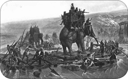
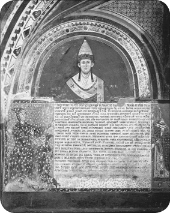

GİRİŞ
“Tarihi kazananlar yazar” sözünün bir gereği olarak Avrupa ya da nam-ı diğer “Batı”nın bakış açısını bilmek, Batı’nın yaşadığı tarihsel süreç hakkında bilgi sahibi olmak günümüzde her zamankinden daha da önemli hale gelmiştir. Zira hâlihazırda baskın olan dinsel, kültürel, siyasal eğilimler büyük ölçüde bu küçük kıtanın şekillendirdiği değerlerdir. Çağımızda bu denli etkin olan Avrupa’nın, mekan ve kültür olarak nerede başlayıp nerede bittiği konusu da ayrı bir muammadır. Bu durumdan yola çıkarak bazı araştırmacılar Avrupa’nın özgün bir kıta dahi olmadığını, Asya’nın coğrafi bir uzantısı olarak kabul edilmesi gerektiğini dile getirirler. Yine coğrafi olarak bu kıtayla uzaktan yakından alakası olmayan Japonya, Avustralya, Amerika Birleşik Devletleri ve Kanada gibi devletler Batı uygarlığının bir parçası olarak kabul edilirken; topraklarının bir kısmı Ural Dağları’nın batısında bulunduğu için coğrafi anlamda Avrupa’nın bir uzantısı olan Rusya, Batı dünyasının uzun bir süre dışında sayılmıştır. Hatta denilebilir ki mensup oldukları Ortodoks mezhebi ve yaşadıkları tarihsel süreç farklı olduğu için Bulgar, Sırp, Arnavut gibi topluluklar da uzun bir müddet “Avrupalı” tanımının dışında tutulmuşlardır. Buna karşılık Balkan toplulukları içinde yer alan Yunanlara ise Yeniçağ’dan itibaren Avrupa kültürünün oluşumuna önemli bir zemin hazırladıkları düşünüldüğü için ayrı bir önem atfedilmiştir.
Avrupa kültürü kendini, “öteki” olarak tanımladığı bazı uygarlıkların zıddı olarak takdim etmiştir. Hatta belki de bu takdimin köklerini Eski Yunan ve Roma kültürlerine kadar taşımak mümkündür. Bu bağlamda Yunanların, eski çağlarda “barbar” olarak tanımladıkları Makedonların lideri İskender’e günümüzde sahip çıkması trajikomik bir durumdur. Yeniçağ düşünürlerinden bazıları Avrupalılık kavramını tanımlarken Doğu toplumlarına özellikle gönderme yapmak istemiş; Batı’yı “aklın egemenliği, bireyin özgürlüğü, liberal ve demokratik değerlerin geçerli olduğu bir toplum” olarak betimlerken, Doğu’yu da tam tersine “geleneksel, muhafazakâr, kültürel bir kısır döngü içinde bocalayan, despotik bir toplum” olarak tanımlamıştır. Bu yaklaşımla birlikte, doğal olarak, daha ilkçağlardan itibaren önce Yunan, sonra Helenistik ve ardından da Roma uygarlıklarını besleyen Mısır, Mezopotamya, İran ve Anadolu coğrafyalarında yaşayan farklı kültürler görmezden gelinmiştir. Yine Ortaçağ’da yaşanan Haçlı seferleri süreci, sonrasında Yeniçağ başlarında tüm Akdeniz’e damgasını vuran Osmanlı varlığı aynı akıbete uğramış, Avrupa kendi kendini yaratan bir toplum olarak takdim edilmiştir. Osmanlı fetihleri Şark despotizminin Batı’ya sızma teşebbüsleri olarak lanetlenirken, Batı’nın emperyalist emellerle Doğu’ya hâkim olma girişimleri, medeni değerlerin taşınması, Doğu halklarının uyanışına ortam hazırlaması olarak sunulmuştur. Avrupa’nın doğusunda yer alan farklı toplulukların farklı tarihsel süreçlerden geçtikleri, bunun neticesinde farklı değerler silsilesi oluşturdukları görmezden gelinmiş, tek doğrunun Avrupa merkezli fikirler olduğu dikte edilerek kültürel sömürgeciliğin tohumları atılmıştır.
Diğer yandan Avrupa da bir yerde Doğu dünyası ve Türk toplumunun “öteki”sidir. Zira Türk tarihi kendi mazisini aktarırken sıklıkla Avrupa tarihine göndermeler yapar. Osmanlı tarihinin parlak evreleri, Avrupa’nın ahlaki ve kültürel açıdan iflasıyla bir arada sunulurken, aynı devletin çöküş evreleri de acımasız Avrupa kapitalizminin vahşiliğine mâl edilir. Öte yandan “Milli Tarih” yazımı içinde Avrupa’nın öykünülen bazı özelliklerinin kökleri İslam öncesi Türk tarihinin çok eski devirlerinde aranır. Örneğin Orta Asya’da yaşayan Türkler köleci toplum yapısına karşı iken, Avrupa tarihi 18. yüzyıla kadar köle emeği sayesinde yükselir. Romalılarda kadın tümüyle kocasına tabii iken, Orta Asya’da yaşayan Türk kadını kocası ile eşit seviyededir. Ya da Avrupa laisizm ile ancak Fransız İhtilali ile tanışırken, Türk toplumu bu kavramla Tuğrul Bey’in 1055 Bağdat Seferi sırasında çoktan tanışmıştır. Resmî söylemde ve ders kitaplarında da yer alan bu anlatıya göre Bağdat’a giren Tuğrul Bey, halifenin dinî liderliğini tanırken, kendisi de dünyevi iktidarı üstlenmiştir. Dolayısıyla mevcut gelişmeler ya da toplumların sosyal yaşam tarzı, yaşadıkları bölgenin iklimi, temel geçim kaynağı göz önüne alınmadan yapılan bu karşılaştırmalar afaki olmakla birlikte, Batı’ya ve Batılı değerlere duyulan hayranlığın da açık bir örneğidir. Bu tür yorumlar yaparken İlkçağ Avrupa topluluklarının tarımla uğraştıkları için köle gücüne ihtiyaç duydukları, daha ziyade yarı göçebe yaşam tarzını ve hayvancılığı benimsemiş Orta Asya boylarının ise doğal olarak köleciliğe yabancı kalacakları unutulmamalıdır. Yine zorlu yaşam koşullarından dolayı kadın-erkek-çocuk demeden her an savaşa hazır olmayı mecbur kılan yarı göçebe yaşam şekli ile, üretim ve tüketim ilişkilerinin belli bir düzende seyrettiği şehir yaşamını karşılaştırmak da pek akıl kârı değildir.
Tüm bu yönelimler Avrupa tarihinin ve bu anlamda Avrupa’nın farklı dünyalarla olan tarihsel ilişkilerinin bilinmesini zorunlu kılıyor. Ülkemizde Avrupa tarihini konu alan sınırlı sayıdaki kitabın önemli bir bölümü, maalesef genel okur kitlesi ile buluşamamaktadır. Bu sebeple Avrupa’nın tarihsel süreçte “ötekisi” konumundaki Doğu toplumları ile olan ilişkileri üzerine yoğunlaşan makalelerden meydana gelen bu kitap, genel okur kitlesi göz önüne alınarak hazırlanmıştır. Makale konuları incelendiğinde yazıların ilkçağlardan yakın zamanlara kadar Batı uygarlığının İslam dünyası, Çin, Amerika kıtası gibi farklı coğrafyalarla olan münasebetleri konusuna odaklandığı hemen fark edilecektir. Ya da Avrupa etkisiyle genel kabul gören şekli ile ifade edecek olursak yazılar daha ziyade Avrupa’nın Yakındoğu, Ortadoğu ve Uzakdoğu coğrafyaları ile olan temasları üzerine yoğunlaşmıştır. Buradaki uzaklık kavramlarının da Avrupa merkeze alınarak oluşturulduğu pek çoğumuzun malumudur.
Bu çalışmanın ortaya çıkmasında pek çok kişi ve kurumun desteği vardır. Bu anlamda özellikle İSAM, Bayezid Devlet, Robert Koleji, Fransız Anadolu Araştırmaları, İstanbul Araştırmaları Enstitüsü kütüphanelerinin çalışanlarına verdikleri destek için teşekkür ederim. Her çalışmamda görsel malzeme konusunda ellerindeki koleksiyonu istifademe sunan Nasen Can, Levent Safran ve Halit Ömer Camcı’ya da sonsuz teşekkürler. Sevgili öğrencilerimin derslerde sorduğu sorular ve meraklarının yoğunlaştığı konular da yazı konularının belirlenmesinde önemli ölçüde etkili oldu. Son olarak okul ile kütüphane arasındaki yoğun tempom nedeniyle birlikte geçirdiğimiz vakitlerden çalarak bu eseri hazırladığım çok sevgili eşim Nejla ve oğlum Erdem’e içten sevgi ve minnet duygularımla…
Aksaray / İSTANBUL
Ekim 2011
1 / ROMA’NIN BELALISI PYROS
Dünyanın en görkemli imparatorluklarından biri olan Roma’nın temelleri M.Ö. VII. yüzyılda atılmıştı. Latium bölgesinin en önemli şehirlerinden biri olan Roma, ilk zamanlar Etrüsk kökenli krallar tarafından idare edilmişse de, sonradan bu krallar “patrici” adı verilen aristokratların liderliğinde şehirden kovulmuşlardı. Böylelikle monarşi devrilerek cumhuriyet idaresine geçilmişti. Cumhuriyet döneminin başlarında güç, üyeleri patrici sınıfına mensup ailelerden seçilen “senatus” adlı meclisin elindeydi. Meclis, ülkeyi “konsül” adı verilen ve bir yıllığına seçilen üst düzey memurlar vasıtasıyla idare ederdi. Bu dönemde Roma, Latin kökenli toplulukların yaşadıkları Latium bölgesinde giriştiği bir dizi mücadele sonrasında üstünlük temin etmeyi bilmişti. Özellikle Etrüsk şehirleri sindirilmiş, eski efendiler üzerinde bu suretle nüfuz tesis edilmişti.
VAE VİCTİS
Ancak Roma, M.Ö. 387’de tarihinin en büyük felaketlerinden birini yaşadı. Britanya’da Kelt, Anadolu’da Galat diye bilinen Galyalılar, bu tarihte İtalya’yı kuzeyden itibaren istila etmeye başladılar. Roma, Galyalıları şehre on beş kilometre mesafedeki Allia Irmağı kıyısında karşıladıysa da, büyük bir mağlubiyete uğradı. Ülke gençlerinin çoğu savaş alanında hayatını kaybetti. Sonrasında Galyalılar, Roma’nın dış duvarlarını aşarak şehri işgal edip ateşe verdiler. Lakin kuşatma taktiklerini bilmemeleri, Roma’yı mutlak bir felaketten kurtaracaktır. Galyalılar, bir müddet şehir önlerinde kaldılar. Ancak kuzeydeki hareket üslerinden gelen karışıklık haberleri üzerine, Roma ile uzlaşmaya razı oldular. Roma, yüklü bir tazminat karşılığında Galyalıları şehir surları önünden uzaklaştırmayı başardı. Yaşanan bu olay sonrasında Galyalıların şefi konumundaki Brennus’un ağzından çıkan “Vae Victis” yani “Veyl mağluplara” sözü, Batı’da darb-ı mesel olacaktır. Brennus, haracın tartılması sırasında hile yaptığını öne süren Romalı bir senatör için bu sözleri sarf etmiş ve sonrasında da kılıcını ağırlık birimlerinin olduğu kefeye koyarak Romalılara gözdağı vermişti.
Galyalı savaşçı
Her ne kadar şehir kurtarılmış olsa da kayıp büyüktü. Evvela Roma, savaşabilecek durumda olan nüfusunun büyük bir bölümünü muharebe alanında bırakmıştı. Dahası, şehir ateşe verilmiş, Latium bölgesinde diğer kentler üzerinde tesis edilen nüfuz sona ermişti. Başta Etrüskler olmak üzere Roma’nın düşmanları tekrar harekete geçmişlerdi. Roma, tıpkı gelecekteki Hannibal ve bu yazıya konu olan Pyros felaketlerinde de tekrarlanacağı üzere, bu sıkıntıları atlatmasını bildi. Nitekim yaşadıkları, Roma’yı sindirmek bir yana daha da agresifleştirecektir. Roma, “Yutulmadan yutma” politikasını uygulamaya başlayacaktır. Ancak bundan önce, benzeri bir istilanın yaşanmaması için şehir surlarının tahkimi yoluna gidilir. Sonrasında ordu yeniden düzenlenir. Böylelikle olası bir saldırıya karşı en temel tedbirler alınmış olur. Bu tedbirler, kısa bir süre sonra sınanacaktır da. Öncelikle Tiber Nehri kenarına kadar sokulmuş olan Etrüskler püskürtülür. Roma surları, sonraki yıllarda yapılan Galya akınlarını da başarı ile durdurur. Diğer Latin kentleri üzerinde de zaman içinde yeniden üstünlük tesis edilerek, Roma önderliğinde bir Latin birliğinin temelleri atılır. Romalılar, Galya istilasının izlerini aradan yarım asır geçmeden tümüyle sileceklerdir.
Roma’nın forum alanı
Roma, M.Ö. IV. yüzyıl ortalarından itibaren Orta İtalya’nın egemenliği için Samnitlerle mücadele etti. Fasılalarla devam eden üç büyük savaşın ardından, Samnitleri de kontrol altına alarak bu bölgenin mutlak hâkimi oldu. Böylelikle sıra İtalya’nın güneyine gelmiş oldu. Bölgenin güney kısmı Helen kolonileri tarafından çevrelenmişti. Roma, bu Helen kentlerinden bazılarını da himayesi altına aldı. Bölgedeki bu genişlemeden rahatsız olan devletlerin başında ise yine bir Helen kenti olan Tarentum gelmekteydi.
Esasen İtalya’nın güneyi daha M.Ö. VIII. yüzyıldaki Helen kolonizasyonu devresinden itibaren Yunanistan’daki topluluklarca iskan edilmişti. Bu sebepledir ki bölge, “Büyük Hellas” adı ile anılır olmuştur. Ancak zaman içinde bu Helen kentleri zayıflamış ve dışarıdan gelen istilacılara karşı kendilerini koruyamaz hale gelmişlerdi. Bunun neticesinde ellerinde bulunan zenginlik kaynaklarını devreye sokmak ve kendi emniyetlerini bu suretle yabancı ülkelerden davet ettikleri kral ya da paralı askerlere teslim etmek yöntemini benimsediler. İşte Roma’nın M.Ö. IV. yüzyılda Güney İtalya’ya sarkmaya başlaması, doğal olarak bölgede benzer bir tutumu yeniden gündeme getirdi. Buradaki Helen kentlerinden birisi olan Thurii, bölgede yaşayan Lucanların saldırılarından korunmak için Romalıları davet etmişti. Roma, Güney İtalya’nın en güçlü şehirlerinden biri olan Tarentum’un tepki göstereceğini hesap etmesine rağmen, yardım çağrısına olumlu yanıt verir. Thurii kentine bir Roma garnizonu yerleştirilir. Aynı günlerde bir Roma filosu da çıkan fırtınadan korunmak için Tarent Körfezi’ne sığınmak zorunda kalır. Halbuki önceki yıllarda Tarentum ve Roma arasında varılan bir anlaşmaya göre, Roma gemilerinin her ne sebeple olursa olsun Tarent Körfezi’ne girmeleri yasaklanmıştı. Tarentum’un yaşanan gelişmelere tepkisi sert olacaktır. Önce limandaki Roma gemilerine saldırılır, ardından da Thurii kentine yürünerek buradaki Roma garnizonu bölgeyi terk etmeye zorlanır. Romalılar meseleyi diplomatik yöntemlerle çözmek için Tarentum’a elçi gönderirlerse de hakaret ile karşılaşırlar. Savaş kaçınılmaz bir hale gelince Tarentum, Epir kralı Pyros’u bölgeye davet eder. Esasen Tarentumlular, daha önceki yıllarda da bölgedeki yağmacı topluluklara karşı Sparta’dan, Syrakusa Krallığı’ndan ve Epir’den askerî yardımlar temin etmişlerdi.
ROMA, FİLLERLE KARŞILAŞIYOR
Pyros, Helen ülkesinin Adriyatik Denizi’ne bakan kıyısında ve Güney İtalya’nın tam karşısında bulunan Epir bölgesinin hâkimi idi. Büyük bir taktisyen ve başarılı bir asker olan Pyros, Helen coğrafyası ve İtalya’yı kontrolü altında tutan güçlü bir devlet kurmayı hedefliyordu. Dolayısıyla Tarentum’dan kendisine gelen daveti hiç tereddüt etmeden kabul etti. Pyros, İtalya coğrafyasında yaşayanların o vakte kadar bilmedikleri, ama Hindistan’a kadar uzanmış olan Büyük İskender sayesinde Helenistik krallıklarca bilinen ve orduda kullanılan filleri ile beraber İtalya’ya ulaştı. 20 filin yanı sıra falanks düzeninde savaşan güçlü bir ordu Tarentum önlerinde karaya çıkmış ve Tarentumlular, kentin anahtarlarını Pyros’a teslim ederek onu başkumandan olarak tanımışlardı. Bunun üzerine Pyros, vakit kaybeden Romalılara karşı harekete geçti. İlk olarak M.Ö. 280’de Romalıları, Tarent Körfezi’nin batısında bulunan Heraklia şehri önlerinde ağır bir mağlubiyete uğrattı. Bu zafer, Pyros’a Güney İtalya’da pek çok müttefik kazandırdı. Sonrasında Roma’nın kalbi olan Latium bölgesine girdi. Ancak burada, Roma’nın müttefiki olan şehirlerin Roma’ya sadık kaldıklarını görerek Tarentum’a geri çekildi. Kazandığı muhteşem zaferin meyvelerini toplayamamış, buna mukabil anakarasından çok uzakta olduğu için ordusu da epey yıpranmıştı. Roma’nın işini kısa sürede bitiremediği takdirde Pyros’u büyük sıkıntılar beklemekteydi. Üstelik Helenler de güvenilir müttefikler değillerdi. Zira Pyros’un bölgede kazandığı saygınlıktan duydukları rahatsızlığı her fırsatta dillendirmekten geri kalmıyorlardı.
Pyros’un filleri
Pyros, ertesi yıl Romalıların Tarentum’un kuzeyindeki Apulia bölgesinde bulunan kuvvetlerine taarruz etti ve kesin bir zafer kazandı. Ancak kayıpları o kadar ağırdı ki, yanında bulunan adamlarına “Eğer Romalılara karşı bir zafer daha kazanırsam mahvolacağım” dediği rivayet olunur. Oysa Roma, Pyros’un tam tersine kendi anakarasında savaşıyor ve kayıplarını çok daha kolay giderebiliyordu. Bu nedenle Pyros, Roma ile barış yollarını aramaya başladı. Lakin durumun farkında olan Roma senatosu, bu girişimlere olumlu cevap vermedi. Neyse ki zaman Roma’nın lehine işliyordu. Üstelik geçen süre içinde Roma’dan kopan pek çok müttefik de yeniden Roma’ya yanaşma yoluna gitmişti. Zira Pyros’un çekilip gitmesinden sonra, Roma’nın korkunç öfkesi ile karşı karşıya kalacaklarını biliyorlardı.
Epir kralı Pyros
İtalya’ya yaptığı çıkartmanın üçüncü yılında, bu kez Sicilya’daki Helen kentleri kendisinden yardım talebinde bulundular. Fakat bu kez düşman Roma değil, Kuzey Afrika merkezli Kartaca idi. Pyros bu teklifi de kabul etti. Sicilya’ya geçerek Kartacalıları neredeyse tamamen bölgeden söküp attı. Kartacalılar adanın ancak bir iki noktasında tutunabilmişlerdi. Roma ile yaptığı mücadelelerin Pyros’a tecrübe kazandırdığı ortadaydı. Epir kralı, Sicilya’da vakit kaybederek ordusunu daha da zayıflatmak yerine kesin sonuca ulaşmak için doğrudan Kuzey Afrika’da bulunan Kartaca’ya saldırmaya karar verdi. Böylece meseleyi kökten çözecekti. Lakin devreye bir kez daha Helen devletleri girdi. Helenler, Kartacalıların bölgeden çıkarılmasının kendileri için yeterli olduğunu beyan ederek, Pyros’a Kartaca seferi için askerî ya da maddi konularda destek vermeyeceklerini açıkça ifade ettiler. Pyros, tıpkı kendisinden sonra İtalya’yı istila etmek isteyen Hannibal gibi bir açmazla karşı karşıya kalmıştı.
ROMA’YI KÜÇÜK HESAPLAR KURTARDI
Epir kralı en büyük darbeyi ise Romalılarla M.Ö. 275’te giriştiği Beneventum Savaşı’nda yedi. Bu savaşta artık kaynakları tükenme noktasına geldiği için ilk ve son kez mağlubiyete uğramıştı. Yenilgi sonrasında Pyros, İtalya’da daha fazla kalmanın bir anlamı olmadığına kanaat getirecek ve kumandanlarından Milon’u bir miktar kuvvetle birlikte Tarentum’da bırakarak ülkesine geri dönecektir. M.Ö. 272’deki ölümü sonrasında bu kuvvetler de memleketlerinin yolunu tutacak ve korumasız kalan Tarentum, kısa bir süre sonra Roma tarafından ilhak edilecektir. Böylelikle Roma, bir kez daha düşmanlarının küçük hesapları neticesinde kurtulacaktır. Yarım asır kadar sonra Hannibal da Roma’ya benzer nedenlerden dolayı ölümcül darbeyi indiremeyecektir. Zira Kartaca’daki muhalifleri, Hannibal’a beklediği destek kuvvetleri göndermeyecek ve toparlanan Roma, önce Hannibal’ın, arkasından da Kartaca’nın sonunu hazırlayacaktır.
İTALYA’NIN GÜNEYİ BÜYÜK HELLAS OLARAK BİLİNİRDİ
İtalya’nın güneyi Helen kolonistler tarafından iskan edildiğinden dolayı M.Ö. VI. yüzyıldan itibaren “Megale Hellas” yani “Büyük Yunanistan” olarak tanınırdı. Bilindiği üzere Yunan coğrafyası tarımsal açıdan sıkıntılı bir bölgedir. Bu nedenle denizcilikle uğraşan Yunanlılar, M.Ö. VIII. yüzyıldan itibaren gerek Karadeniz’de gerekse de Akdeniz’de bir dizi kolonileşme faaliyetinde bulunacaklardır. Güney İtalya’da tesis edilen kolonilerin ortak özelliği, şehrin etrafına yayılan geniş tarım arazileridir. Bunun dışında çoğu kent, deniz kenarında kurulmuş olup önemli limanlara sahipti. Yarımadanın güney ve doğu kıyıları görece daha kolay kolonize edilirken, batıda varolan Etrüsk hakimiyetı, Helen kolonilerinin bölgede sınırlı varlık göstermesine sebep olmuştur. Koloni şeklinde tesis edilen şehirler zaman içinde ana karadan siyasi olarak kopmuş, ancak ekonomik ve kültürel ilişkilerini devam ettirmişlerdir. Zamanla bu koloni kentler de kendi kolonilerini kurmaya başlayacaklardır.
Helen kentleri, ilerleyen yıllarda idari, dinî, kültürel alanlarda Roma’yı da derinden etkileyeceklerdir. Pek çok Helen mitosu, Yunan tanrıları ve Yunan alfabesi, onlar vasıtasıyla yarımadaya girecektir.
Helen kentlerinin temel zenginlik kaynağını ticaret oluşturuyordu. Zenginliğin de etkisiyle bu coğrafyada önemli kültürel gelişmeler yaşandı. Suyun kaldırma kuvvetini bulan Arşimed de yine bir Helen kenti olan ve Korintliler tarafından kurulan Sirakuza’da yaşamış ve son nefesini bu şehirde vermişti. Sirakuza, iki limana sahip olması sebebiyle İtalya’daki en görkemli Helen kentlerinden biri konumundaydı. Arşimed sadece suyun kaldırma kuvvetini bulmamış, aynı zamanda Sirakuza Romalılarca kuşatıldığı sırada kurguladığı kuşatma aletleri vasıtasıyla Romalıların da epey canını yakmıştı. Geliştirdiği savunma yöntemleri arasında güneş ışınlarını büyük bir ayna aracılığı ile yansıtarak Roma gemilerini yakmak, şehir surları önünde beliren Roma kadırgalarını, geliştirmiş olduğu bir vinç sayesinde denizden çıkararak alabora etmek ya da çok büyük taşları devasa mancınıklarla Romalılara fırlatmak geliyordu.
KAYNAKÇA
Sabahat Atlan, Roma Tarihinin Ana Hatları, I. Kısım Cumhuriyet Devri, İstanbul 1970.
Clemens Bosh, Roma Tarihinin Ana Hatları I. Kısım Cumhuriyet, (Tercüme: Sabahat Atlan), İstanbul 1940.
Halil Demircioğlu, Roma Tarihi, I. cilt, Ankara 1987.
Helge Hesse, 80 Cümlede Dünya Tarihi, (çev: Çiğdem Canan Dikmen-Gül Gürtunca) İstanbul 2008.
Arif Müfid Mansel, Ege ve Yunan Tarihi, İstanbul 2004.
Arif Müfid Mansel, Eski Doğu ve Ege Tarihinin Ana Hatları, İstanbul 1945.
Adnan Pekman, Ana Hatları ile Ege-Yunan-Roma Tarih ve Uygarlıkları, Trabzon 1967.
Oğuz Tekin, Eski Yunan ve Roma Tarihine Giriş, İstanbul 2008.
2 / HOLLYWOOD’UN 300 SPARTALISI
M.Ö. V. yüzyılda gerçekleşen Pers-Yunan mücadelesi, bilindiği üzere daha ziyade Termofil Savaşı vesilesiyle birkaç kez beyaz perdeye aktarılmıştı. Bunlardan özellikle 2007 yapımı olan “300 Spartalı” filmi, gerek dünya genelinde, gerekse de ülkemizde büyük ilgi uyandırdı. Özellikle kullanılan efektler ve çok kesin çizgilerle belirlenen İranlı-Yunan imajı, seyircilerin belleklerine kazındı. Esasen tarihin beyaz perde üzerinden insanlara aktarımı, beraberinde çok ciddi tehllikeleri de getiriyor. Nitekim tarihin en militarist toplumlarından birisi demokrasinin savunucusu olarak izleyicilere takdim edilirken, saray teşrifatı ve eyalet sistemi başta olmak üzere Roma İmparatorluğu vesilesiyle tüm Akdeniz coğrafyasını etkilemeyi başaran parlak Pers uygarlığı despotizmin kalbi olarak sunuluyor. Dolayısıyla film, bugüne de çok güçlü göndermeler yapmış oluyor. Amerika tarafından şer ekseninin merkezine konulan İran, 2500 yıl öncesini anlatan bu filmde aynı eksenin ana odağında… Film, haklı olarak bazı eleştirmenlerce medeniyetler çatışmasının son halkası olarak görüldü. Bu vesileyle biz de Sparta toplum yapısına bir nebze bakalım. Böylelikle de sinemanın neleri değiştirebilme gücü olduğuna bir nazar etmiş olalım:
Sparta toplumu ile ilgili ana kaynakların başında, miladi I. yüzyılda yaşamış olan Yunan tarihçi Plutarkos’un “Likurgos’un Hayatı” adlı eseri gelir. Likurgos, Spartalıların efsanevi kralı ve yasa koyucusudur. Dolayısıyla Plutarkos’un çalışması, Sparta’nın bu yasa koyucu sayesinde yaşadığı değişim ve dönüşümü, Sparta’nın Yunan coğrafyasında ulaştığı gücün temellerini anlatmayı hedefler. Böylelikle Plutarkos, bize Sparta toplumunun en ince noktalarını dahi aktaran ve hâlihazırda Sparta toplumu hakkında en temel bilgi kaynaklarından biri olan eserini bırakır.
“300 Spartalı” filminin afişi
Spartalı Likurgos’a göre bir toplum içindeki bütün fenalıkların kaynağı zengin ve yoksul arasındaki uçurumdur. Bu farkın yok edilmesi ve sonrasında yeniden oluşmaması için, devlet kanalıyla bir kontrol mekanizması kurmak gerekmektedir. Şu halde vatandaşlar arasında mülk ortak olmalı, para kavramı ortadan kaldırılmalı, zenginliğe yol açan ticaret ve benzeri uğraşlardan uzak durulmalıydı. Sparta vatandaşı olan ve 20 yaşına gelmiş her özgür yurttaşa eşit miktarda toprak dağıtılmalı, yurttaşlar arasında sınıfsal farklılığa sebebiyet verecek her türlü yaşam tarzına engel olunmalıydı. Ülke, adeta bütün kardeşler arasında eşit şekilde bölüşülmüş bir çiftliğe benzemeliydi. Üretim “helot” adı verilen toprak kölelerince gerçekleştirilmeli ve Sparta erkekleri kendini daha büyük bir erdem için, yani vatanlarının korunması ülküsüne hazırlamalıydılar. Bunun neticesinde Sparta Devleti, neredeyse doğduğu ilk andan itibaren yurttaşları üzerinde belirleyici bir konuma ulaşmış oluyordu.
KADINLAR VE GÖREVLERİ
Sparta toplumu içinde kadınlar sağlam çocuk doğurmalı ve devlet yedi yaşında bu çocuklara el koyana kadar da elverdiğince çelik iradeli bireyler yetiştirmeliydiler. Onlara kahramanlık hissiyatı verecek marşlar okumalı, canını Sparta için veren büyük atalarının destansı hikayelerini anlatmalıydılar. Spartalı bir anne, ruhun yumuşamasına sebebiyet veren şeylerden çocuğunu sakınmalıydı. Sparta kadınları da erkekleri gibi sert bir eğitime tâbi tutulur, koşu yapar, disk ve ok atarlardı. Likurgos’a göre sağlam bir neslin tohumu ancak sağlam bir bedende gelişebilirdi. Kızlara erkeklerden kaçmamaları tembihlenir, hatta bazı durumlarda genç kızlar eğitim sırasında beceriksiz tavırlar sergileyen erkeklerle alay ederek onları daha bir azimle çalışmaya sevk ederlerdi. Bu sebeplerden dolayı Sparta kadınları, diğer Yunan kadınlarına göre erkekleri üzerinde daha rahat otorite kurabilen kadınlar olarak algılanagelmiştir. Nitekim 300 Spartalı ile Termofil Geçidi’ni savunan Kral Leonidas’ın karısı Gorgo’ya, yabancı bir kadın “Siz Sparta kadınları, erkeklerine talimat verebilen tek kadınlarsınız” demiş ve Gorgo’dan da “Biz Sparta kadınları erkek doğuran tek kadınlarız da ondan” cevabını almıştı.
Tahmin edilebileceği üzere erkek çocukların eğitimi, kız çocuklarına göre çok daha zordu. Sparta, militarist bir yapıya sahip olmaya mecburdu. Bu devletin kökleri Dor akınları sonrasında buraya yerleşen atalarına dayanıyordu. Herkül’ün soyundan geldiklerine inanan Dor kökenli Spartalılar, yerli halka göre azınlık durumundaydılar. Sıklıkla yerli halkın isyanları ile karşı karşıya kalmaları, onları seçkin savaşçı vatandaşlar yetiştirmeye zorlamıştır. Sparta’da doğan her erkek çocuk, doğar doğmaz toplumun en yaşlılarınca muayene edilirdi. Doğan bebek askerlik yapmaya elverişli gürbüz bir çocuk ise büyütülmesi emredilir, eğer vücudunda herhangi bir kusur ya da zayıflık emaresi varsa ülkenin sınırlı kaynaklarını boş yere tüketmemesi için Taygetos Dağı’na çıkarılarak oradaki bir uçurumdan aşağı bırakılırdı. Nitekim “300 Spartalı” filminde Spartalılara ihanet ederek Pers ordusuna yardım eden Efialtes, bu şekilde anne ve babasınca öldürülmeyerek sağ bırakılan bir kişiliği canlandırıyordu.
Sparta’nın efsanevi yasa koyucusu Likurgos
Yedi yaşına kadar annesi tarafından bakılan Spartalı erkek çocuklar, bu süre içinde bezlerle sarılıp sarmalanmaz, yiyecek seçmelerine izin verilmez, karanlıktan korkmamaları, nazlanmamaları, mızmızlanmamaları konusunda sıkı bir terbiye alırlardı. Bu sebeple bazı Yunan devletlerinde soylular, çocukları için Spartalı dadılar arar fakat Sparta toplumunda yabancı bir kadının çocuk yetiştirmesine asla izin verilmezdi. Yedi yaşına basan çocuğa ise devlet el koyar ve onu annesinden ayırarak “agelaia” yani küme denilen bir topluluğun içine koyardı. Burada çocuk diğer yaşıtları ve ağabeyleri ile birlikte yaşamayı, yemek seçmemeyi, emre itaat etmeyi, kavga etmeyi, yediği darbelere karşı ayakta kalmayı öğrenirdi. Yine çocuklara hırsızlık yapmaları, yiyeceklerini çalarak edinmeleri de öğretilirdi. Sparta toplumunda hayatta kalmak için yapılan hırsızlık suç kabul edilmezken, yakalanmak büyük ayıp sayılırdı. Bu sebepledir ki hırsızlık yaptığı anlaşılan kişi, çaldığı için değil, yakalandığı için şiddetli biçimde cezalandırılırdı.
SPARTA USULÜ TERBİYE
Daha büyük çocuklar bu eğitim sürecinde küçüklere yol göstermekle görevliydi. Kümeye alınan çocuğun saçları kesilir, yalınayak yürür ve yaz kış neredeyse çırılçıplak dolaşırdı. 12 yaşına geldiklerinde çocuklara bir pelerin verilirdi. Bu pelerin aynı zamanda öldükleri vakit kefenleri de olurdu. Zira Spartalılar, ölen erkekleriyle birlikte sadece pelerinlerini gömerlerdi. Yalnızca savaşta ölen erkekler ile doğumda ölen kadınların isimleri mezar taşına kazınırdı. Spartalı gençlerin karınlarını doyurmalarına, sıklıkla banyo yapmalarına, güzel kokular sürmelerine izin verilmezdi. Ancak delikanlı eğitimini tamamlayıp 20 yaşına geldikten, yani tam anlamıyla Sparta vatandaşı olduktan sonra, savaşa giderken bu konulardaki sınırlamalar kaldırılırdı. Savaşçıların yıkanmalarına, güzel kokular sürmelerine, saçlarını uzatmalarına ve güzel yemekler yemelerine izin verilirdi. Lakin Spartalı bir genç bu konularda o kadar titiz davranırdı ki, savaşmasına engel teşkil edecek herhangi bir aşırılığı yapmazdı. Yine Spartalılar açısından ölüm son derece sıradan bir şeydi ve savaş alanında can vermek güzel bir ölümdü. Spartalılar cenazelerini şehir dışına değil, tapınakların hemen yanına gömüyorlardı. Böylece ölümün aleladeliği vatandaşlara hatırlatılıyordu.
Sparta toplumunda çok konuşmak da terbiyesizlik kabul edilirdi. Kişi, aklındakini en açık ve en net şekilde söylemeye teşvik edilirdi. Bu sebeple Spartalılar, dönemlerinin en hazırcevap insanları olarak bilinirdi. Plutarkos’un anlattığına göre bir Atinalı, onların kısa kılıçları ile alay etmek için bir Spartalı’ya “Tiyatrolarda hokkabazlar en kolay sizin kılıçlarınızı yutuyor” dediği vakit, “Ama bizim kılıçlarımız doğrudan düşmanın yüreğine ulaşır” cevabını almıştı. Yasa koyucu Likurgos’un yeğenine Sparta’da niçin az yasa olduğu sorulduğunda “Az konuşanların çok yasaya ihtiyacı yoktur” şeklinde bir cevap vermişti. Yabancı bir adam Spartalıları ne kadar sevdiğini göstermek için “Benim ülkemde bana Spartalıların dostu derler” şeklinde bir söz sarf ettiğinde de “Sana kendi yurttaşlarının dostu denmesi daha iyi değil mi?” şeklinde bir cevap verilmişti. Yeri gelmişken hemen belirtelim ki Spartalılar, yabancıların ülkelerine gelmelerine de sıcak bakmazlardı. Zira yabancılar kendi kokuşmuş düzenlerini de beraberlerinde getirdikleri için, bu durum gençler açısından iyi bir örnek teşkil etmemekteydi. Zaten ticari faaliyetin neredeyse hiç olmadığı bir memleket, yabancılar açısından da büyük bir cazibe taşımıyordu.
Bir hoplit başlığı
Devletin vatandaşlarına müdahalesi bu kadarla sınırlı değildi. Vatandaşlarının medeni durumlarına da karışıyor, onları evlenmeye ve sağlıklı çocuklar yapmaya teşvik ediyordu. Hatta bazı usta savaşçılar sırf bekar oldukları için kendilerinden daha genç Spartalılardan saygı görmeyebiliyorlardı. Nitekim ünlü komutanlardan Derkyilidas’ı gören bir asker ona yerini vermeyi reddettiği gibi, kendisine de “İleride bana yerini verecek bir oğlun bile yok senin” demiş, bu sözleri nedeniyle de çevresindeki Spartalılarca ayıplanmamıştı. Bekarlar bazı törenlere katılmaktan menedildikleri gibi, şehir meydanında çıplak dolaşmaya mecbur bırakılıyorlardı. Evlenmek isteyen bir delikanlı, bunu kız kaçırmak suretiyle yapıyordu. Kaçırılan kızı yaşlı bir kadına teslim ediyor, onunla birlikte olduktan sonra da yine diğer arkadaşlarının yanına giderek kışla yaşamına geri dönüyordu. Sonraki günlerde de karısının yanına çekinerek ve gizlice uğramaya devam ediyordu. Başkalarının onların birlikte vakit geçirdiklerini görmesi büyük ayıp olarak algılandığından çiftler, buluşmaları sırasında gizliliğe büyük önem vermekteydiler. Likurgos, bu yolla birbirine hasret kalan çiftlerin aralarındaki sevginin daha da çoğalacağına ve ihtirasın beraberinde getirdiği ölçüsüzlüklerden bu şekilde korunacaklarına inanıyordu.
Bronz bir hoplit heykeli
Spartalıların evlilik kurumuna bakış açıları da diğer toplumlardan oldukça farklıydı. Sparta toplumunda, her birey toplumun menfaatlerini ön planda tutmak durumundaydı. Gerek eğitim yoluyla, gerekse de yaşayış tarzıyla yurttaşlara bu duygu aşılanmaya çalışılıyordu. Bu sebeple yaşlı vatandaşların genç eşlerini, kendilerinden daha genç ve güçlü Spartalılarla paylaşmaları bir erdem olarak kabul ediliyordu. Bu evlilikten doğan çocuğu, yaşlı koca kendi öz evladı gibi kabul ediyor ve eğitimi ile bizzat ilgileniyordu. Ülke menfaatleri söz konusu olduğunda evliliğin başka toplumlarda beraberinde getirdiği kıskançlık, çirkin bir davranış olarak kabul ediliyordu. Yine saygın bir erkek, bir başka saygın savaşçıdan eşi ile birlikte olmak için izin isteyebiliyor ve bu birliktelikten doğan çocuk, iki değerli savaşçının ortak evladı olarak kabul ediliyordu. Sparta toplumunda bu tür çocuklar, iki değerli babaya sahip oldukları için, doğuştan şanslı kabul ediliyorlardı. İzin alınmak suretiyle gerçekleşen birliktelik zina olarak kabul edilmediğinden, Spartalılar birbirini aldatan karı-koca mefhumuna kendilerini yabancı görürlerdi. Hatta evliliğe ihanet durumunda çiftlere ne ceza verildiği bir Spartalı’ya sorulduğunda kendisinin verdiği cevap, “olmayan bir şeye verecek yanıtının olmadığı” şeklindeydi.
DEMOKRASİ DEDİĞİN…
Bu yazıyı kaleme almama bir yerde vesile olan Sparta demokrasisine gelince… Sparta’da yaşayanlar üç toplumsal sınıfa mensup kabul edilirdi. Birinci sınıf, kendilerine bulundukları bölgenin hâkimi oldukları için “Lakedaimonyalı” diyen Spartalılardı. Bunlar bölgeye gelen Dor savaşçıların torunları olup toprak işleri ile uğraşmaz, toprağı işleyen helotların elde ettiği ürünün %60’ına el koyarlardı. İkinci grup ise özgür olarak kabul edilen ancak gerek askerî ve gerekse idari açıdan Spartalılara bağlı olan “perioikos”lardı. Üçüncü ve en kalabalık sınıf olan “helot”lar ise Spartalıların yaşadığı coğrafyanın yerli halkından oluşurdu. Hiçbir siyasi hakları olmadığı gibi, zaman zaman nüfuslarının artmaması için Spartalılar tarafından sistematik olarak katledildikleri de olurdu. Uzun lafın kısası Sparta’da özgür insan her yerdekinden daha özgür, köle ise her yerdekinden daha köle idi. Dolayısıyla Kral Leonidas’ın “300 Spartalı” filminde Pers kralı Kserkes’e verdiği demokrasi dersi ile ilgili söylev, tarihî gerçekler göz önüne alındığında oldukça havada kalıyor.
Sparta kralı Leonidas Termofil Geçidi’nde
Yeri gelmişken Spartalıların yönetim anlayışından da biraz bahsedelim. Sparta’nın başlangıçta bir kral tarafından idare olunduğu ancak bu kral sayısının sonradan ikiye çıktığı biliniyor. İki ortak kral ülkeyi beraberce idare ediyorlardı. Krallardan biri sefere çıktığında diğeri bu suretle idari işlerle ilgilenebiliyordu. Krallar ilk başlarda pek çok İlkçağ toplumunda olduğu gibi başkomutan ve başrahip unvanlarını taşıyorlardı. Ancak sonradan birer memur düzeyine indirgendiler. Güç ise halk meclisinin eline geçti. İdari yapı içinde ayrıca “Gerusia” denilen bir de ihtiyarlar meclisi bulunuyordu. Bu meclis 60 yaşını geçmiş 28 üyeden oluşuyordu ve iki kralın da katılımıyla meclisin üye sayısı 30’u buluyordu. Bu meclis bir nevi danışma kurulu olarak faaliyet gösteriyordu. Ancak ülke içindeki asıl güç ”Apella” denilen ve savaşabilecek durumdaki her Sparta yurttaşının üyesi olduğu halk meclisinin elindeydi. Bu meclis, savaşa ve barışa karar verir, kanunlar hazırlar ve üst düzey devlet idarecileri ile Gerusia Meclisi üyelerini seçerdi.

Spartalı savaşçı
Sparta yüzyıllarca bu muhafazakâr yapısını korudu ve dışarıdan gelen fikirlere karşı tutumunda ısrarcı oldu. Nitekim komşularına karşı kazandıkları askerî zaferler de takip ettikleri yola olan inançlarını arttırmış olmalıdır. Varlık nedenlerini militarizme borçlu olan bu devlet, “300 Spartalı” filminde Hollywood’un, tarihe müdahale gücünün bir nevi göstergesi olarak farklı şekilde takdim edildi.
Pers askerî birimlerinden “Ölümsüzler”
PERSLERE GELİNCE...
Sparta’nın ve dolayısıyla Batı toplumunun ötekisi olarak takdim edilen Perslere gelince... Aslında Persler hakkında söylenecek çok söz var. Ancak özellikle Perslerin Romalılardan önce en örgütlü devletin sahibi olduklarını belirtmek gerekir. Perslerin kullandıkları pek çok yöntem, ilerleyen yıllarda gerek Roma gerekse de diğer devletler tarafından benimsenecektir. Örnek vermek gerekirse Persler, fethettikleri bölgeleri “satraplık” denilen eyalet parçalarına göre taksim ediyor ve bu şekilde yönetiyorlardı. Bu idari birimlerde zaman zaman yerel yöneticileri iş başına getiriyor, ancak onları merkezden tayin ettikleri müfettişler vasıtasıyla sıkı bir denetime tabi tutuyorlardı. II. Kiros zamanında kurulan posta sistemi, imparatorluğun farklı bölgeleri ile hızlı bir şekilde haberleşmeyi sağladığı gibi, merkezî otoriteyi de pekiştiren bir unsur olmuş;. ana yolların üzerinde yaklaşık 6 kilometrede bir kraliyet ulakları için konak yerleri tesis edilmişti. Persler ticari yolların inşasında da oldukça ustalardı. Nitekim İlkçağ’ın en önemli ticari güzergahlarından olan Kral Yolu, İran topraklarından Batı Anadolu’daki Efes ve Sardis’e kadar uzanıyordu.
Persler, ele geçirdikleri bölgelerde benimsenen dinî inançlara da müdahale etmemişler, vergiler düzgün bir şekilde ödendiği ve bir isyan durumu söz konusu olmadığı müddetçe, egemenlikleri altında tuttukları insanların manevi dünyasına müdahaleden kaçınmışlardı. Nitekim bu tutumun da etkisiyle Pers idareci zümresinin mensup olduğu Zerdüşti inancı, imparatorluk genelinde yayılma imkanı bulamayacak, daha çok Pers aristokrasisi tarafından benimsenmiş bir inanç olarak kalacaktır. Bazı kaynaklarda “dinsel hoşgörü” olarak da geçen bu tutum, bilindiği üzere uzun soluklu bir emperyal güç olmanın olmazsa olmaz kurallarından biridir. Yine Pers krallarının bir nevi hassa ordusu olan “Ölümsüzler” adı verilen birlik, kralın satraplar ve diğer güç odaklarına karşı savaşa hazır bir şekilde her an elinin altında bulundurduğu bir güç demekti ki, tüm bu uygulamalar Helenistik dönem devletlerinden, Roma, Abbasi Devleti ve Osmanlı İmparatorluğu’na kadar pek çok devlete ilham kaynağı teşkil edecektir.
Şimdi varın siz düşünün kim barbar kim uygar...
KAYNAKÇA
Mehmet Ali Ağaoğulları (editör), Sokrates’ten Jakobenlere Batıda Siyasal Düşünceler, İstanbul 2011.
Şevket Dönmez, “Perslerin Kayıp Satraplık Merkezi Bulundu”, Popüler Tarih, sayı: 12, Ocak 2010, s. 13-14.
Eugen Friedell, Antik Yunan’ın Kültür Tarihi, (çev: Necati Aça), Ankara 2004.
Arif Müfit Mansel, Ege ve Yunan Tarihi, Ankara 1988.
Ekrem Memiş, Eskiçağ Medeniyetleri Tarihi, Bursa 2006.
Ekrem Memiş, Eskiçağ Tarihinde Doğu Batı Mücadelesi, Konya 1993.
Mustafa Namık, Eski Yunan Terbiyecileri, İstanbul 1931.
Pluatarkhos, Likurgos’un Hayatı, (çev: Sebahattin Eyüboğlu-Vedat Günyol), İstanbul 2010
Kaan Polatlar, “Sparta ve Platon’un devlet anlayışı”, Bilim ve Ütopya, sayı: 124, Ekim 2004, s. 72-77.
Alaeddin Şenel, Siyasal Düşünceler Tarihi, Ankara 2002.
3 / ROMA’YA KÖK SÖKTÜREN ŞEHİR KARTACA
Roma, tarihin en muhteşem kurumsal yapılarından birini oluşturmuş ve asırlarca Akdeniz havzasına hâkim olmuştur. Gerek Akdeniz havzasının doğusunda ve gerekse de batısında kurulan pek çok devlet Roma’yı örnek almış, hatta onun devamı olma iddiasında bulunmuştur. Yurttaşlardan oluşan disiplinli ordusu ve idari sistemi düzenleyen başarılı örgütsel yapısıyla Roma, İlkçağ’ın hiç şüphesiz en mükemmel devletlerinden biri konumundaydı. Tüm bunlara rağmen Roma’nın yayılma süreci zaman zaman oldukça sancılı geçmiştir. Roma’ya cumhuriyet döneminde en büyük tehdit, Akdeniz’in karşı sahilinden, Tunus’taki Kartaca şehrinden gelecektir.
Fenikeli tacirler
Kartaca, Lübnan sahiline egemen olan ve M.Ö. VIII. yüzyılda Fenikeliler tarafından temelleri atılmış bir şehirdi. Fenikeliler, anavatanlarının doğusunda kalan Lübnan dağlarının iç kesimlere ulaşımı zorlaştırması sebebiyle denizciliğe yönelmişler, yaptıkları seferlerle Fas ve İspanya’ya kadar uzanmışlardır. Buralarda tesis ettikleri kolonileri vasıtasıyla, iç kesimlerdeki hammaddeleri sahile ve oradan da ticari pazarlara taşıyarak, Akdeniz ticaretine damgalarını vurmuşlardı. Antik devirde Akdeniz’in kuzeyi ve Karadeniz daha çok Helenler tarafından kolonize edilirken, Akdeniz’in güney kesimine Fenikeliler hâkim olmuştur. Koloniler, dinsel ve idari anlamda anakara ile bağlantılarını sürdürüyor olsalar da, zaman içinde bazıları anakaradaki şehir devletlerinden daha da önemli bir konuma gelebilmekte ve güçleri ile sivrilebilmekteydiler ki, Kartaca da bunlardan biridir.
Kartaca’nın Antik limanı
Kartaca’nın idari yapısı Roma’ya oldukça benzemekteydi. Nitekim Roma’da iktidar soylu patrici sınıfının elindeyken, Kartaca’da da idari yapıda rol almanın yolu soyluluktan geçiyordu. Roma gibi Kartaca’da da senatus ve halk meclis vardı. Üst düzey idareciler belli bir süreliğine seçiliyorlardı. Kartaca’nın Roma’dan en bariz farkı ise, Roma siyasi açıdan karada yaptığı savaşlarla sınırlarını genişletirken, Kartaca denizlerdeki üstünlüğünü devreye sokarak yeni koloniler kurma ve ticari pazarlar elde etme peşindeydi. Bu nedenle Kartaca devletinin sınırları dağınık bir görünüm arz eder. Topraklarının bir kısmı Kuzey Afrika’da, bir kısmı İspanya, Sicilya, Korsika, Sardunya ve İtalya’da idi.
Kartacalılar, çok erken denilebilecek bir zamanda İtalya ile ilgilenmeye başlamışlardır. Bunun iki nedeni olduğu söylenebilir. İlki, bölgenin Kartaca açısından önemli bir pazar oluşu, ikincisi ise Kartacalıların en büyük rakibi olan Helenlerin, bilhassa Sicilya ile İtalya’nın güneyine hâkim olmalarıdır. Bu nedenle Helen kültür sahasının içinde yer alan İyon kentlerinden biri olan Foçalıların bölgede etkinliğini arttırmaya çalışması karşısında, M.Ö. VI. yüzyılda Orta İtalya’yı kontrol altında tutan Etrüsklerle birleşme yoluna gitmişler ve Foçalıları mağlup ederek bölgeden uzaklaştırmışlardı. Sonraki yıllarda da Kartacalılar, İlkçağ’ın en büyük mücadelelerinden biri olan Pers-Yunan savaşlarında, Perslerle ortak hareket ederek Sicilya’daki Helen şehirlerine saldırmışlardı. Görüldüğü üzere Kartacalılar, varlık nedenleri olan ticareti tehdit eden kim olursa olsun bu devlete karşı harekete geçmekte tereddüt etmemektedirler. Nitekim Kartacalılar, M.Ö. IV. ve III. yüzyılda da bu sefer Güney İtalya ve Sicilya’daki Helen kolonilerine karşı Romalılarla anlaşma yoluna gitmişlerdi. Bu anlaşma aynı zamanda iki büyük güç arasındaki çatışmanın da ilk tohumu olarak kabul edilebilir. Zira bu uzlaşma Roma’nın işini kolaylaştırmış ve Güney İtalya’daki Helen kolonileri Roma’nın egemenliği altına girmiştir. Nitekim iki devlet arasında M.Ö. 264 ve M.Ö. 146 yılları arasında yaşanacak olan ve Kartaca’nın haritadan silinmesi ile nihayetlenen mücadeleler silsilesi de bu suretle başlayacaktır.
ROMALILARIN TAKTİĞİ
M.Ö. 264’te Sicilya’daki egemen güçlerin kendi aralarında başladıkları savaş, taraflardan birinin bölgeye Kartaca’yı, diğerinin de Roma’yı davet etmesi üzerine farklı bir renge bürünür. Kısa bir süre sonra çatışma, bir Roma-Kartaca mücadelesine döner. Kartacalıların denizlerdeki üstünlüğüne karşı, Romalılar da disiplinli kara ordularına güvenmektedirler. Ancak savaşın sonucunu belirleyecek olan yine de deniz savaşlarıdır. Kartaca donanması etkisiz hale getirilmeden, savaşın sona ermesi mümkün gözükmemektedir. Bunun için Romalılar kolları sıvar ve kısa sürede deniz savaşlarını da kendilerine uyarlarlar. Kartacalılar, genellikle rakiplerinin gemilerini, teknelerinin burnunu kullanmak suretiyle batırır ya da düşman gemisinde oluşan panik ortamından istifade ederek sonuca giderlerdi. Romalılar ise usta denizciler değillerdi. Ancak karada yaman savaşçılardı. “Lejyon” adı verilen ağır piyadelerinin bileğini bükebilen ordu yoktu. Bu nedenle Romalılar yeni bir taktik geliştirdiler. Bu taktik gereği Kartaca gemileri kendilerine yanaştığında, Romalılar büyük kancalar atarak bu gemiyi kendilerine çekiyor ve sonrasında da köprülerle karşı gemiye geçip lejyonerler vasıtasıyla rakiplerini umutsuz bir savaşa zorluyorlardı. Bu taktiğin sonuçları kısa sürede alındı.
Romalı lejyonerler
Ardı ardına kazanılan birkaç zaferin ardından Roma, rakibini barışa zorlamak için mücadeleyi Kuzey Afrika’ya taşımaya karar verdi. Kartacalılar Kuzey Afrika sahillerine çıkan ve şehirleri üzerine yürüyen ordu karşısında dehşete kapılarak barış istedilerse de, Roma hesabı kapatmaya kararlı görünüyordu. Sonuçta Kartacalılar, paralı askerlerden oluşan ve Spartalı bir general tarafından eğitilen birlikleri sayesinde, Romalıları anakaralarından çıkarmayı başardılar. Ardından sahneye Kartaca’nın yetiştirdiği en değerli komutanlardan biri olan Hamilkar Barka çıktı. Ancak Hamilkar’ın en büyük talihsizliği Hannibal gibi bir kumandanın babası olmasıdır. Zira tarihsel süreç içinde oğlunun gölgesinde kalacaktır. Hamilkar, savaşı yeniden Sicilya’ya taşıdı. Roma’yı ciddi zararlara uğrattı. Roma senatusu barışı düşündüğü bir sırada, M.Ö. 241’de Kartacalıların “Büyük” lakabı ile tanınan amiralleri Hano idaresindeki Kartaca donanması Romalılarca yok edildi. Böylece savaşın seyri değişti ve Hamilkar’ın elde ettiği tüm kazanımlar boşa çıktı. Kolonilerini ve anakarasını savunmak için gerekli donanma gücünden yoksun kalan Kartaca, 23 yıldan beri devam eden bu savaş sonrasında ağır şartlarla antlaşma imzalamak zorunda kaldı. Buna göre Roma’ya yüklü bir vergi verilecek, Sicilya’nın yanı sıra buraya yakın bazı adalar boşaltılacaktı. Kartaca’nın içine düştüğü sıkıntı bununla da bitmedi. Alınan yenilgilerin akabinde Roma, Kartaca’ya ait Sardunya ve Korsika adalarını da ele geçirdi. Böylece Kartaca, Roma ile yaptığı ilk savaş sonrasında ticari açıdan son derece değerli üç adayı kaybetmiş oluyordu.
Kartaca’nın yardımına Roma’nın dikkatini yeni fetih alanlarına çevirmesi ve Hamilkar’ın ustaca takip ettiği politikalar yetişti. Roma, yayılım sahası olarak kendine Kuzey İtalya ve İlirya sahillerini belirleyince, Hamilkar da İspanya’daki bakır madenlerine el attı ve İber Yarımadası’nda yayılmaya başladı. Kısa bir süre içinde Kartaca, bölgede elde ettiği kazanımlarla Roma’ya olan savaş tazminatı borcunu ödedi. Bu durum Roma’nın dikkatinden kaçmadıysa da Hamilkar, Romalıları teskin etmesini bildi. Hamilkar öldükten sonra yerine Kartaca senatosu tarafından damadı Hasdrubal seçildi. O da sekiz sene süren görevi süresince çeşitli başarılara imza atarak Kartaca’yı toparladı. Ancak yerel kabilelerle yaptığı bir savaşta ölmesi ile Roma harekete geçmeye karar verdi. Bunda Kartaca’nın henüz 26 yaşında olan Hamilkar’ın oğlu Hannibal gibi tecrübesiz bir soyluyu İspanya’ya tayin etmesinin de rolü olduğu rahatlıkla söylenebilir. Ancak Roma yanılıyordu.
HANNİBAL ROMA KAPILARINDA
Hannibal göreve gelir gelmez Kartaca açısından bir tehdit olarak gördüğü İspanya’daki Sagantum şehrini kuşatır. Bir savaş bahanesi arayan Roma, bunun üzerine Sagantum’u koruması altına aldığını ilan eder. Hannibal’ın bunu diplomasi kurallarına aykırı olduğu gerekçesi ile reddetmesi ve kente saldırması karşısında Roma, bu sefer Kartaca’ya elçi yollayarak Hannibal’ın teslimini ister. Bu teklifin reddi üzerine de M.Ö. 218 ve M.Ö. 201 yılları arasında sürecek olan II. Kartaca Savaşı patlak verir. Bu savaş “Hannibal Savaşları” olarak da bilinir ve Roma’nın sona en çok yaklaştığı mücadele olarak tarihe geçer.
Hannibal ve Barka
Son derece usta bir taktisyen olan Hannibal, daha önceki mücadelelerin ışığında savaşın olası ihtimallerini hesaplamıştır. O dönemde Kartaca, denizlerdeki mutlak üstünlüğünü artık Roma’ya kaptırmıştı. Bu nedenle savunma savaşını kabul etmek demek, askerî açıdan üstün olan Roma’nın mutlak zaferini kabullenmek anlamına geliyordu. Yani bir saldırı savaşı zorunluydu. Bununla birlikte bu saldırı ancak bir sürpriz şeklinde olursa sonuç verebilirdi. Bu sebeple Hannibal, kendi adamlarının dahi şiddetle karşı olduğu bir planı devreye sokarak Pireneler’i aşıp İtalya’ya kuzeyden girmeye karar verdi. Fillerle desteklenmiş ordusunu büyük bir başarıyla İtalya’ya taşıdı. Bu suretle Romalıların taktiğini de bozdu. Zira Roma da boş durmayarak bir saldırı savaşı planlamış ve iki büyük ordu hazırlamıştı. Bunlardan ilki deniz yoluyla İspanya’ya, diğeri ise Kuzey Afrika’ya saldıracak ve savaş daha başlamadan bitmiş olacaktı. Ancak Hannibal’ın M.Ö. 218’de Kuzey İtalya’da görülmesi bütün planları altüst etti. İspanya için hazırlanan ordunun başında bulunan Cornelius Scipo, Hannibal’ı karşıladı. Yapılan mücadele sonucunda Romalı general hem kaybetti hem de yaralandı. Onu mutlak bir ölümden, gelecekte Hannibal’ı yenen adam olarak tarihe geçen ve Kartacalılar karşısında kazandığı başarılardan dolayı da “Afrikalı” denilen oğlu, genç Scipo kurtaracaktır.

Hannibal filleriyle Kuzey İtalya’da
Daha savaşın ilk yılında Roma, yaklaşık 100 bin asker kaybetmişti. İlerleyen yıllarda Hannibal, karşısına çıkan ve konsüller tarafından idare edilen orduları ardı ardına yenecek, hatta bu savaşlarda senatus tarafından Roma’yı bir yıllığına yönetmeleri için seçilen konsüllerden bazıları da ölecektir. Bunun üzerine Roma, olağanüstü durumlarda yaptığı gibi bir “diktatör” seçme yoluna gidecektir. Diktatörler senatus tarafından altı aylığına geniş yetkilerle donatılan idarecilerdi. Diktatörlüğe getirilen Fabius Maksimus, Hannibal’a karşı temkinli bir politika izlemişse de görev süresinin dolması üzerine kendisinden sonra konsüllüğe seçilen Paulus ve Varro, Hannibal ile karşılaşmaya karar verirler. İlkçağ’ın en büyük meydan savaşlarından biri olan ve İtalya’nın güneydoğusunda cereyan eden Cannae Savaşı’nda, Hannibal kendisinden iki kat daha kalabalık olan ve 70 bin piyade ile 6 bin süvariden oluşan Roma ordusunu imha ederek adını tarihe “Roma’yı yıkımın eşiğine getiren adam” olarak yazdırdı.
Hannibal ve Romalılar
Ancak tam da bundan sonra savaş Kartaca’nın aleyhine döndü. Hannibal ardı ardına büyük başarılar kazanmış ancak ordusu da çok yıpranmıştır. Bu nedenle Roma’ya son darbeyi vurmak için Kartaca’dan yardım ister. Birtakım politik oyunlar neticesinde rakiplerinin devreye girmesiyle Hannibal’a beklediği yardım hiçbir zaman gelmez ve ünlü kumandan İtalya’da kilitlenir kalır. Bu arada Romalılar toparlanmış ve Hannibal’la sonu gelmeyen mücadelelere devam etmek yerine, savaşı Kartaca topraklarına taşımaya karar vermişlerdir. İspanya’ya saldıran Romalılar, zorlu bir mücadeleden sonra henüz 20’li yaşlarını sürmekte olan genç komutan Afrikalı Scipio sayesinde başarıya ulaşırlar. Scipio, Hannibal’ın Roma’ya yaptığını Kartaca’ya yapmaya karar vererek Kuzey Afrika’ya çıkar. Bunun üzerine zaten İtalya’da sıkışmış olan ve Kartaca senatosu tarafından geri çağrılan Hannibal, İtalya’yı terk eder. İki taraf kozlarını son kez M.Ö. 202’de Zama’da paylaşır. Hannibal üst üste zaferler kazandığı Roma karşısında bu sefer mağlup olur ve savaş alanından kaçmak zorunda kalır. Sonuç, Kartaca açısından tam anlamıyla bir felakettir. Varılan anlaşmaya göre Kartaca, Afrika’daki topraklarının dışında geri kalan tüm kolonilerinden çekiliyor ve Roma’ya 50 yıl boyunca ağır tazminat ödemeye mahkûm ediliyordu. Kartaca donanması 10 gemi ile sınırlandırılıyor ve daha da önemlisi Kartaca’nın ne Afrika’da ne de Afrika dışında Roma’nın onayı olmadan savaşamayacağı karara bağlanıyordu. Tüm bunlara rağmen Roma’nın Afrika’dan çekilmesinden sonra Hannibal, Kartaca senatosu tarafından M.Ö. 196’da liderliğe getirildi. Ancak Romalıların baskısı karşısında önce Suriye’ye, oradan da Girit ve Bitinya’ya kaçtı. Bu son bölgede, bugünkü Gebze yakınlarında saklanırken M.Ö. 183’te Romalılara ihbar edilmiş ve kendisini teslim almaya gelen Romalıların eline salimen geçmemek için parmağındaki yüzüğün taşına sakladığı zehirle intihar etmiştir.
KARTACA’NIN SONU
Kartaca da uzun süre yaşamayacaktır. Yetiştirdiği en büyük komutanın ölümü üzerinden yarım asır geçmeden Roma’nın öfkesini tadacaktır. Romalı tarihçiler ilk iki savaşı “haklı savaş” olarak kurgulama eğilimindedirler. Yani onların anlatımına göre, Tanrıtanımaz ve zorba Kartacalılar, Roma’nın müttefiklerine saldırmış; Roma’da Kartaca’ya dersini vermek, müttefiklerini korumak için haklı bir savaşa girmişti. Ancak II. Kartaca Savaşı’ndan sonra büyük bir güç kaybına uğrayan Kartaca’nın, Roma gibi bir güce meydan okuyamayacağı çok açıktı. Romalı tarihçiler de bu nedenle üçüncü savaşın Romalılarca çıkarıldığını, ancak bunun sebebinin Kartaca’nın Roma’nın düşmanları ile işbirliğine giderek Roma’yı köşeye sıkıştırma arzusu olduğunu söyleyeceklerdir. Halbuki savaşın gerçek nedenini Romalı devlet adamı Cato şu ifadelerle dile getirir: “Cetereum censo Carthanginem esse delenam” yani “Kartaca’nın yıkılmasını teklif ediyorum.”
Kartaca Antik kenti (Fotoğraf: Halid Ömer Camcı)
Yukarıda da belirttiğimiz üzere II. Kartaca Savaşı sonrasında kent, Roma’nın izni olmadan herhangi bir savaşa girmemeyi taahhüt etmişti. Ancak Roma, tıpkı I. Kartaca Savaşı sonrasında olduğu gibi kentin güçlenmesinden ve yeni müttefikler bularak Roma’ya saldırmasından çekiniyordu. Zira Hannibal, iktidarının son dönemlerinde doğudaki Helenistik krallıklarla temas kurmuş ve ittifak konusunda olumlu yanıt da almıştı. Bu nedenle Kartaca’nın bir vesile ile ortadan kaldırılması, hatta tarihten silinmesi bazı senatörler tarafından elzem görülüyordu. Neticede Roma, Kuzey Afrika’daki müttefiki konumunda olan Numidya Krallığı’nı, komşusu Kartaca’ya karşı kışkırtır. Numidyalıların topraklarına sayısız tecavüzlerinin bir neticesi olarak Kartacalıların Roma senatusuna yaptıkları başvurular yanıtsız bırakılınca kent, kendi başının çaresine bakmaya karar verir. Kartaca’nın Numidya’ya savaş ilanı kendisinin sonunu da getirir. Roma, antlaşma kurallarının çiğnendiği gerekçesi ile Kartaca’ya savaş açar. Kartacalıların barış için çabalamaları sonuç vermez. M.Ö. 149-M.Ö. 146 yılları arasında gerçekleşen III. ve son Kartaca savaşı sonrasında kent Roma tarafından ele geçirilir. Şehir halkı yok edilir. Kartaca’nın bir daha kurulamaması için de toprakları sürülerek tarla haline getirilir ve şehir “lanetli” ilan olunur. Başka bir rivayete göre de topraklarında herhangi bir ürün yetişmemesi için araziye kireç dökülerek buradaki yaşam ilelebet silinmek istenir. Hasılı Kartaca, Roma emperyalizminin, rakiplerine verdiği gözdağının en somutlaşmış örneği gibidir.
HANNİBAL’IN MEZARI TÜRKİYE’DE AMA NEREDE?
Tarihin en büyük komutanlarından biri olan Hannibal’ın Romalılara yenildikten sonra izini süren tarihçiler İzmit civarına kadar gelirler. Kaynaklardan takip edilebildiği kadarı ile Hannibal, Kartaca’dan kaçtıktan sonra önce Suriye’deki Tyros kentine gelmiş, oradan Antakya’ya ve ardından da Efes’e geçerek Seleukos kralı III. Antiokhos ile buluşmuştu. İki komutan, Romalılara karşı ortak harekât konusunda anlaşmışlardı. Ancak Antiokhos’un Manisa muharebesinde aldığı yenilgi, Hannibal’ın kendisini güvende görmeyerek Bitinya’ya doğru kaçmasına sebebiyet vermişti. Esasen Hannibal pek de haksız sayılmazdı. Romalılar, Seleukos kralı ile yaptıkları Apameia Antlaşması’nın bir maddesine, Hannibal’ın iadesi şartını da koydurmuşlardı. Zira Hannibal yaşadığı sürece Roma’ya rahat bir uyku yoktu.
Gelgelelim bir süre sonra Romalıların eli, Bitinya bölgesine uzanmakta da gecikmedi. Hannibal, Bitinya kralı Prusias’ın misafiri olarak başkent Nikomedia, yani İzmit’e değil de buranın yakınlarında bulunan Lbsyssa kasabasına, kendisine tahsis edilen bir şatoya yerleşmişti. Romalıların muhtemel bir taarruzuna karşı da şatonun altına tüneller kazdırmış ve bu tüneller sayesinde olası bir kuşatma durumunda kurtulmayı planlamıştı.
M.Ö. 183 yılına gelindiğinde, Bitinya Krallığı ile Bergama Krallığı arasında yaşanan savaş sebebiyle Roma arabuluculuğa soyunmuş, bu durum her iki krallık tarafından kabul edilmişti. Bazı kaynaklarda anlatıldığına göre süreç içinde Roma heyetinin başında bulunan Flamininus, açıkça Bitinya kralı Prusias’tan Hannibal’ın teslimini istemişti. Prusias da Romalıları kendi yanına çekmek için bu teklifi kabul etmişti. Yalnız Prusias, konukseverlik ilkesini ihlal etmek istemediğini beyan ederek, Romalılara Hannibal’ın yerini söylemekle yetinmiş, tutuklama işlemini ise onların yapmasını rica etmişti. Muhtemelen bu süreçte Hannibal’ın evinin alt tarafında açtırdığı tünellerden de bahsolunmuştu. Zira kısa bir süre sonra Hannibal, konutunun Romalı askerlerce çevrildiğini görünce tünellerden kaçmaya çalışmış, ancak hizmetindeki köleler tüm çıkışların tutulduğunu kendisine bildirmişlerdi.

Hannibal
Yaşanan gelişmeler karşısında Hannibal “Romalıların büyük korkusuna artık son verelim. Çünkü kendilerinin hasmı olmayan bir ihtiyarın ölümünü beklemek onlara güç geliyor” diyerek bir rivayete göre yanında taşıdığı zehiri içmiş, başka bir rivayete göre de kölelerine kendisini boğdurtmuştu. Cesedi muhtemelen evinin yakınlarına gömülmüştü. Romalıların düşmanı olduğundan, mezarı için herhangi bir anıt yapılmamış olmalıdır. Her şeye rağmen efsanevi komutanın mezarı asırlar boyunca unutulmamış olacak ki, kaderin garip bir cilvesi olarak kendisi de aslen Kuzey Afrikalı olan Roma imparatoru Septimus Severus, onun mezarının bulunduğu bölgeye büyük bir anıt inşa ettirmiştir. Bu anıt zaman içinde ortadan kalkmıştır.
İlerleyen yıllarda ilim adamları, bu büyük komutanın mezarını ilk bulan kişi olmak için birbirleri ile yarışmışlarsa da, somut bir sonuç elde edilememiştir. Mezar yeri olarak Gebze, Pendik, Dilovası, Tavşancıl, Hereke, Dil İskelesi gibi mevkilerin üzerinde durulmuştur. Atatürk’ün 1934’te Hannibal’ın mezarının yeri ile bizzat ilgilenmesi neticesinde çalışmalar hızlandırılmış, ancak yine de somut bir sonuca ulaşmak mümkün olmamıştır. En nihayet 1935’te sembolik olarak Gebze’de Anibal Tepe olarak adlandırılan bir mevkide, Hannibal için anıt-mezar inşasına karar verilmiştir. Açılan proje müsabakası neticesinde Atatürk tarafından beğenilen 5 numaralı proje uygulanmıştır.
KAYNAKÇA
Sabahat Atlan, Roma Tarihinin Ana Hatları, I. Kısım Cumhuriyet Devri, İstanbul 1970.
Charles Freeman, Mısır, Yunan ve Roma: Antik Akdeniz Uygarlıkları, (Çev: Suat Kemal Angı), Ankara 2003.
Arif Müfid Mansel, “Hannibal’in Mezarı”, Belleten, cilt: 32, sayı: 128, Ankara 1968.
Sabatino Moscati, Fenikeliler, Ankara 2004.
Cornelius Nepos, “Hamilcar ve Hannibal” (çev: Mehmet Ali Kaya), Belleten, cilt: 44, sayı: 211, Ankara 1990, s. 1220-1232.
Ruth Stepper, “Roma Kartaca İlişkileri”, Tarih Boyunca Avrupa’da Savaş ve Barış, (çev: Onur Atalay), İstanbul 2006.
Erdem Yücel, “Hannibal ve Anıtı”, Arkeoloji ve Sanat, sayı: 22-23, s. 23-24.
4 / GÖKSU NEHRİ’NDE BOĞULAN ALMAN İMPARATORU
Alman tarihinin en görkemli imparatorlarından olan I. Friedrich, kızıl sakalından dolayı tıpkı büyük denizcimiz Barbaros Hayreddin Paşa gibi “Barbarossa” lakabı ile anılır. Kararlı tutumu ve şövalye niteliği taşıyan yüce karakteri, kendisine başta İtalya olmak üzere pek çok bölgede nüfuz kazandırmıştı. Hatta kendisi, dönemin en önemli figürlerinden olan Papa ile çatışmaktan da kaçınmamıştı. Bu çatışmada Papa, Selahaddin’in Kudüs’ü geri almasının da etkisiyle taviz vermek zorunda kalan taraf olacaktır. Sonrasında Friedrich’in Haçlı Seferi’ni kabul etmesi Batı’da büyük sevinç yaratır. Nitekim cesur bir kişiliğe sahip olan Barbarossa, Selahaddin’in hakkından gelebilecek tek Hıristiyan hükümdar olarak görülüyordu. Friedrich, kutsal topraklara yolculuk sırasında da cesaretini ortaya koydu. Müttefikleri olan İngiliz kralı Richard ve Fransa kralı Philip August gibi tehlikesiz bir deniz yolculuğu yerine, çok daha tehlikeli olan kara yolculuğunu tercih etti. Türkiye Selçukluları ile de savaşan imparator, başkent Konya’yı dahi ele geçirdi. Fakat hiç umulmadık bir şekilde Anadolu’nun güneyindeki Göksu Nehri’ni geçerken boğuldu. Diğer bir deyişle, “Ana yurdun babası”, “İtalya’nın başına inen balyoz”, “Türklerin korkusu” unvanlarını taşıyan Friedrich’e Anadolu mezar olmuştu.
Papa, Friedrich Barbarossa’nın düğün töreninde
Friedrich, 1188’de Papa ile yaptığı görüşmeler sonrasında, Mart ayı içinde haçı kabul ederek sefer için hazırlıklara başladı. Haç yükümlülüğünü kabul etmiş olan İngiltere ve Fransa kralları kendi aralarındaki anlaşmazlıkları çözümleyip bir türlü sefer için harekete geçemezken, kendisi 1189 yılının Mayıs ayında çoktan harekete hazır hale gelmişti bile. Müttefikleri ise ancak kendisinin ölümünden sonra, 1191’de yola çıkacaklardı. Barbarossa, sefere çıkmadan önce diplomatik temaslar kurmak suretiyle Kudüs yolunu açmayı planladı. Bu amaçla da Türkiye Selçuklu hükümdarı II. Kılıçarslan’la temasa geçmeye karar verdi. Aslında bu girişimin başarıya ulaşma ihtimali son derece yüksekti. Zira Barbarossa, Türkiye Selçukluları’nın en önemli rakibi konumundaki Eyyubilerin elinde bulunan Kudüs’ü hedefliyordu.
Barbarossa, oğlu ve veliahdı Heinrich ile
Daha 1176’da Türkiye Selçuklu hükümdarı, Bizans ordusunu Miryokefalon’da ağır bir yenilgiye uğratmış ve zaferini bildiren bir mektubu da Alman imparatoruna yollamıştı. Barbarossa’nın bu galibiyete sevindiği söylenebilir. Çünkü “imparator” unvanı, Bizans ve Kutsal Roma Germen hükümdarları arasında ciddi bir anlaşmazlık konusuydu. Her iki devlet de kendisini Roma İmparatorluğu’nun gerçek mirasçısı sayıyor ve bu unvanı kullanma hakkını tekelinde görüyordu.
KUDÜS’E NİYET, KONYA’YA KISMET
Bütün bu dengeleri gözeten Barbarossa, sefer öncesinde Macar kralı Bela ve Bizans imparatoru II. İsakios ile Türkiye Selçuklu hükümdarı II. Kılıçarslan’a haber göndererek amacının sadece Kutsal Topraklar’a geçmek olduğunu, Balkanlar ve Anadolu’da herhangi bir tahribata yol açmak istemediğini, ordusunun yiyecek ihtiyaçlarını da bedelini ödeyerek almak istediğini bildirdi. Alman imparatorunun hedefi, Türkiye Selçukluları’nın güneyindeki Eyyubiler olduğu için II. Kılıçarslan bu teklife olumlu yaklaştı. Bizans’ın başında bulunan İmparator İsakios da bu nazik teklifi kabul etmekte bir sakınca görmedi. Alman imparatoru, sefer öncesinde bir mektup da Selahaddin Eyyubi’ye gönderdi. Bu mektupta Eyyubi hükümdarını Kudüs ve diğer kutsal yerleri boşaltmaya ve “Gerçek Haç”ı Hıristiyanlara geri vermeye çağırıyordu. Bu şartlarla yaptığı barış teklifinin kabul edilmemesi durumunda ise Selahaddin’i, Ekim 1189’da Zoan Meydanı’nda bir savaşa davet ediyordu. Selahaddin’den gelen cevap son derece nazik fakat kendinden emin bir üslupla yazılmıştı. Selahaddin de kan dökülmesini istemediğini fakat tek yapabileceği şeyin Filistin’deki Katolik kiliselerini sahiplerine geri vermekten ve Haçlı esirlerini serbest bırakmaktan ibaret olduğunu bildiriyordu. Bu cevap, savaşı kesin hale getirdi.
Barbarossa’nın rakibi Selahaddin Eyyubi
Kutsal Roma Germen imparatoru Mayıs 1189’da yola çıktı. Ordusundaki asker sayısının son yapılan araştırmalar çerçevesinde 15 bin civarında olduğu tahmin edilmektedir. İmparator, ülkesini büyük oğlu Heinrich’e emanet ederken, ikinci oğlu olan ve kendisiyle aynı adı taşıyan Friedrich’i sefer için yanına aldı. İmparator Macar topraklarından geçerken herhangi bir sorun yaşamadı. Bizans topraklarında ilerlerken ise II. İsakios kendisine hiç yüz vermedi. Friedrich’in ordusuna rehberlik etmeleri için bölgedeki asi çete liderleri ile temasa geçmesi sonrasında iki taraf arasında ciddi bir gerilim yaşandı. Barbarossa, bir ara Konstantinopolis’i muhasara etmeyi bile tasarladıysa da, Bizans imparatorunun geri adım atması üzerine bu teşebbüsünden vazgeçti. Roma-Germen imparatoru sorunun çözüme kavuşması sonucunda Bizans imparatorunu kırmayarak, kalabalık ordusunun Bizans başkentinde bir kargaşa çıkarmaması için Anadolu’ya geçişini Gelibolu üzerinden gerçekleştirdi.
Friedrich, III. Haçlı Seferi sırasında oğulları ile
Selçuklu topraklarından geçiş ise tasarlandığı kadar kolay olmadı. Her ne kadar II. Kılıçarslan, imparatora topraklarından ilerlemesi için izin verse de, sultanın çocuklarından Melikşah ve Mesut, Alman ordusu Akşehir civarından geçerken saldıracaklardır. II. Kılıçarslan bu tarihlerde iyice ihtiyarlamış ve ülkesini on bir oğlu arasında paylaştırmıştı. Üstelik sultanın çocuklarına sözünün geçtiği de pek söylenemezdi. Barbarossa bu teşebbüsü cezasız bırakmamaya karar vererek Konya üzerine yürüdü. 1190 yılının Mayıs ayı sonlarında Konya’yı ve babası Kılıçarslan’ı kontrolü altında tutan Kutbettin Melikşah, şehri Alman ordusuna karşı savunamayacağına kanaat getirince iç kaleye çekildi. Böylelikle Selçuklu başkenti yağmalandı. II. Kılıçarslan’ın devreye girmesi neticesinde Konya önlerinde vakit kaybetmek istemeyen imparator, Selçuklularla anlaşmaya vardı. Buna göre şehrin dışında Haçlıların ihtiyaçlarını karşılayabilmeleri için bir pazar kurulacak, Haçlılar da ihtiyaçlarını gördükten sonra bölgeye zarar vermeden geçip gideceklerdi. Alışverişlerini yapan Almanlar, Konya’nın Meram bağlarında yaklaşık bir hafta kadar konaklayarak Mayıs’ın sonlarına doğru Karaman’a yöneldiler. Buradan da Toroslar’ı aşarak Kilikya Ermeni Krallığı topraklarına girdiler. Yol boyunca Haçlılara yönelik ciddi bir saldırı gerçekleşmedi. 7 Haziran 1190’da Ermeni kralı Leon’un elçileri Alman ordugâhına gelerek imparatoru selamladılar.
ALLAH MÜSLÜMANLARI KORUDU
İmparator üç gün sonra Silifke ovasına geldi. Burada ordusunun ana kısmını geride bırakarak yanına muhafızlarını aldı ve eski adı “Kalykadnos” olan Göksu Nehri’ni, Akdeniz’e döküldüğü noktada geçme teşebbüsünde bulundu. Bölge Silifke’ye yaklaşık 10 km. uzaklıktaydı. Nehir bu sıralarda Toroslar’da eriyen kar sularının etkisiyle son derece coşkun akmaktaydı. Kaynaklar bundan sonra yaşananları farklı anlatsalar da kesin olan yaşlı ve tecrübeli imparator için bu nehrin son durak olduğudur. Bazı kaynaklar imparatorun nehirden geçerken dengesini kaybederek atından düştüğünü ve ağır zırhının da etkisiyle suya gömüldüğünü yazmaktadır. Muhafızları zırhlarını çıkarıp suya atlayana kadar imparator boğulmuştu. Bazı kaynaklara göre de imparator ırmağı geçmiş ve karşı sahilde adamları ile kahvaltı yapmıştı. Kahvaltı sonrasında Haziran sıcağından bunalan Friedrich, suya girmiş ve burada ayağının kesilmesi neticesinde adamlarından yardım istemişse de coşkun sulara kapılarak boğulmuştu. İmparatorun cesedi sahile çıkarıldığı sıralarda ana ordu da olay yerine gelmişti. Almanlar adeta yıkılmışlardı. Barbarossa’nın ölümü hakkında Bizanslı tarihçi Niketas; “(İmparator) Havari Pavlus’u örnek alarak kendi hayatına kıymet vermedi ve İsa adına ölmek için ilerledi. Onun hevesi havarilerden biri gibi olmaktı” demek suretiyle imparatoru, hayatını yitirdiği topraklarda doğan Havari Pavlus’la özdeşletirme yoluna gider. Öte yandan karşı tarafın gözünden eserini kaleme alan Arap tarihçi İbnü’l Esir ise imparatorun ölüm haberini “Alman imparatoru yıkanmak için nehre girdi ve suyun beline bile varmadığı bir yerde boğuldu. Böylece Allah, Müslümanları onun şerrinden korudu” ifadeleriyle eserinde aktarır. Sebep her ne olursa olsun, sonuçta imparator burada hayatını kaybetmiş ve cesedi olay yerine yaklaşık üç saat uzaklıktaki Silifke’ye taşınmıştı.
Friedrich Barbarossa Silifke’de boğuldu.
Steven Runciman’ın deyimiyle Almanlar tam bir “führer” yani lider tutkunuydu. Saydıkları lideri gayet coşkulu bir şekilde takip eder fakat onun ölümüyle dağılıverirlerdi. Silifke’de de benzer şeyler yaşandı. Ordunun başına hemen imparatorun oğlu olan Schwaben dükü Friedrich geçti. Ancak bazı soylular onu takip etmek istemediler. Ölümün ilahi bir işaret olduğunu iddia ederek Almanya’ya geri döndüler. Geri kalanlar ise Antakya’ya kadar zorlu bir yolculuğu göze alarak yeni efendilerini izlediler. İmparatorun oğlu Friedrich’i de babasının akıbetine benzer bir son bekliyordu. Anadolu’dan geçerken Türklerle yapılan savaşlarda ağır yaralanan ve ölümden dönen bu prens, elden geldiğince ordunun dağılmasını engellemeye çalıştı ve adamlarının önemli bir kısmını Antakya’ya getirmeyi başardı. Alman askerler uzun yola çıkmadan önce bolluk şehri olarak niteledikleri Antakya’da her türlü yiyeceği ölçüsüz bir şekilde tüketince, yaz sıcağında pek çoğu yollarda telef oldu. Bir kısmı ise zaten Antakya’dan hiç ayrılmak istemedi. Friedrich, hizmetinde kalan ama sayıları iyice azalan adamlarıyla Kutsal Topraklar’da elinden geleni yaptı. Fakat yakalandığı bir ateşli hastalıktan kurtulamayarak kendisi de hayatını kaybetti. Başsız kalan Almanların önemli bir kısmı Venedik yoluyla Almanya’ya döndü.
Arap tarihçiler Allah’ın Müslümanları koruduğunu söylerken aslında abartmıyorlardı. Çünkü Barbarossa ölmese ve kuvvetlerinin başında Kutsal Topraklar’a gelebilseydi, Haçlı Seferleri’nin seyri çok daha değişik olabilirdi. Selahaddin, Hıristiyan hükümdarlar arasında en çok ondan çekiniyordu. Bu nedenle de Kuzey Suriye’de Alman ordusunu karşılamak üzere ciddi bir kuvvet yığmıştı. İngiltere ve Fransa krallarının da sahilden Kutsal Topraklar’a çıkartma yapması durumunda Eyyubiler büyük bir felaketle karşı karşıya kalacaklardı. Ancak Alman Haçlıların bu şekilde telef olması üzerine, Selahaddin tüm ağırlığını sahilden gelecek Haçlı saldırılarına verme imkânı buldu. Böylelikle diğer iki Avrupalı kral elleri boş olarak ülkelerine dönmek zorunda kaldılar.
Bugün kralın boğulduğu varsayılan yerde 1971’den beri söz konusu tarihî olayı anlatan bir kitabe bulunmaktadır. Fakat gerek Türk ve gerekse de Alman tarihi açısından adeta bir dönüm noktası teşkil eden bu konu hakkında, kronikler ve birkaç makale dışında Türkçede neredeyse hemen hiçbir ciddi bir araştırma yok. Rahatlıkla bir filme senaryo malzemesi teşkil edebilecek bu olayın, Türk ve Almanların bir ortak çalışmasıyla beyaz perdeye aktarılması pek güzel bir teşebbüs olurdu.
FRIEDRICH’İN MÜTTEFİKLERİ BİRBİRLERİNİ YEMİŞLERDİ
Friedrich Barbarossa, Haçlı Seferi için yemin eden tek hükümdar değildi. İngiltere kralı II. Henry ile Fransa kralı II. Filip de Haçlı yemini etmişlerdi. Gelgelelim mücadele içerisinde olan ve birbirlerine güvenmeyen bu iki kral, mutabakata varıp da sefer için gerekli hazırlıklara bir türlü başlayamıyorlardı. Halbuki Hıttin Savaşı sonrası Kudüs’ün ve diğer önemli Haçlı merkezlerinin düşmesi, bölgeye yapılacak yardımı çok daha acil hale getiriyordu. Sonuçta Sur başpiskoposunun Fransa kralını ikna eden konuşması üzerine ilk olarak II. Filip Haçlı Seferi’ne çıkmayı kabul etti. II. Henry de bunun üzerine sefer hazırlıklarına girişti. Hatta sefer masraflarını temin için “Selahaddin Vergisi” denilen bir de vergi saldı.
Yalnız İngiliz kralının sefer hazırlıkları, oğlu Richard’ın kendisine isyan etmesi sonucu ertelendi. Üstelik Richard’a Fransa kralı da destek vermekteydi. Henry ile oğlu arasında başlayan savaş, 1189’da II. Henry’nin ölümüne kadar devam etti. Taht, asi evlat Richard’a kaldı. Tarihe “Aslan Yürekli” lakabı ile geçen bu kral, bir süre sonra Fransa kralı II. Filip ile anlaşarak sefer hazırlıklarına başladı. Her iki taraf da birbirine güvenmediği için sefere aynı zamanda çıkmaya karar verdiler. Sonuçta krallar, Alman imparatorunun öldüğü günlerde sefere çıktılar. Richard, Sicilya ve Kıbrıs üzerinden Kutsal Topraklar’a ulaştı. Ancak yolu üzerinde bulunan Sicilya’da bölgeyi yağmalamaktan geri kalmadı. Yağmanın nedeni ise Kral Tankred’in bir önceki kralın eşi ve Richard’ın kız kardeşi olan Joanna’ya kötü davranmasıydı. Yine aynı günlerde Richard ile Fransa kralının arası bir evlilik meselesi yüzünden açıldı. Richard, babasının da zoruyla II. Filip’in kız kardeşi ile nişanlanmıştı. Lakin gelin adayının adı, kayınpederi olan II. Henry ile yakışıksız biçimde anılır olmuş, Richard da bu evlilikten vazgeçmişti. II. Filip kız kardeşinin bu şekilde reddine çok öfkelendiyse de bir şey yapamadı. Sicilya’dan sonra yoluna Girit ve Rodos üzerinden devam eden İngiliz kralı, bir fırtınaya yakalanınca Kıbrıs’a sürüklendi. Adanın hâkimi olan ve Bizans imparatoruna isyan etmiş bulunan İsakios Dukas’ın, kendisinden önce karaya çıkan annesine karşı saygısızca hareket ettiğini öğrenince Dukas’ı esir etmiş, Kıbrıs’ı da topraklarına katmıştı.
Richard’ın mağrur ve savaşçı özellikleri her ne kadar adamlarının kendisine hayran olmasına sebebiyet verse de, zaman zaman önü alınamaz saldırganlıkları İngiliz kralının başına nice badireler açacaktır. Richard, Kıbrıs’tan Akka’ya ulaşmış ve kendisinden önce kaleyi kuşatan Fransa kralının ordusu ile kuvvetlerini birleştirmişti. Fransız askerlerinin pek çoğu Richard’ı kendi krallarından daha karizmatik buluyorlardı. Dahası Fransa’daki İngiliz topraklarında yetişen Richard’ın ana dili Fransızca idi. Bu durum iki hükümdar arasında gizliden gizliye bir rekabete sebebiyet verdi. Asıl fırtına ise Akka’nın fethinden sonra koptu. Sefere çıkmadan önce iki hükümdar ele geçirilen topraklar ve ganimetin eşit şekilde bölüşüleceğine dair söz vermişlerdi. Akka düşünce Richard ve II. Filip sancaklarını hakimiyet alameti olarak şehrin meydanına diktiler. Bunlara Avusturya markgrafı Leopold da katıldı. Leopold, kendisinin Alman imparatorunun vekili olduğunu iddia ediyordu. Ancak Richard, agresifliğini burada da gösterdi. Leopold’un şehir meydanına dikilen sancağını aldırarak Akka’nın su dolu hendeğine attırdı. Leopold bu tutum karşısında öfkeden deliye döndüyse de İngiliz kralına karşı hiçbir şansı yoktu.
Aslan Yürekli Richard ve II. Filip Akka önlerinde
Bir süre sonra Leopold memleketin yolunu tuttu. Sefer sırasında hastalanan ve Richard’ın tutumundan da rahatsızlık duyan II. Filip, kuvvetlerinin bir kısmını Filistin’de bırakarak ülkesine döndü. Böylece Richard’ın istediği olmuş, seferin kumandası doğrudan kendisine kalmıştı. Ancak Selahaddin karşısında başarılı olamayacak ve yokluğunda ülkesinde çıkan karışıklıklar nedeniyle de İngiltere’ye doğru yola çıkacaktır. Kaderin garip bir cilvesi olarak bindiği gemi Avusturya kıyılarına yanaşacak ve bir süre önce ağır hakarette bulunduğu Avusturya markgrafı Leopold’a esir düşecektir. Leopold, Richard’a türlü hakaretler ettikten sonra onu efendisi olan Barbarossa’nın oğlu İmparator Heinrich’in yanına yollar. Heinrich, mağrur İngiliz kralını hapseder ve yüklü bir fidye ister. Fidyenin ödenmesi dahi Richard’ı kurtarmaya yetmez. Heinrich, Richard’dan vassallik yemini etmesini de ister. Bu yeminin verilmesi üzerine Richard serbest kalıp ülkesine döner. Ancak çok yaşamayacaktır.
KAYNAKÇA
Ekkehard Eichoff, “Frederich Barbarossa Anadolu’da”, (çev: Gültekin Oransay), VII. TTK Kongresi, cilt: 1, Ankara 1972, s. 269-280.
İbnü’l Esir, el-Kâmil fi’t-Tarih, (çev: Abdülkerim Özaydın), cilt: 12, İstanbul 1987, s. 51-53.
Niketas Khoniates, Historia 1180-1195, (çev: Işın Demirkent), cilt: 1, İstanbul 2006.
Kemal Kozanoğlu, “Anadolu’da Ölen Alman imparatoru Friedrich Barbarossa”, Toplumsal Tarih, cilt 16, sayı: 3, İstanbul 1995, s. 34-38.
Onur Bilge Kula, “Türklerle Almanların 2. Kitlesel Karşılaşmasının Belgesi”, Tarih ve Toplum, cilt: 18, sayı: 104, Ağustos 1992, s. 49-52.
Steven Runciman, Haçlı Seferleri Tarihi, (çev: Fikret Işıltan), cilt: 3, Ankara 1987.
Aydın Usta, Çıkarların Gölgesinde Haçlı Seferleri, İstanbul 2008.
5 / ÇOCUKLARIN KATILDIĞI HAÇLI SEFERİ
Üç asra yakın bir zaman dilimini kapsayan Haçlı seferleri tarihi içinde 1212 yılında gerçekleşen “Çocukların Haçlı Seferi” ilginç bir safhayı teşkil eder. Bu sefer, 1204’teki IV. Haçlı Seferi ile 1217’de başlayan V. Haçlı Seferi arasında gerçekleşmiştir. Adına bakıp da bu eylemin ciddi bir Haçlı seferi olduğu sanılmasın.

Eski bir kartpostalda çocukların Haçlı Seferi
1198-1216 tarihleri arasında Katolik dünyasının liderliğini yapan Papa III. İnnocentius, 1187’deki Hıttin Savaşı’nın akabinde Eyyubilerin eline geçen Kudüs’ü geri almak amacıyla Haçlı Seferi çağrısında bulunarak bu konuda önemli girişimlere imza atmıştı. Ancak 1204 yılında eylem safhasına dökülen sefer, Venedik dukası Enrico Dandolo idaresinde Konstantinopolis’e yönlendirilerek amacından saptırılmıştı. Doğu ve Batı kiliseleri arasındaki kırılma noktalarından birini teşkil eden bu harekât sonrasında Papa, yeniden bir Haçlı ordusu toplanması konusunda faaliyetlerde bulunmuştur. Ancak Haçlı ordusunun toplanarak Kudüs’e doğru yola çıkması çeşitli nedenlerle gerçekleşememiştir. Önce Güney Fransa’da sapkın olarak kabul edilen Hıristiyan cemaatler üzerine bir dizi sefer düzenlenmiş, sonrasındaysa İspanya’daki Müslümanlarla mücadele edilmiştir. İşte söz konusu harekâtın bir türlü gerçekleşememesi üzerine 1212’de Fransa’nın Saint Denis bölgesinde, Etienne adında bir çocuk ortaya çıkarak Hz. İsa’nın kendisine Fransa kralı Philip August’e teslim edilmek üzere bir mektup verdiğini iddia edecektir. O sıralarda bölgede bulunan krala bir şekilde ulaşan bu çocuğa kralın cevabı köyüne dönmesi yönünde olacaktır. Etienne’nin hikayesi aslında bir şekilde Fransızların millî kahramanı Jean D’arc’ın hikayesine benzer. Zira Etinenne de onun gibi bir çobandır ve yine Jan D’arc gibi Hz. İsa’dan mesaj almıştır.
FRANSA’YI DOLAŞAN ÇOCUK
Etienne kralın tavsiyesine uymaz. Onun yerine Fransa’yı dolaşarak taraftar toplamaya girişir. Söylemine göre Tanrı, günaha batmış yetişkinler yerine kendisi gibi günahsız ve temiz imanlı çocuklara Kudüs’ü bahşedecektir. Hatta Marsilya Limanı’na ulaştıkları takdirde deniz, tıpkı Hz. Musa’ya olduğu gibi ikiye ayrılacak ve çocuklar gemi kullanmadan Kutsal Topraklar’ın yolunu tutacaklardı. Üstün bir hitabet kabiliyetine sahip olan Etienne, geçtiği yerlerde pek çok çocuğun kendisine katılmasını sağladı. Çocuklardan bazıları aileleri tarafından sefere katılmaları için teşvik edilirken, bazıları da gizlice bu çağrıya iştirak ettiler. Ayrıca sefere asiller sınıfına mensup bazı ailelerin çocukları, genç kızlar, genç papazlar ve bazı yaşlı hacılar da katılmaya karar vermişlerdi. İlk Haçlı Seferi’nin meşhur vaizi Pier L’ermit’i kendine örnek alan Etienne, aynı zamanda mavi zemin üzerinde üç zambağın yer aldığı bir de flama edinmişti. Çocukların hemen hepsi yaya olarak seyahat ediyorlardı. Yalnız bazı asilzadelerin atları vardı. Etienne’de Tanrı’nın mesajını taşıdığı için üzerinde güneşliğin de yer aldığı son derece hoş bir arabanın üzerinde seyahat ediyordu. Çocuklar Tours ve Lyon kentleri üzerinden Fransa’nın güneydoğusunda bulunan Marsilya kentine ulaşmayı hedefliyorlardı. Fakat yaz mevsiminde çıktıkları bu yolculuk, maalesef onlara çok pahalıya mâl olacaktır. Her ne kadar geçtikleri yerlerde büyük bir coşku ile karşılanmış olsalar da, aşırı sıcaklardan ürünlerin kavrulması nedeniyle halk, bu kalabalık kitleye yeterli miktarda yardımda bulunamayacak ve çocukların birçoğu yolda hayatını kaybedecektir.
Tüm olumsuzluklara rağmen kafilenin bir bölümü Marsilya’ya varmayı başarır. Marsilyalılar çocukları gayet sıcak karşılasalar da, küçük hacılar şehre vardıklarında büyük bir hayal kırıklığına uğrayacaklardır. Zira Etienne’nin vaat ettiği gibi deniz önlerinde açılmamıştı. Bazı çocuklar bunun üzerine yurtlarına dönmek üzere meşakkatli bir yolculuğu göze aldılar. Bazılarıysa sonuna kadar Etienne’yi takibe karar verdiler. İşte tam da bu aşamada kaynaklar Marsilya’da iki tacirin devreye girdiğini yazmaktadır.

Papa III. İnnocentius
Demir Hugue ve Domuz Guillaume adındaki iki tacir Etienne ve yanındaki çocukları sırf Tanrı’nın rızasını temin için (!) Kutsal Topraklar’a götürmeyi vaat ettiler. Etienne bu teklifi sevinçle kabul etti. Sonrasında yedi tekneden oluşan ve çocukları taşıyan bir filoyla harekete geçtiler. Ancak bu çocuklardan 18 yıl boyunca bir daha haber alınamayacaktır. 1230’da doğudan gelen bir papaz, çocukların akıbeti hakkında çevresindekilere önemli bilgiler verdi. Onun anlattığına göre çocukların bindikleri gemiler, Sardunya Adası yakınlarında bir fırtınaya yakalanmış ve gemilerden ikisi batmıştı. Geri kalan beş tekne ise iki düzenbaz tüccar tarafından Cezayir sahiline götürülmüş ve çocuklar buradaki köle tacirlerine satılmıştı. Çocuklardan bazıları kölelerin daha fazla para ettiği Mısır’a götürülürken, bir kısmı da Bağdat’a gönderilerek burada satılmışlardı. İçlerinde en talihlileri Mısır’a satılanlardı. Zira bunlar Eyyubi sultanı Melik Adil’in oğlu olan Melik Kamil tarafından satın alınarak katip, öğretmen ve tercüman olarak istihdam edilmişlerdi. Dinlerine ilişilmediği gibi kendilerine rahat bir yaşam imkânı da sunulmuştu. Çocukların bir kısmı belki de Eyyubi ordusunda Memluk askeri olarak hizmet etmişlerdir. Eğer öyleyse Eyyubi idaresindeki Memlukların Haçlılara karşı en ölümcül darbeyi indiren askerî gruplardan biri olduğu düşünüldüğünde, bu çocuklardan bazıları Kudüs’ü Haçlı dünyasına kazandıracakken, Haçlıları ilerleyen yıllarda Filistin sahilinden söküp atacak bir askerî birimin parçası olmuşlardır.
HİSTERİ ALMANYA’YA DA SIÇRADI
“Çocuk Haçlı” çılgınlığı sadece Fransa ile sınırlı kalmadı. Almanya’da yaşayan ve Etienne’nin faaliyetlerinden haberdar olan Nikolaus adında bir çocuk, Köln kentinden yola çıkarak kısa sürede kalabalık bir çocuk topluluğunu etrafına toplamayı başardı. Nikolaus, Etienne’den etkilenmişti, ancak onun tersine Kutsal Topraklar’ı zor kullanarak değil, Tanrı’nın bir mucizesi neticesinde kan dökmeden dinsizleri yola getirmek suretiyle elde etmeyi amaçlıyordu. Nikolaus’un hedefi, İtalya sahilleriydi. O da kendisini takip eden çocuklara İtalya limanlarına yani Cenova, Amalfi ya da Pisa’ya ulaştıkları takdirde denizin önlerinde açılacağını müjdelemişti. Alman çocukların yaş ortalaması Fransızlara oranla biraz daha fazlaydı. Ayrıca bu kafilede bazı asilzadelerin yanında serseri ve ayaktakımından ya da fahişelerden bazı kişiler de vardı. Muhtemelen bunlar, geçtikleri yerlerdeki yöre halkının çocuklara verecekleri hediyelerden nasiplenmek isteyen insanlardı. Alman çocuklar iki kafile halinde yola çıktılar. Nikolaus’un liderliğindeki ilk grup Temmuz-Ağustos aylarında Alpler’i aşarak İsviçre üzerinden Cenova’ya indi. Ancak Cenova’ya geldiklerinde önlerinde denizin yarılmamasından dolayı büyük bir hayal kırıklığı yaşadılar. Bir kısmı yolculuğu burada sonlandırdı ve Cenovalılara sığınarak bu kente yerleşti. Geri kalanlar ise önce Pisa’ya yöneldiler, denizin burada da yarılmaması üzerine aralarından bazıları limanda bekleyen gemilere binerek Filistin’in yolunu tuttular. Tahmin edileceği üzere bu çocuklardan bir daha hiçbir haber alınamadı. Geri kalanlar ise Nikoalus’un öncülüğünde Roma’ya doğru yola koyuldular. Papa III. İnnocentius, çocukların bu özverisini takdir etmekle birlikte seferi sonlandırmalarını ve evlerine dönmelerini, Haçlı yeminlerini büyüdüklerinde yerine getirmelerini bildirdi. Kafilede bulunanların büyük bir kısmının Katolik dünyasının ruhani liderinin sözünü tuttuğu biliniyor, ancak liderleri Nikolaus’un akıbeti meçhul... Babası ise çocuklarını böylesi bir maceraya kurban veren öfkeli halk tarafından yetkililere şikayet edilmiş ve halkın infialinden çekinen yetkililerce, talihsiz adam idam edilmişti. Nikolaus’tan sonra harekete geçen ikinci grubun da akıbeti farklı olmamış, yalnız onlar ilk grup gibi İtalya’nın batı limanlarına değil de doğuda bulunan Ancona ve Brindisi limanlarına ulaşmışlardı. İtalyan haritasında çizmenin topuğu diye tanımlayabileceğimiz Brindisi Limanı bu grubun son durağı olmuş; çocuklardan bazıları buradan gemiye binerek meçhule doğru yelken açarken, bazıları da bütün zorlukları göze alarak evlerine geri dönmüşlerdi.
Çocukların güzergahı üzerinde bulunan Pisa kenti tarihî kulesi
1212 yılı böylelikle Avrupa’da bir histerik fırtınaya sebep olduktan sonra geçip gitti. Sefere katılan çocukların akıbeti ise tarihe bir muamma olarak geçti.
KAYNAKÇA
Ebru Altan, “Çocukların Haçlı Seferi”, Popüler Tarih, sayı: 40, İstanbul 2003, s. 38-41.
Işın Demirkent, Haçlı Seferleri Tarihi, İstanbul 2006.
Steven Runciman, Haçlı Seferleri Tarihi, Ankara 1986.
Nezih Uzel, “Haçlı Seferleri’nin asırlardır gizlenen cinayetten beter ayıbı: Haçlı çocuk orduları”, Habertürk Tarih, sayı: 17, 19 Eylül 2010, s. 12-15.
6 / İSLAM MEDENİYETİ HAYRANI BİR İMPARATORUN HAÇLI SEFERİ
Haçlı seferleri insanlık tarihinin en vahşi safhalarından birini içerir. Görünürde dinî ancak gerçekte siyasi, sosyo-ekonomik nedenlerle bağlantılı olan bu seferler, iki taraftan milyonlarca insanın ölümü ile sonuçlanmıştır. Etki itibarı ile I., III. ve IV. Haçlı seferleri tarihte derin izler bırakmışlardır. İlk Haçlı seferinde Kudüs, Hıristiyanların eline geçmiş, 1187’de Selahaddin’in Kudüs’ü fethetmesi ile “Kralların Haçlı Seferi” olarak adlandırılan III. Haçlı Seferi çıkmış, IV. Haçlı Seferi Kudüs yerineOrtodoks dünyasının merkezi olan Konstantinopolis’i hedef almıştı. Yazımıza konu teşkil eden VI. Haçlı Seferi’nde ise, esasen Haçlılar Kudüs’ü kısmen de olsa geri almış olmalarına rağmen, Batı dünyasının kazandığı bu başarı, diplomatik girişimler neticesinde gerçekleştiği için, Haçlı seferleri tarihinde derin bir iz bırakmamıştır.
II. Friedrich von Hohanstaufen’in 1228 yılında başlayan ve 1229’un Mayıs ayında sonlanan Haçlı Seferi, bu savaşlar silsilesinin en ilginç safhalarından bir tanesini oluşturur. Kutsal Roma Germen İmparatorluğu ile Eyyubi Devleti’nin karşılıklı muhatap oldukları bu sefer sonrasında her iki ülkenin lideri, şartların getirdiği zorunluluklardan dolayı kendi aralarında büyük bir savaşa meydan vermeden anlaşma yoluna gitmiş, ancak ne Kudüs’ü veren Eyyubi sultanı Melik Kamil ne de Kudüs’ü alan II. Friedrich mensup oldukları kültür iklimine yaranabilmişlerdir.
İSLAM KÜLTÜRÜNE TUTKUN BİR İMPARATOR
II. Friedrich, Ortaçağ Avrupası’nın gördüğü en ilginç hükümdarlardan biridir. Kutsal Roma Germen imparatoru unvanını taşıyan II. Friedrich, bir yandan dönemin İslam dünyası ile yakın ilişkiler içine girerken, öte yandan da Papa’nın aforoz tehdidi ile karşı karşıya kalmış ve Haçlı Seferi’ne çıkmayı kabul etmiştir. Friedrich’in içine düştüğü bu açmazı anlamak için öncelikli olarak yetiştiği ortama bir göz atmak gerekir.
Friedrich, İtalya’nın kuzeyinde Adriyatik kıyısında bulunan Ancona kentinde, Kutsal Roma Germen imparatoru VI. Heinrich’in oğlu olarak doğdu. Babası İtalya’da bulunan Norman Krallığı’na son vermiş ve Norman hanedanından Kral II. Roger’in kızı Konstanz ile evlenerek de bölgede meşruluğunu temin etme yoluna gitmişti. Bu evlilikten de II. Friedrich doğmuştu. Friedrich’in anne tarafından dedesi olan Norman kralı II. Roger, aykırı karakteri ile bilinen bir liderdi. Yanında çok sayıda Müslüman âlim ve danışman istihdam etmekteydi. Bunlardan biri de bugün Fas coğrafyasının bir parçası olan Septe’de doğan ünlü İslam coğrafyacısı el-İdrisi olup, meşhur coğrafya kitabı “Nuzhetu’l-muştak” adlı eserini, hizmetinde bulunduğu Sicilya’nın Norman kralı II. Roger’e ithaf etmişti. “Kitab-ı Rucâr” (Roger kitabı), bu meşhur eserin bilinen diğer adıdır. İdrisi, II. Roger’den sonra onun oğlu I. Guillaume’ye de hizmet ettikten sonra, bu devletin başkenti olan Palermo’da ölecektir.
Friedrich, babası VI. Heinrich öldüğünde daha üç yaşındaydı. Babasının İtalya’da uğraştığı sorunların başında Papa ile giriştiği siyasi nüfuz mücadelesi geliyordu. Heinrich zamanında Papalık Devleti, Orta İtalya’da önemli bir güç konumundaydı. Friedrich hukuki olarak rüştünü ispat ettiği tarih olan 1208’e kadar dönemin papası olan III. İnnocentius’un vekaleti altında kaldı. 1220’de ise Kutsal Roma Germen imparatoru ilan edildi. 1216-1227 yılları arasında papalık yapan III. Honorius ile de arası nispeten iyiydi. Ancak 1227’de dünyevi iktidar hırsı had safhada olan IX. Gregorus’un papalık makamına geçmesi ile Friedrich açısından sıkıntılı bir dönem başladı.
Papa IX. Gregorus’un en önemsediği politikaların başında İtalya’da, Kutsal Roma Germen İmparatorluğu’nun lehinde gelişmekte olan siyasi dengeleri değiştirmek vardı. Bundan dolayı Gregorus, Friedrich’in önüne her fırsatta engeller koymayı ihmal etmeyecektir. Bu konuda sıklıkla kullandığı argümansa, Friedrich’in 1215’te Haçlı yemini vermesine rağmen yemininin gereğini bir türlü yerine getirmemesiydi. Esasen Papa’nın elini güçlendiren bir diğer unsur da imparatorun din karşısındaki tutumuydu.
Sicilya kralı II. Roger
Fransızca, Almanca, İtalyanca, Latince, Grekçe ve Arapça olmak üzere altı dil bilen ve oldukça entelektüel bir portre çizen Friedrich, İslam kültürünün hayranı bir kişilik olarak karşımıza çıkar. Kendisi, İslam inancına sempati duymaktan çok, İslam kültürünün o devirde ulaştığı konumun hayranıdır. Çevresinde Müslüman âlimlere yer verdiği gibi, kendisini eğiten hocalardan en azından birinin de Müslüman olduğunu biliyoruz. Zira Friedrich, ileride ayrıntılarına gireceğimiz VI. Haçlı Seferi’ne çıktığı sırada Akka önlerinde iken hocalarından bir tanesi namaz kılmak için kendisinden izin isteyecektir. Yine Friedrich, 1250’deki ölümüne kadar Doğu İslam dünyası ile iletişimini hiç kesmemiş, bilhassa Eyyubi Hanedanı ile ekonomik, kültürel ve siyasi ilişkilerini hep diri tutmuştur. İşte bu özellikleri, yaşadığı çağda kendisinin rakipleri tarafından “heretik” yani sapkın veya en azından imanı zayıf bir kişilik olarak takdim edilmesine yol açmıştır.
II. Friedrich şahinleri ile
Friedrich daha 1215’te Haçlı yemini vermiş olmasına rağmen çeşitli nedenlerden dolayı bu yeminini yerine getirememişti. İmparatoru, etmiş olduğu yeminin dışında Kutsal Topraklar’a gitmeye mecbur bırakan bir diğer unsur da yapmış olduğu ikinci evlilikti. İlk eşinin genç yaşta ölmesi üzerine imparatora layık bir eş arayışına girişilmişti. Aynı dönemlerde Akka ve Kudüs kralı olan, ancak Kudüs’ün Müslümanların elinde olması nedeniyle sadece Akka ile yetinmek zorunda kalan Jean de Brienne de genç kızı ve Kudüs tahtının tek varisi olan Jolanda için uygun bir eş aramak maksadıyla Avrupa’ya gelmişti. İşte 1225’te henüz 14 yaşında olan Jolanda ile 30’lu yaşlarının başında olan Friedrich’in evliliği bu şekilde gerçekleşti. Doğal olarak Jean de Brienne’den sonra Kudüs tahtının varisi bu evlilikten doğacak çocuk olacağı için, Friedrich de sefere çıkma sürecini hızlandırmak zorunda kalacaktır.
EYYUBİ HANEDANI İÇİNDE ÇIKAN KARGAŞA
1227 yılı Friedrich açısından sefer tasarısını hayata geçirmek için ardı ardına zorunlulukların ortaya çıktığı bir dönemdir. Zira bu tarihte ihtiyar Papa Honorius ölmüş ve yerine muhteris IX. Gregorus geçmişti. Friedrich 1225’te evliliğini bahane ederek sefer için Papa’dan iki yıl daha izin almış, ancak bu yıl içinde iznin süresi de sona ermişti. Dahası doğudan gelen haberler de imparatorun seferi için gayet uygun bir ortamın oluştuğu şeklindeydi. Kudüs’ü elinde tutan Eyyubilerin ülkesinde sular uzun zamandır durulmak bilmiyordu. 1218’de Selahaddin’in kardeşi olan Melik Adil, V. Haçlı Seferi devam ederken ölmüş ve Eyyubi ülkesinin idaresi onun üç oğlunun ellerine kalmıştı. Büyük oğlu Melik Kamil Mısır’da, ortanca oğlu Melik Muazzam Dımaşk’ta ve bunların en küçüğü olan Melik Eşref de el-Cezire bölgesinde hüküm sürmekteydiler. Üç kardeş babalarının ölümünün beraberinde getirdiği sarsıntıyı elbirliği ile atlatma yoluna gitmişler, böylelikle de 1221’de Mısır’ın Dimyat Limanı’na saldıran Haçlıları ağır bir yenilgiye uğratmışlardı. Ancak bu başarıdan sonra ortaya çıkan iktidar hırsı nedeniyle üç kardeşin arası açıldı. Melik Muazzam, Suriye’nin merkezi olan Dımaşk’a hâkim olup o sırada başka Eyyubi meliklerinin elinde olan Hama, Humus, Baalbek gibi şehirleri kendi egemenliği altında birleştirmeyi tasarlarken, Melik Kamil de tıpkı babası gibi egemenliğini tüm Eyyubi topraklarına yaymak istiyordu. İşte böylesi bir ortam içinde Melik Kamil, Suriye’nin kuzeyindeki el-Cezire toprakları ve Güneydoğu Anadolu’daki bazı bölgelere sahip olan kardeşi Melik Eşref’le ittifak kurma yoluna gitti. Bu ittifaka, Melik Muazzam’ın Suriye’de genişlemesinden çekinen hanedanın diğer üyelerini de dahil etti. Melik Muazzam da bu hamleye karşılık olarak Artuklular ve Erbil Atabeyliği gibi küçük beyliklere yanaştı. Ancak söz konusu beyliklerin kendi yanına çekilmesi, güç dengelerini eşit hale getirmenin çok uzağındaydı. Melik Muazzam 1225 yılına gelindiğinde Moğolların önünden kaçarak Doğu Anadolu ve Kuzey Irak’a gelen Celaleddin Harezmşah ile ittifak kurma yoluna gitti. Böylelikle o, önemli bir avantaj elde etmiş oluyordu. Zira Celaleddin, el-Cezire hâkimi olan Melik Eşref’in topraklarına saldırırken, Melik Muazzam da ağabeyi Melik Kamil’in Mısır’dan Suriye’ye sevk edeceği askerlerin önünü kesebilirdi. Melik Muazzam’ın restine Melik Kamil’in cevabı hiç beklenmedik bir biçimde oldu. Melik Kamil, İtalya’da bulunan Kutsal Roma Germen imparatoru Friedrich ile temasa geçip ona bir elçi göndererek, kendisini kardeşi Melik Muazzam’ın kontrolünde bulunan Kudüs kentini ele geçirmeye davet etti. Bu durum Friedrich açısından eşi bulunmaz bir fırsattı. Her ne kadar Haçlı fikri ile çok ilgilenmese de, Hıristiyan dünyasında kendisini tartışmasız lider konumuna getirecek olan böyle bir girişim karşısında kayıtsız kalamazdı.
II. Friedrich’in hedefindeki Kudüs şehri
İmparator 1227 yılında tüm bu etkenlerden dolayı Haçlı yeminini yerine getirmeye karar verdi. Öncelikle bir elçisini Melik Kamil nezdine gönderdi. Mısır hâkimi Melik Kamil tarafından son derece görkemli bir biçimde karşılanan elçiye, Eyyubi sultanı daha önceki vaadini yeniledi. Ayrıca Melik Kamil, kurnazca bir taktikle elçiyi, Kudüs’ün hâkimi olan kardeşi Melik Muazzam’la görüşmesi ve barışçı yollardan kenti teslim etmesini teklif için Dımaşk’a gönderdi. İmparatorun elçisi olan Palermo başpiskoposu Berardo, Melik Muazzam’dan; “Efendine, kendisi için kılıcımdan başka hiçbir şeyin olmadığını söyle!” cevabını alacaktı.
MELİK MUAZZAM’IN ÖLÜMÜ DENGELERİ BOZDU
Friedrich’in sefere çıkmak için hareket üssü, İtalya’nın güneybatısında (veya topuğunda) bulunan Brindisi Limanı olacaktır. Ancak buraya geldiği sırada imparator, sıtma salgınından etkilenerek yatağa düştü. Birliklerinin bir kısmını Kutsal Topraklar’a gönderdiyse de kendi gidişini ertelemek zorunda kaldı. Friedrich’i bekleyen sıkıntı bununla da sınırlı değildi. Papa, imparatoru yine sefere çıkmamak için bahane ürettiği gerekçesiyle aforoz etti. Papa’nın bu hareketi yapmaktaki amacı, rekabet halinde olduğu imparatoru zor durumda bırakmaktı. Aforoz edilmiş bir imparator artık seferin komutanı olamazdı. İlave olarak Friedrich, Papa’nın aforozunu görmezden gelip sefere devam etse bile Kutsal Topraklar’daki Haçlılar arasında da bundan böyle bir statü sıkıntısı yaşayacaktı. Her şeye rağmen Friedrich, hastalığı geçtikten hemen sonra sefere devam kararı aldı. Kıbrıs üzerinden 1228 yılı başlarında Akka’ya gelen imparator, burada da bir başka sürprizle karşılaştı. Dımaşk hâkimi Melik Muazzam ölmüş ve yerine tecrübesiz oğlu Melik Nasır geçmişti. Dolayısıyla şartların değişmesiyle Melik Kamil, zaten İslam dünyasında fazlasıyla tepki çeken Kudüs’ü teslim etme fikrinden artık tabir-i caizse çark etmiş bulunuyordu.
Üç dinin kutsal şehri Kudüs
Yine de imparatorun elini kuvvetlendiren bazı noktalar vardı. Bunların başında da Melik Muazzam’ın ölümüyle Melik Kamil’in gündemine Eyyubi ülkesindeki mevcut dengelerin yeniden belirlenmesi meselesinin yerleşmiş olması geliyordu. Melik Kamil, ölen kardeşinin topraklarını kontrol altına almaya çalışırken, bu iç meseleye Haçlıların bir şekilde müdahil olmasını istemiyordu. Bu nedenle de bir yandan imparatorun Akka’dan kendisine yolladığı elçileri oyalama siyaseti güderek zaman kazanmaya çalışıyor, öte yandan da Suriye üzerine sefer hazırlıkları planlıyordu. Dımaşk’ın yeni hâkimi Melik Nasır da boş durmamış ve büyük amcası Melik Kamil’in üzerine yürüme hazırlıklarına girişmesi üzerine, küçük amcası Melik Eşref’i Dımaşk’a davet ederek ortamı kızıştırmıştı. Melik Eşref’in elini çabuk tutarak Dımaşk’a yeğeni Melik Nasır’ı himaye amacı ile gelmesi karşısında, Melik Kamil’in hevesi kursağında kalmıştı. Dahası kendisi Eyyubi ülkesinde zamansız bir iç savaş istemediği için kardeşine mektup yazarak “Benim Suriye’ye gelmemin tek amacı Haçlılarla mücadele ederek Dımaşk ve ona bağlı yerleri savunmaktır. Şimdi sen yeğenimize yardım için geldiğine göre artık gözüm arkada kalmaz, ben Mısır’a döneceğim. Allah korusun, düşmanlarımız benim burada bulunuşumu yanlış anlayabilirler. Kimse benim hakkımda kardeşim ve yeğenimle savaşacağım dedikodusunu çıkaramayacak” diyerek dönüş hazırlıkları yapar. Aslında el-Kamil’in tek korkusu Eyyubi ülkesinde bir iç savaş değildi. Onu asıl korkutan batıda Haçlıların, doğuda ise Harezmliler ve Moğolların oluşturduğu tehditkar durumdu.
KUDÜS’Ü ALDI, PAPA’YA YİNE DE YARANAMADI
Bu arada imparatorun durumu da pek parlak sayılmazdı. Her şeyden önce Melik Kamil, onun Papa tarafından aforoz edildiğini öğrenmişti. Ortadoğu’daki Haçlıların en önemli askerî tarikatları olan Templier ve Hospitalier Şövalyeleri de Papa’nın aforoz kararına uyacaklarını ve imparatorla ortak hareket etmeyeceklerini açıklamışlardı. Bu da Friedrich’in Eyyubilerle yapacağı bir mücadelede elindeki sınırlı kuvvete güvenmesi anlamına geliyordu. Öte yandan Kudüs’ü almadan dönmesi ise imparator açısından tam anlamıyla bir felaket olacaktı. Nitekim bu durumu II. Friedrich, Melik Kamil’e elçisi Fahreddin b. Şeyhuşşuyûh vasıtasıyla şu cümlelerle ifade etmişti; “Ben senin dostunum ve batıdaki diğer hükümdarlar nezdindeki konumumu da biliyorsun. Beni buraya davet eden sensin. Krallar ve Papa da yolculuğumdan haberdar... Bir şey elde edemeden dönersem onların gözündeki itibarım iki paralık olur.”
Hz. İsa’nın gerçek kabrinin bulunduğuna inanılan Kudüs St. Sepulchre Kilisesi
Karşılıklı elçi teatileri sonuç vermiş ve her iki hükümdar da içinde bulundukları nazik durumu göz önüne alarak Şubat 1229’da anlaşmaya varmışlardı. Bu anlaşmaya göre; Kudüs Haçlılarda kalacak ve Kudüs’ün dışındaki toprakların idaresi ise Müslümanların olacaktı. Ayrıca Kudüs’ün içinde kalan ve İslam dünyası açısından son derece önemli olan Kubbetu’s Sahra, Mescid-i Aksa ve Harem-i Şerif gibi alanların denetimi de Müslümanlarda olacak, Müslümanlar burada özgürce ezan okuyup ibadet edebileceklerdi. Böylelikle Friedrich, Haçlı yemininin gereğini yerine getirirken, Melik Kamil de imparatorun bölgeden ayrılmasıyla Kudüs’ü yeniden rahatça alabilmeyi umuyordu. Kudüs’ün alınması, Papa’nın öfkesini yatıştırmaya yetmedi. Papa, danışıklı dövüş yoluyla elde edilen bu başarıyı tanımadığını, Friedrich’in 18 Mart 1229’da Kudüs’te taç giyme törenini idare etmek için hiçbir yetkiliyi görevlendirmemek suretiyle gösterdi. Nitekim imparator söz konusu tacı, kendi elleriyle başına takmak zorunda kaldı. Öte yandan Melik Kamil de rakiplerinin eline bulunmaz bir koz verdi. Yaşadığı çağdaki Arap müelliflerden pek çoğu onu, bu eyleminden dolayı ayıpladı.
Friedrich, Kudüs’teki taç giyme töreninden bir gün önce Müslümanlara ait beldeleri gezmiş ve düşünce yapısı hakkında birtakım ipuçları vermişti. O, “kutsal savaşlar çağı”nın adamı değildi. Dönemin Arap tarihçisi İbn Vasıl’daki bir kayda göre imparator, bu gezi sırasında Kubbetu’s Sahra ve Mescid-i Aksa’nın mimarisine hayran olmuş, minberin süslemelerinden fazlasıyla etkilenmişti. Yine gezi esnasında elinde İncil olan bir rahibin Mescid-i Aksa’ya girmeye kalktığını görünce de onu azarlamaktan ve mekâna saygılı olmasını ihtar etmekten geri kalmamıştı. Bölgedeki Müslümanlar da onun bu cemilesine aynı şekilde karşılık vermişler ve rahatsız olabileceği düşüncesiyle bölgede kaldığı süre içinde ezan okumamışlardı. Friedrich, Müslüman din adamlarına serzenişte bulunarak bu tarz bir harekete gerek olmadığını, zira buraya geliş nedenlerinden birinin de Kudüs’te pek güzel okunan ezanı dinlemek olduğunu, bu hareketleri ile kendisini bu güzellikten mahrum ettiklerini dile getirmiştir.
II. Friedrich
Sonuç itibarı ile VI. Haçlı Seferi ile günümüzdeki Kudüs meselesi arasında önemli benzerlikler var. Sekiz asır önce iki hükümdar, dönemin şartlarının da zorlaması ile ciddi bir çatışmaya yol açmadan Kudüs meselesini kendi aralarında halletme yoluna gitmiş, ancak hadisenin barışçı yollardan çözümü bölge üzerinden siyasi ihtiraslarını dindirmeye çalışan bazı zümreleri son derece rahatsız etmişti. Bu da ilerleyen yıllarda çatışmaların devam etmesine ve bölgede arzulanan huzur ortamının bozulmasına neden olmuştu. XIII. yüzyıldan XIX. yüzyılın başlarına kadar bölgede Eyyubi-Memluk-Osmanlı devletleri nezdinde sağlanan istikrar ise Ortadoğu’nun bu yüzyılda artan önemi neticesinde bozulmuştur. Bir gün Kudüs’e farklı dinlerin birbirine saygı duyduğu ve VI. Haçlı Seferi’nin hemen sonrasındaki gibi bir barış ve anlayış ortamı gelecek mi? Kimbilir…
NORMAN SARAYI’NDA BİR İSLAM ÂLİMİ: EL-İDRİSİ
Sicilya’da egemenlik kuran Norman hükümdarları içinde ilme son derece meraklı ilginç hükümdar profillerine tesadüf olunur. Bunlardan ilk akla geleni ise II. Roger’dir. II. Roger, sarayından âlimleri hiç eksik etmemiş, onları sürekli çalışmaya teşvik etmiştir. Hiç şüphe yok ki bu âlimlerin önemli bir kısmını Müslümanlar teşkil ediyordu. Dönemin entelektüel dili olan Arapçayı bazı Norman hükümdarları anlayabiliyor ve konuşabiliyordu. II. Roger’in sarayında bulunan âlimlerden biri de el-İdrisi idi. Kendisi aslen Fas’ta hüküm sürmüş İdrisi Hanedanı’nın soyundan geliyordu. 1100 yılında Septe’de doğmuş, Kurtuba’da eğitim görmüş, coğrafya ve botanik ilimlerine merak sarmıştı. Bu merakını tatmin için İspanya ve atalarının toprakları olan Kuzey Afrika’da bir dizi seyahate çıktıktan sonra, ilim adamlarına büyük hürmet gösterildiğini işittiği Sicilya kralı II. Roger’in, başkent Palermo’daki sarayının yolunu tuttu. Burada son derece iyi karşılandı. Hayatının sonuna kadar kaldığı bu şehirde II. Roger’in emri ile teşkil edilen bir coğrafya heyetine başkanlık ederek, gümüş bir yerküre maketi yaptı. Dünyanın belli başlı merkezlerini de bu maket üzerinde gösterdi. Yine II. Roger’in emri ile makette adı geçen mekânları açıklayan bir coğrafya kitabı da kaleme aldı. “Kitab-ı Nüzhet’ül Müştak fi İhtirâki’l-Âfâk” ya da meşhur adıyla “Kitab-ı Rucâr” (Roger) adlı eseri bu şekilde ortaya çıktı. Adından da anlaşılacağı üzere kitap, II. Roger’e takdim edilmişti. İdrisi’nin bu çalışması bilhassa Afrika, Endülüs, Akdeniz, Avrupa gibi coğrafyalar hakkında verdiği doğru bilgi ve haritalar sebebiyle uzun yıllar istifade edilen bir kaynak oldu.
KAYNAKÇA
Abdülhalik Bakır, Ortaçağ Tarih ve Medeniyetine Dair Çeviriler, Ankara 2008.
Claude Cahen, Haçlı Seferleri Zamanında Doğu ve Batı, (Çev: Mustafa Daş), İstanbul 2010.
Işın Demirkent, Haçlı Seferleri Tarihi, İstanbul 2006.
Francesco Gabrielli, “Friedrich II ve Müslüman Kültürü”, (çev: Gabrielle Cabrini), Cogito, sayı: 4, Bahar 1995, s. 310-319.
Gümeç Karamuk, “II. Frederich von Hohenstaufen’in İslam Dünyası ile İlişkileri ve Arapça Kroniklere Yansıması”, Belleten, LVII, sayı: 219, Ağustos 1993, s. 446-479.
Mustafa Kılıç, “Alim ve Devlet Adamı olarak bir Eyyubi meliki: el-Melikü’l-Muazzam (576-624/1180-117)”, Cumhuriyet Üniversitesi İlahiyat Fakültesi Dergisi, cilt: 10, sayı: 2, Sivas 2006, s. 337-325.
Önder Kaya, Selahaddin Sonrası Dönemde Anadolu’da Eyyubiler, İstanbul 2007.
İbrahim Ethem Polat, Haçlılara Kılıç ve Kalem Çekenler, Ankara 2006.
Ramazan Şeşen, Müslümanlarda Tarih-Coğrafya Yazıcılığı, İstanbul 1998.
Ramazan Şeşen, Selahaddin’den Baybars’a Eyyubiler-Memluklar 1193-1260, İstanbul 2007.
Steven Runciman, Haçlı Seferleri Tarihi, Ankara 1986.
7 / EVLİLİK YOLUYLA BÜYÜYEN AİLE: HABSBURGLAR
Habsburglar, Tarih ders kitaplarımızda sıkça gönderme yapılan bir ailedir. Hanedan kendisini XIX. yüzyılın başına kadar “Haus Habsburg” yani “Habsburg Hanedanlığı” olarak adlandırdı. Napolyon Bonapart’ın Kutsal Roma Germen İmparatorluğu’na son vermesi sonrasında, 1806-1867 döneminde Habsburgların idare ettiği devlete Avusturya Krallığı denilmeye başlandı. 1867’den 1918’e kadar olan süreçte de Avusturya-Macaristan İmparatorluğu olarak bilinir oldu.
Hanedan, asıl şöhretini XVI. yüzyılda yakaladı. Bu dönemde aile, Orta Avrupa egemenliği için Osmanlıların en ciddi rakibi konumundaydı. Kanuni’nin batı seferlerinin neredeyse tamamı, bu hanedanı dize getirme amacına yönelikti. Bu padişahtan sonra üç asır boyunca da iki aile, birbirlerinin en amansız rakipleri olmaya devam edeceklerdir. XIX. yüzyıla gelindiğinde Balkanlar’da güçlenen Rusya’nın da etkisiyle iki hanedan arasındaki mücadeleler dönemi sona erer. Kader birliği yaptıkları tek savaş olan I. Dünya Savaşı’nda ve sonrasında yine beraberce tarih sahnesinden çekileceklerdir.
Habsburgların kökenleri İsviçre’dedir. Günümüz İsviçresi’nde yer alan Aargau kantonu sınırları içindeki Habikstburg Şatosu ailenin çıkış yeridir. Habsburgların kökeni hakkındaki takip edilebilir düzenli bilgiler XIII. yüzyıldan başlar. Bu dönemde aile, Kutsal Roma Germen İmparatorluğu tacını elinde bulunduran Hohenstaufen Hanedanı’na yandaşlığı ile tanınıyordu. Ailenin kökenleri hakkında sonraki yıllarda farklı iddialar ortaya atılacaktır. Osmanlıların kendilerini Oğuz Han’a ya da Anadolu fatihi Kutalmışoğlu Süleymanşah’a bağlama endişeleri gibi, Habsburglar da kendilerini Avrupa’nın köklü ailelerine bağlama ihtiyacı hissetmişlerdir. Bu amaçla da Jul Sezar’ın mensup olduğu Romalı Julius ailesinden, Hıristiyan dünyasının iki önemli şahsiyeti konumunda olup VI. yüzyılda yaşamış Papa Büyük Gregori ile Benedikten tarikatının kurucusu Aziz Benedikt’i çıkaran Aniciana ailesinden ve son olarak da ilk Frank hanedanı olan Marovenj’lerden geldikleri iddialarını ortaya atarak Avrupa’daki hakimiyetlerini meşrulaştırmaya çalışmışlardır.
Habsburg Hanedanlığı’nın kurucusu I. Rudolf
Habsburgların tarihteki ilk önemli siması I. Rudolf, 1249’da Habsburg kontu oldu. 1273’te Bohemya prensi II. Otokar ile giriştiği mücadele sonrasında da Alman imparatoru olmayı başardı. Ardından diğer Alman prensleri ve Macar kralının desteğiyle Bohemya kralını yendi. Rudolf, 1291’de öldüğünde, hanedan 600 yıl boyunca imparatorluklarının merkezi olacak Avusturya’yı büyük ölçüde kontrol altına almıştı. Sonraları ailenin toprakları bazı veraset meseleleri nedeniyle bölünmüş ve XIV. yüzyılda ciddi sıkıntılarla karşılaşılmıştır. Buna rağmen Habsburglar 1382’de Trieste’yi alarak Adriyatik Denizi’ne inmeyi ve Orta Avrupa’da genişlemeyi sürdüreceklerdir.
XV. yüzyılda, hanedanın en büyük sıkıntıları Bohemya yani bugünkü Çek Cumhuriyeti topraklarında başgösteren ve Katolik kiliseye karşı bir Protestan girişimi olan Hus hareketi ile, güneyde gittikçe tehdit edici bir görünüm kazanan Osmanlılar olacaktır. Bohemya’daki hareket Jan Hus’un yakılması ile bastırılmaya çalışılırken, Osmanlılarla bu yüzyılda Eflak, Macar gibi krallıkların uğraşması Habsburgları biraz olsun rahatlatmıştır. Bu nedenle Habsburglar daha çok İsviçre ve Ren bölgesinde iktidarlarını pekiştirme yoluna gitmişlerdir.
1440-1493 yılları arasında yarım asırdan fazla imparatorluk yapan III. Friedrich’in uzun süren iktidarı, bir istikrar ortamını da beraberinde getirmiştir. Kendisi, kuzeni V. Albert zamanında elde edilen Kutsal Roma Germen İmparatorluğu tacını korumasını bildiği gibi, 1452’deki bir törenle Roma’da Papa’nın elinden imparatorluk tacını giyecektir. İlerleyen yıllarda birkaç ufak istisna dışında Kutsal Roma Germen imparatorluk tacı sürekli Habsburg ailesinde kalacaktır. Yine imparatorluğun eski başkenti Prag’ın yerini de zaman içinde Viyana almaya başlayacaktır.
EVLİLİK DİPLOMASİSİ
III. Friedrich aynı zamanda Avusturya’nın başarı ile kullandığı evllilik yoluyla diplomasi ağı kurma ve sınırları genişletme politikasının ilk uygulayıcılarındandır. Bu amaçla, Fransa’nın kuzeyinde yer alan güçlü Burgonya Prensliği’nin idarecisi Charles’in biricik varisi Marie ile oğlu Maximilian’ı evlendirdi. Her iki hanedan da Fransa’yla olan rekabetleri ile tanınıyordu. Charles’in bir müddet sonra ölmesi ile Burgonya toprakları Maximilian’a ve dolayısıyla da Habsburglara geçecektir. Bu, aynı zamanda Habsburg ailesinin Kuzey Fransa, Belçika, Hollanda ve Lüksemburg’da söz sahibi olması anlamına geliyordu.
I. Maximilian ve ailesi
III. Friedrich’ten sonra tahta çıkan Maximilian’ın en büyük başarılarından biri yüzyıllardır dağınık bir halde olan Habsburg ailesini tekrar tek bir liderin etrafında birleştirmeyi başarmış olmasında yatar. Maximilian, babası zamanında başlayan evlilik yoluyla toprak genişletme politikasına devam edecektir. Hatta bu politikayı o denli ustaca uygulayacaktır ki onun zamanında Avusturya hakkında şu ilginç darb-ı mesel söylenmeye başlanacaktır; “Bırak diğerleri savaşsın, sen Avusturya, evlen.”
Kanuni Sultan Süleyman ve şehzadesi
Maximilian, 1482 yılında eşi Burgonyalı Mary’nin ölümü üzerine oğlu Filip adına Burgonya topraklarının koruyucusu oldu. Böylelikle Kuzey Fransa’da önemli bir güç haline gelmeyi bildi. Ölen eşinin yerine 1495’te Fransa’nın kuzeybatısında bulunan Bretonya prensesi Anne ile evlenerek Kuzey Fransa’daki nüfuzunu daha da pekiştirmek istediyse de bu girişimi başarısızlıkla sonuçlandı. Yılmayan Maximilian, 1495 yılında İspanya ile çok daha kârlı bir başka evlilik anlaşmasına imza atacaktır. Hem İspanya’yı birleştirmeleri hem de coğrafi keşifleri organize etmeleri ile bilinen Kral Ferdinand ve Kraliçe Isabella’nın veliahtları Juan ile kızı Margeret’i evlendirdi. Buna karşılık oğlu Filip’i de veliahdın kız kardeşi Juana ile evlendirme yoluna gitti. Böylece iki çocuğu vasıtasıyla İspanya tahtıyla kuvvetli bir akrabalık bağı kurdu. Juan bu evlilikten kısa bir süre sonra öldü ve böylece taht, kralın kız kardeşi ile evli olan Filip vasıtasıyla Habsburgların kontrolüne geçti. Filip’in de bir süre sonra ölümüyle Maximilian bu toprakları torunu Şarlken’e bırakacaktır. Nitekim Habsburglara altın çağını yaşatacak olan Şarlken, tahta pek çok unvanının yanında, İspanya kralı olarak da çıkacaktır.
MOHAÇ’TA ÇÖKEN KRALLIK
Maximilian İspanya ve Burgonya topraklarını bu şekilde ele geçirdikten sonra son bir hamle daha yapacaktır. Macaristan’ın yanı sıra Bohemya’yı da yöneten Jagillon Hanedanı ile akrabalık kurarak ilginç bir anlaşma imzalayacaktır. Buna göre torunu Ferdinand, Macaristan kralının kızı Anne ile evlenirken, diğer torunu Maria da veliaht Layoş ile evlenecektir. Anlaşmaya göre hangi hanedan daha önce ortadan kalkarsa toprakları diğer hanedana geçecektir. Sonrası hepimizin malumu... Genç Layoş, yirmili yaşlarını sürerken 1526’da Mohaç Ovası’nda Kanuni idaresindeki Osmanlı ordusunun karşısına çıkacak ve birkaç saatlik savaş sonrasında hem mücadeleyi hem de hayatını kaybedecektir. Böylece Habsburglar Bohemya’yı kontrol altına aldıkları gibi, hukuki açıdan kendilerine ait olarak kabul ettikleri Macaristan için de Osmanlılarla sonu gelmez bir mücadeleye girişeceklerdir.
Maximilian, görüldüğü üzere evlilikler yoluyla Habsburgları Avrupa’nın en kudretli monarşilerinden biri haline getirmişti. 1519’da öldüğünde Habsburg tahtı torunu Şarlken’e geçecektir. Şarlken’in unvanlarını saymak dahi ailenin bu devirde ulaştığı gücü gözler önüne sermeye yeter. Yeni imparator; Kastilya, Leon, Aragon, Sicilya, Kudüs, Granada, Valencia, Sevilla, Sardunya, Korsika, Cebelitarık ve Batı Hint Adaları kralı, Avusturya Arşidükü ve Burgonya düküydü.

Şarlken ve Alman prensleri
Şarlken’in Kutsal Roma Germen İmparatorluğu tacı için Fransa kralı I. Fransuva ile mücadele ettiği bilinmektedir. Mücadelede başarılı olması I. Fransuva’nın Kanuni’den yardım istemesine ve bu da Osmanlıların Avusturya toprakları üzerindeki baskılarını arttırmalarına neden olacaktır. Şarlken, yaklaşan Osmanlı tehlikesi karşısında son derece dağınık bir görünüm arz eden Habsburg topraklarının doğu kanadını kardeşi Ferdinand’a bırakmaya karar verdi. 1522’de varılan Brüksel Antlaşması’na göre Ferdinand, ağabeyine sadık kalmak koşuluyla Avusturya topraklarının meşru idarecisi olarak ilan edildi. Aynı yıl meydana gelen Mohaç Meydan Savaşı sonrasında Ferdinand, Bohemya ve en azından kağıt üzerinde Macaristan kralı da olacaktır.
Öte yandan Ferdinand’ın ağabeyi Şarlken, iktidarı döneminde üç temel problemle mücadele etmek zorunda kaldı. Bunlardan ilki Fransa kralı I. Fransuva’nın kendi mutlak otoritesini tanımaması idi. Nitekim Fransa kralı, Şarlken’in emrinde olan İtalya, Almanya gibi coğrafyalarda çıkan karışıklıkların en önemli destekleyicisi konumundaydı. Şarlken 1525’te Pavia Savaşı’nda Fransuva’yı hem yendi hem de esir aldı. Fransa kralı, ancak Şarlken’in hakimiyetini tanımak koşuluyla hürriyetine kavuşabildi. Lakin Fransuva, Şarlken’in başına daha büyük bir dert sarmaktan çekinmeyecektir. Osmanlılarla temasa geçecek ve bunun sonunda da Kanuni, Habsburg ailesinin damadı ve müttefiki olan Macaristan kralı üzerine sefere çıkacaktır. Mohaç Ovası’ndaki savaşın sonuçlarından daha önce bahsetmiştik. Son olarak Şarlken, Alman prenslikleri meselesi ve bu meselenin bir parçası olan Luther liderliğindeki Protestan hareketle de uğraşmak zorunda kaldı. 1546’da kendisine isyan eden Alman prensliklerini ezmek üzere sefere çıktı. İki yıl sonra başarı elde ederek Katolikliğin Almanya bölgesinin resmî inancı olduğunu ilan etti. 1552 yılında ise Alman prensleri tahta yeni geçen Fransa kralı II. Henri’nin desteğiyle yeniden ayaklandıklarında, aynı başarıyı tekrar elde edemedi. Hem Fransa ile savaş hem de İtalya’da çıkan isyanlar sonrasında Şarlken, Alman prensleri ile masaya oturmak zorunda kaldı. 1555’te varılan Ausburg Barışı’na göre Alman prensliklerinin özerkliği onaylandı. Yine dinsel anlamda her prenslik Katoliklik ile Protestanlık arasında seçim yapmakta serbest bırakıldı. Yaşanan bu gelişmeler sonrasında Şarlken, herkesin şaşkın bakışları arasında tahtından feragat edecektir. İspanya, Amerika, İtalya ve Burgonya topraklarını oğlu II. Filip’e bırakırken; Avusturya, Macaristan ve Bohemya topraklarını kardeşi Ferdinand’da kaldı. Böylece Habsburglar İspanya ve Avusturya kolu olmak üzere ikiye bölündü. Yeri gelmişken hemen belirtelim ki, Kutsal Roma Germen İmparatorluğu unvanını Avusturya kolu devam ettirecektir.
İspanya kralı II. Filip
Öncelikle dikkatimizi İspanya’ya çevirelim. Zira Habsburgların XVI. yüzyıldaki en görkemli kanadı bu kısımdı. Bu toprakların idaresini üstlenen II. Filip, babasının tersine aristokrasiyi son derece önemsiyor, av partileri ve şölenler tertip ediyordu. Yani tam bir İspanyol asilzadesi gibi yetişmişti. Filip’in ilk yılları gayet parlak geçti. Fas egemenliği konusunda Vadiü’s-Seyl Savaşı’nda Osmanlılara yenilen ve savaş alanında krallarını kaybeden Portekizliler, kısa bir süre sonra donanmaları ve sömürgeleri ile İspanya’nın egemenliğini kabul etmek zorunda kaldılar. Filip, kilisenin desteğini son derece önemseyen dindar bir Katolik’ti. Bundan dolayı topraklarındaki yabancı kültürlere karşı, bilhassa Protestan ve Müslümanlara karşı acımasız bir politika takip etme yoluna gidecektir. Onun döneminde Müslümanların kendi dillerini konuşmaları, çocuklarına Müslüman adları koymaları, namaz kılmaları, gelenek ve inançları doğrultusunda giyinip örtünmeleri yasaklandı. Filip’in baskısından Hollandalı Protestanlar da nasiplerini aldılar. Bu durum Hollanda’da büyük bir isyanın patlak vermesine neden oldu. İsyan, bir diğer Protestan ülke olan İngiltere tarafından desteklenince II. Filip 1588’de “yenilmez armada” adını taşıyan muhteşem donanmasını bu ada ülkesi üzerine gönderdi. Fakat sonuç tam bir hezimet olacak ve Habsburgların denizlerdeki egemenliği kademeli olarak bu savaş sonrasında İngiltere’ye geçecektir.
İSPANYA’NIN DÜŞÜŞÜ
II. Filip’ten sonra yerine geçen oğlu III. Filip ve torunu IV. Filip, her ne kadar Katolik inanca bağlılık konusunda seleflerinden aşağı kalmasalar da, devlet idaresi ile doğrudan alakadar olmamışlardır. II. Filip zamanında artan saray harcamaları ve şaşaa, onların zamanında daha da katlanacaktır. İdarenin dizginlerini elinde tutan devlet adamlarının, ekonomik açığı kapatmak amacıyla Katalonya ve Aragon gibi vilayetlerin imtiyazlarını kaldırmaya kalkmaları, uzun süreli iç isyanların patlamasına sebebiyet vermiştir. Öte yandan 1618 yılında başlayan 30 Yıl Savaşları da her ne kadar başlangıçta Habsburglar lehine gelişse de sonradan işler ters gitmeye başlamış; sonuçta aile Hollanda, Fransa, Danimarka, İsveç ve Alman prensliklerinin oluşturduğu ittifak karşısında yenilgiyi kabullenmek zorunda kalmıştı. 1648’de imzalanan Westfalya Antlaşması’yla da Hollanda ve İsviçre’nin bağımsızlıkları tanındığı gibi Alsas bölgesi Fransa’ya, Brandenburg ve Magdeburg İsveç’e bırakıldı. Alman prensleri de özgürlüklerini elde ettiler. İspanya Habsburgları dağınık siyasi yapısının ve pek çok cephede savaşmak zorunda kalmasının yanı sıra, ekonomik gücünü teşkil eden donanmasını da kaybettikten sonra hızla düşüşe geçecek ve XVIII. yüzyılda İspanya, Fransa’yı da yöneten Bourbon ailesinin idaresi altına girecektir.
Prens Öjen Petervaradin’de
Habsburgların doğu kanadını oluşturan Avusturya için de işler XVI. yüzyıl göz önüne alındığında pek de iyi gitmeyecektir. Başkentleri, doğunun yükselen gücü Osmanlılar tarafından bu yüzyıl ve sonraki yüzyılda tam iki kez kuşatılacaktır. Avusturya, veraset yoluyla kendisine ait olduğunu iddia ettiği Macaristan için de Osmanlılarla son derece yıpratıcı mücadeleler içine girecektir. 1699’da imzalanan Karlofça Antlaşması ise adeta dengelerin değiştiğinin habercisidir. Bu anlaşma sonrasında Avusturya, Macaristan’ın büyük bir bölümünü kontrol altına alacaktır. Ancak Avusturya’nın en büyük handikaplarından bir tanesi, bulunduğu coğrafyadır. Batısında bir türlü durulmayan Alman prenslikleri ve Fransa, doğusunda gittikçe güçlenen ve Karadeniz’in kuzeyinden Balkanlar’a sarkmaya çalışan Rusya ve güneyinde de XIX. yüzyıla kadar hatırı sayılır bir güç olmaya devam edecek olan Osmanlı Devleti ile çevrilidir. Avusturya, XVIII. yüzyılda gerek kendi imkânları gerekse de dışarıdan hizmete alınan birtakım tecrübeli subayların liderliğinde bilhassa Osmanlılarla yapılan savaşlarda önemli başarılar kazandı. Bu kumandanlardan en unutulmazı, yarı Fransız yarı İtalyan kanı taşıyan ve Fransa kralı XIV. Louis ile arası açıldığı için Avusturya hizmetine giren Savoy Hanedanı’ndan Prens Öjen’dir. Osmanlıların elinden iki kez Belgrat’ı alan bu general, Osmanlıları Petervaradin ve Temeşvar’da yenilgiye uğratmış, Zenta Savaşı’ndaki ağır mağlubiyet sonrasında ise dönemin padişahı II. Mustafa, Karlofça Antlaşması’nı imzalamak zorunda kalmıştır.
HABSBURGLARIN İMPARATORİÇESİ
1740 yılında Avusturya Habsburgları ciddi bir veraset sıkıntısı ile karşı karşıya kaldılar. VI. Karl’ın tek erkek varisi daha sağlığında iken ölmüş ve geride sadece kızı Marie Teresa kalmıştı. Böylelikle XVIII. yüzyıl ortalarında Avusturya Habsburgları da erkek kanadından tükenmişti. Karl, daha sağlığında kızının hanedanın ilk imparatoriçesi olması konusunda bir dizi tedbir alma yoluna gitmiş, ancak bu önlemler ölümünden sonra Prusya kralı II. Friedrich’in Avusturya ile Veraset Savaşları’na girişmesini engelleyememişti. Bu savaşlar sonrasında Avusturya, Silezya bölgesini Prusya’ya kaptıracaktır. Marie Teresa, Silezya dışında 1756-1763 arasında meydana gelen 7 Yıl Savaşları’nda da Prusya karşısında başarısız olacaktır. Ancak bu ardı ardına gelen başarısızlıklar onu imparatorluk içinde bir dizi köklü reform hareketine girişmeye zorlayacaktır. Tıpkı çağdaşı olan Rusya çariçesi II. Katerina gibi, o da bir aydın despotizminin örneğini verecektir. İmparatorluk içinde mali, hukuki, ticari alanda başlatılan reformlar ve merkezileştirme çabaları onun oğlu olan II. Josef tarafından had safhaya çıkarılacaktır. Aydınlanma felsefesine bağlı olan Josef, kilisenin gücünü kırmaya kalkmış, köylünün durumunu düzeltmek için bir dizi kanun çıkarmış ve sanayileşmeyi desteklemiştir. Ancak bu reform sürecini geniş bir tabana ve zamana yaymak yerine acele hareket etmiş, emirlerinin uygulanması konusunda baskıya varan bir tutum takınarak düşünceleriyle çelişmiştir. Belki de bu sebeple iktidarı zamanında sık sık isyanlar yaşanmıştır. Marie Teresa’nın tahta geçen tek varisi II. Josef değildir. Bir diğer oğlu II. Leopold, ağabeyinin 1790’da ölümünden hemen sonra tahta çıkacaktır. Her iki hükümdarın bir de meşhur kız kardeşleri vardır ki bu prenses, Fransa ile yapılan bir ittifakın neticesi olarak son kral XVI. Louis’le evlendirilen Marie Antuanet’ten başkası değildir.
II. Josef ve II. Leopold
Leopold’den sonra işbaşına geçen II. Franz’ın iktidarının ilk yılları tam bir kabus içinde geçer. Napolyon karşısında ardı ardına uğranılan başarısızlıkların neticesi olarak 1806’da II. Franz, yüzyıllardır Avusturya krallarının idaresini üstlendiği Kutsal Roma Germen İmparatorluğu’nun yıkılışını kabul eden belgeyi imzalar. Bu, aynı zamanda Avusturya’nın Orta Avrupa ve Alman prenslikleri üzerindeki hakimiyet sürecinin de sonunu gösteren bir belgedir. Her ne kadar Napolyon 1815’te Waterloo Savaşı’nda kesin olarak durdurulmuş olsa da, Avusturya için sonun başlangıcına gelinmiştir. Aynı yıl içinde yürürlüğe giren Viyana Kongresi kararlarında Habsburgların başbakanı Prens Metternich, Avrupa siyasetinde son kez etkin bir rol oynamış ve Fransız İhtilali sonrasında çıkan milliyetçilik, parlamentarizm, anayasacılık gibi çokuluslu monarşilerin ezilmesi konusunda diğer büyük devletlerin uzlaşmasını sağlamıştı. Fakat bu sistem 1830 ve 1848 ihtilalleri sonrasında uzun süre yaşayamamış; Avusturya, müttefiki Rusya’nın desteğiyle kendi sınırları içinde çıkan ulusçu ayaklanmaları güç bela bastırabilmiştir. Öte yandan Rusya’nın Balkanlar’da ilerleme ve Panslavizm politikasını devreye sokma teşebbüslerinin yanında, Prusya’nın Alman prensliklerini nüfuzu içine alma girişimleri Habsburgları yeni buhranlarla karşı karşıya bırakacaktır. 1866’daki Königgratz Savaşı’nda Prusya, Avusturya’yı kesin bir yenilgiye uğratmış ve bu zafer sonrasında diğer Alman prensliklerini kendi etrafında toplayarak Alman birliğinin sağlanması konusunda Avusturya’yı devre dışı bırakmıştır. Hanedan, I. Dünya Savaşı öncesinde artık eski ihtişamının çok uzağında kalmış ve adeta Prusya liderliğinde 1871’de kurulmuş olan Almanya’nın gölgesinde eski bir monarşi durumuna düşmüştür. Hatta 1938’de Avusturya, yaşadığı buhranların da etkisiyle Hitler Almanyası’yla birleşme yoluna gidecektir.
Avusturya Macaristan imparatoru Franz Josef’in gençliği
1867’den itibaren Avusturya-Macaristan İmparatorluğu olarak anılmaya başlanan devletin son 70 yılına İmparator Franz Josef damgasını vuracaktır. Kaderin garip bir cilvesi olarak Avusturya Habsburgları tarihleri boyunca sürekli mücadele içinde oldukları Osmanlı Hanedanı ile aynı kaderi paylaşacak ve I. Dünya Savaşı sonrasında iktidarlarını kaybedeceklerdir. Belli dönemlerde Kutsal Roma Germen İmparatorluğu, Avusturya, İspanya, Portekiz, Hırvatistan, Bohemya, Erdel, Meksika, Toskana, Modena, Parma gibi bölgelerin idareciliğini yapan bu köklü hanedanın hükümdar olan son üyesi, 1922 yılına dek Macaristan tahtında oturacaktır.
Meksika imparatoru Habsburg ailesinden Maximilian’ın son anları
KAYNAKÇA
Yusuf Alperen Aydın, XVI.-XVII. Yüzyıllarda Osmanlı-Habsburg Anlaşmaları ve Uygulamaları, İstanbul Üniversitesi Sosyal Bilimler Enstitüsü Basılmamış Yüksek Lisans Tezi, İstanbul 2001.
Bekir Sıtkı Baykal, Yeni Zamanda Avrupa Tarihi, Ankara 1998.
Efkan Canşen, 20. Yüzyılı Hazırlayan Düşünce: Bilim-Felsefe-Sanat ve Siyasette Bir İmparatorluğun Anatomisi, İstanbul 2008.
Merry E. Wiesner-Hanks, Erken Modern Dönemde Avrupa (1450-1789), (çev: Hamit Çalışkan), İstanbul 2009.
Uğur Kurtaran, Osmanlı-Avusturya Diplomatik İlişkileri (1529-1791), Kahramanmaraş 2009.
Stephen Lee, Avrupa Tarihinden Kesitler (1494-1789), (çev: Ertürk Demirel), I, Ankara 2002.
Ali İbrahim Savaş, “Osmanlı Devleti ile Habsburg İmparatorluğu Arasındaki Diplomatik İlişkiler”, Türkler, (ed: Hasan Celal Güzel vd.), cilt: 9, Ankara 2002, s. 555-566.
Hüner Tuncer, Osmanlı-Avusturya İlişkileri (1789-1853), İstanbul 2008.
Rifat Uçarol, Siyasi Tarih (1798-1994), İstanbul 1995.
8 / TUZLADAN, ADRİYATİK’İN İNCİSİNE: VENEDİK
Venedik, günümüzde dünyanın en çok turist çeken şehirlerinden biri konumundadır. Bunda kendine has coğrafi özelliklerin yanı sıra, hiç şüphe yok ki eşine az rastlanır bir görkeme sahip tarihinin de önemli rolü var. Bu yazıda insanların zorlu yaşam şartları altında geçici sığınma yeri olarak kullandıkları bir bataklığın, nasıl olup da Akdeniz’in incisi haline geldiğini el verdiğince, dil döndüğünce anlatmaya çalışacağım.
Venedik denilince akla deniz gelir. Zira hem Venedik kanallar vasıtasıyla birbirine bağlanan bir adacıklar ülkesidir hem de Ortaçağ’ın en görkemli deniz güçlerinden biridir. Bu öyle bir güçtür ki, 1204 yılında dünyanın en görkemli şehri olan Konstantinopolis’i dize getirecek ve buradaki pek çok zenginliği yağmalayarak Venedik’e taşıyacaktır.
Eski bir gravürde Venedik
Venedik şehrinin tarihi aslında bugün “lagün” adı verilen adacıklardan değil de çevredeki kıyı yerleşimlerinden başlar. Venedik civarında yapılan arkeolojik araştırmalar, bölgenin M.Ö. 2000’lerden beri yerleşime açık olduğunu ortaya koymuştur. Yaz mevsiminde ısınan havanın etkisiyle bir tuzlaya dönüşen lagüne gelen bu insanlar, çevrede avladıkları hayvanların etlerini muhtemelen burada elde ettikleri tuz vasıtasıyla saklama yoluna gidiyorladı. Bölge adını, Anadolu’daki Paflagonya yani bugünkü Batı Karadeniz havalisinden İlirya’ya göçen ve buradan da bölgeye gelen Venetler’den almaktaydı. Bölgede önce Etrüsk, ardından da Roma egemenliği kuruldu. Roma’nın çöküş devresinde lagün civarındaki yerleşimlerin çeşitli yağmalara maruz kalması ve kıyı insanlarının bir bölümünün bataklık olan lagüne sığınması sonrasında bugünkü Venedik’in temelleri atıldı. Bölge 400 yılı civarında Gotlar, 450’li yıllarda Hunlar, VI. yüzyılda da Lombardlar tarafından yağmalanır. Her yağma teşebbüsü neticesinde insanlar önce bu alana kaçar, tehlike geçince de yine eski yerlerine geri dönerlerdi. Ancak bölgedeki siyasi istikrarsızlığın devamının bir sonucu olarak VII. yüzyıldan itibaren burada kalıcı yerleşimin temelleri atıldı. Bu temelleri atan aileler arasında yer alan Badoer, Contarini, Barozzi, Dandalo, Falier, Gradenigo, Memmo, Polani, Sanudo, Morosini, Michiel, Mocenigo gibi aileler, aynı zamanda Venedik’i idare eden önemli dukaları içlerinden çıkaracak olan topluluklardır. Lagünde yaşayanlar başlangıçta bu on iki ailenin etrafında örgütlenmişler, VII. yüzyılda Lombardların artan baskısı karşısında güçlerini birleştirme yoluna gitmişlerdi. Böylelikle “on ikilerin başı” olarak da tabir edilen “dukalık” kurumu doğmuş oldu.
DUKALARIN SEÇİMİ
Yeri gelmişken Venedik’in idari yapısı hakkında da biraz bilgi verelim: Esasen Venedik Devleti bir aristokratik cumhuriyetti. Ülke “doç” ya da “duka” adı verilen ve halk tarafından seçilen bir idareci tarafından yönetiliyordu. Bu seçimlerde 1172’ye kadar tüm vatandaşlar söz sahibi idi. Bu tarihten sonra ise dukaları 480 kişilik Büyük Meclis seçer oldu. İlk başlarda tüm vatandaşların bu meclise seçilme hakkı vardı. Ancak her şeye rağmen güç, aristokrasinin elinde toplanıyordu. Bu durumun da etkisiyle XIII. yüzyılın sonlarında meclis, sadece belli aristokrat ailelerin seçilebildiği bir kurum haline geldi. Doğal olarak dukalar da bu aileler arasından çıkmaya başladı. Büyük Meclis’e girme hakkına sahip aile sayısı 200 civarında idi. Kolaylıkla tahmin olunacağı üzere, bunlar büyük yatırımları olan ve önemli gelir kaynaklarına sahip ailelerdi. Zaten zaman içinde dukaların yetkileri de bu meclis tarafından iyice sınırlandı. Savaş açma, barış imzalama, üst düzey memurları atama, ticari yatırımlara yön verme, kanun hazırlama ve çıkartma hep bu meclisin güdümüne girdi. Bu meclisi feshetmeye ve gücü doğrudan kendi elinde toplamaya kalkan dukalar da oldu. Bunlardan biri olan ve 1354-1355 yılları arasında sadece sekiz ay dukalık yapabilen Marin Faliero, darbe girişimi hazırlıkları ortaya çıkınca başı kesilmek suretiyle idam edildi. Bu, Venedik tarihinde eşi görülmemiş bir olaydı. XIII. yüzyılda nüfusu yüz bine yaklaşan Venedik’te, zaman içinde vatandaşlıkla ilgili birtakım düzenlemeler de yapıldı. Mesela vatandaş olabilmek için en az 25 senedir Venedik’te yaşıyor olmak şartı getirildi. 15 senedir Venedik’te yaşayanlar ise sadece “yerleşimci” olarak nitelendiriliyorlardı.
Venedikli bir duka: Leonardo Loredan
Venedik kentinin teşekkül ettiği lagün bölgesini, yerleşim açısından elverişli kılan birtakım avantajlar bulunmaktadır. Bunların başında doğal bir korunmaya sahip bir bölge olması gelir. Venedik’in deniz yoluyla işgali hemen hemen imkansız gibidir. Zira lagünün altında bulunan kaygan kum yığınları belli dönemlerde yer değiştirmekte, bu da Venedik’e çok yaklaşan istenmeyen gemilerin karaya oturmasına neden olmaktadır. Buna karşılık Venedikliler, bu kum yığınlarının hareketlerini takip ediyor ve geçiş güzergahlarına çaktıkları kazıklar vasıtasıyla da kendi gemilerinin karaya oturmasını engelliyorlardı. Bir kuşatmaya maruz kaldıklarında ise tek yapmaları gereken kazıkların sökülmesi oluyordu. Bundan dolayıdır ki kent, Napolyon’un işgaline kadar doğrudan bir istilaya maruz kalmayacaktır.
Venedik’in bir diğer avantajı da lagündeki gelgitlerden dolayı bölgenin ciddi bir tuz potansiyeline sahip olmasıydı. Tuzun gerek yiyecek maddelerinin saklanmasında ve gerekse de pişirilmesinde oynadığı eşsiz rol nedeniyle, bu zenginlik Venedik ticaretinin ilk çekirdeğini teşkil edecektir. Venedikliler bu minerali pazarlayarak karşılığında gemi ve ev yapımında ihtiyaç duydukları kereste başta olmak üzere, bazı tarımsal ürünler ve diğer ticari malları alma fırsatı yakalayacaklardır. Venedik, VIII. yüzyıla gelindiğinde Adriyatik kıyılarının en önemli ticaret merkezlerinden biri olmuştur bile. Venedik, 727 yılında kent “duka” adı verilen ve seçimle işbaşına gelen idarecilerce yönetilmeye başlanacaktır. Bu dönemde şehir, henüz Akdeniz havzasındaki hakimiyetini tümüyle kaybetmemiş olan Bizans’a bağlı bir görünüm sergilemektedir.
AZİZ MARKO CUMHURİYETİ
IX. yüzyıl ise Venedik tarihi açısından çok önemli gelişmelerin yaşandığı bir devir olmuştur. 814 yılında Venedik’i yöneten idarecilerin ikamet ettiği “Dukalar Sarayı” inşa edilir. Yine idareciler kenti önemli bir merkez haline getirmek amacıyla 828’de ilginç bir hırsızlık girişiminde bulunacaklardır. Hıristiyanlıktaki dört büyük İncil’den biri olan “Marko İncili”ni yazan Aziz Marko’nun rölikleri yani kutsal kalıntıları, gömülü olduğu İskenderiye kentinden kaçırılarak Venedik’e getirilmiştir. Söz konusu girişim, Venedik’in ilerleyen yıllarda da teşebbüs edeceği farklı bölgelerdeki değerli eserlerin ülkelerine taşınması geleneğinin bir habercisidir. Böylelikle kent, bir azizin kalıntılarını barındırdığı için dinî açıdan da önemli bir merkez konumuna gelecektir. Kısa bir süre sonra bu aziz için önce bir şapel, ardından da devasa bir bazilika inşa olunur. Aziz Marko’nun sembolü olan kanatlı aslan figürü de Venedik gemilerinin ve cumhuriyetin amblemi haline gelir. Cumhuriyetin resmî isimlerinden bir tanesinin “Aziz Marko Cumhuriyeti” olması bundandır.
Venedik’e kaçırılan Aziz Marko
Öte yandan hemen belirtelim ki Aziz Marko, Adriyatik’in kraliçesi olan bu kentin ilk azizi olmadığı gibi son azizi de olmayacaktır. Venedik’in bilinen ilk azizi Aziz Teodoros idi. Kendisi İstanbul’da, Yedikule semti yakınlarında bulunan Studios Manastırı’nın başrahibi idi. Bizans’ın başkentinde VIII. yüzyılda başlayan ikona kırıcılık akımına karşı çıkmış, bunun üzerine III. Leon tarafından Venedik’e sürgüne gönderilmişti. Venedikliler de tıpkı Teodoros gibi ikona kırıcılık akımına muhalif oldukları için, bu değerli ruhbanı bağırlarına basmışlardı. Ancak çok geçmeden III. Leon’un yerine geçen V. Konstantinos, Teodoros’u İstanbul’a geri çağırtacak ve tavrından vazgeçmeyen bu ruhbanı, 825 yılında başını kesmek suretiyle öldürtecektir. Bu gelişme sonrasında Aziz Tedooros, kentin koruyucu azizi ilan olunur. Ancak Teodoros, her ne kadar henüz resmen Hıristiyan dünyası iki büyük mezhebe ayrılmamış olsa da ilerleyen yıllarda, Ortodoks topraklarına yetişen bir ruhban olduğu için arka planda kalacaktır. Zaten dört büyük İncil yazarından biri olan Aziz Marko ile de rekabet etmesi imkansızdır. Rölikleri Venedik’e taşınan son büyük aziz ise aynı zamanda çocukların ve denizcilerin koruyucusu olarak bilinen Aya Nikola ya da batıdaki adıyla Saint Nicholas’tır. Venedik söylencelerine göre 1100 yılında Saint Nicholas’ın kemikleri Venedik’e taşınarak Lido’da onun adına inşa olunan bir kiliseye defnedilmişti.
BAĞIMSIZLIK VE YÜKSELİŞ DEVRİ
Bizans’ın X. yüzyıldan itibaren güç kaybetmesi sonucu, Venedik’in bağımsız hareket etmesinin önü açılacaktır. 991’de dukalık makamına getirilen II. Pietro Orselo, adeta bu kopuşun en somut örneği konumundadır. Kendisi 999’da Adriyatik’in kuzeyinde bulunan İstirya sahillerini tamamen korsanlardan temizledi. Bir yıl sonra hem bu zaferi yaşatmak hem de Hz. İsa’nın göğe yükselişini anmak amacıyla duka, “Venedik’in denizle evliliği” ritüelini başlattı. Bu ritüel çerçevesinde duka denize açılır ve “Desponsamus te, mare nastro, in signum veri perpetique dominii” yani “Ey deniz, sonsuz egemenliğin bir işareti olarak seninle evleniyorum” dedikten sonra parmağındaki altın yüzüğü denize atardı. Bu suretle, Venedik’le deniz arasındaki kutsal ilişkiyi göz önüne serer, şehrin haşmetinin kaynağı olan denize şükranlarını sunardı. Orselo bu tarihten itibaren “Venedik ve Dalmaçya’nın dukası” unvanını kullanacaktır. Aynı Orselo, Venedik’in yükselen gücünün bir nişanesi olarak Bizans sarayından bir gelin alma onuruna erişecektir. İmparator II. Basileos, dükün oğlunu Bizans sarayından bir prensesle evlendirecektir.
Yaklaşık bir asır kadar sonra Venedik, artık Bizans için ciddiye alınması gereken önemli bir müttefik konumundadır. Türkler karşısında yaşanan başarısızlıklar ve mali kaynakların doğuya kaydırılması, Bizans donanmasının etkisizleşmesine neden olmuştur. Bu da Bizans’ı, İtalyan deniz devletlerine ve bilhassa Venedik’e bağımlı bir hale getirecektir. Nitekim Venedik meclisince seçilen ve 1071-1085 yılları arasında dukalık makamında bulunan Domenico Selvo, İmparator I. Aleksios Komnenos’un kız kardeşi ile evlenme onuruna erişecektir. Bu onur Venedik’e aynı zamanda çok önemli ticari ayrıcalıklar da kazandıracaktır. Venedik ilerleyen zamanlarda bugünkü Unkapanı’yla Yenicami arasında uzanan sahil şeridinde bir iskeleyle mahalleye sahip olurken, aynı zamanda Bizans toprakları sınırları içinde bulunan Çanakkale, Trabzon, Antakya, Foça gibi limanlarda konsolosluk açma hakkı kazanıyor ve Bizans limanlarında vergi muafiyetinden yararlanıyordu.
Enrico Dandolo ve Venedikliler
Bu yükseliş, maddi durumu gittikçe kötüleşen ve deniz ticaretini tamamen Venediklilere ve diğer İtalyan devletlerine kaptıran Konstantinopolis halkında Latinlere karşı yoğun bir nefretin oluşmasına neden olacaktır. Hele Bizanslıların 1171 yılında Venedik’e tanınan geniş imtiyazları kaldırma ve mallarını istimlak etme teşebbüsleri üzerine Venediklilerin bu devlete ait olan Sakız ve Midilli’yi yağmalaması, bunun sonrasında imparatorun gösterdiği acziyet, nefreti daha da katlayacaktır. I. Manuel Komnenos’un 1180’de ölmesiyle yaşanan taht mücadelelerinde İtalyanların yanlış tarafı tutması, bu öfkenin su yüzüne çıkmasına neden olur. I. Manuel geride 11 yaşında bir veliaht ve Antakya Haçlı krallarının soyundan olan eşi Maria’yı bırakmıştı. Bu arada daha Manuel’in sağlığında iken ona başkaldırarak bugünkü Ünye’ye sürülen eski imparatorun kuzeni Andronikos Komnenos da tahtta hak iddiasında bulunacaktır. İtalyanlar kendileri gibi Katolik olan Maria ve genç veliahdı desteklerken, I. Andronikos başkentteki halkın ve askerlerin de desteği ile tahta çıkar. Gelişmeler sonrasında İstanbul’da Latinler aleyhine büyük bir halk hareketi yaşanır. Pek çok İtalyan kılıçtan geçirilir. Olaylar sonrasında Papa’nın vekili olan Kardinal Johannes ve Katolik din adamları da katledilir.
EN KUDRETLİ DUKA: DANDALO
Tüm bu gelişmeler sonrasında artık Venedik’in Bizans’a dişini gösterme vakti gelmiştir. Kısa bir süre sonra, 1192’de, tüm Venedik tarihinin en etkin dukası olarak bilinen Enrico Dandalo’nun işbaşına gelmesiyle Venedik-Bizans ilişkileri farklı bir sürece girecektir. 1200 yılında dönemin papası III. İnnocentius, Kudüs’ün kurtarılması için bir Haçlı seferi organizasyonu düzenler. Sefere, Venedik’ten çıkılmasına ve deniz yoluyla Haçlıların kutsal topraklara taşınmasına karar verilir. Haçlıları taşımak için de Venedik’e yüklü bir ücret ödenmesi kararlaştırılır. Dandolo, üzerine düşen görevi yapar ve tersanede hummalı bir çalışmanın sonrasında 300 kadar gemi inşa ettirerek 1202 yılında harekete geçmeye hazır hale gelir. Lakin henüz Haçlıların ücreti hazır değildir. Dandolo, ticaret üzerine kurulu bir devletin zihniyetini yansıtırcasına Haçlılara ilginç bir teklifte bulunur. Haçlılar, borçlarının bir kısmına karşılık Dalmaçya kıyısında bulunan Zara kentini kuşatıp Venedik adına ele geçireceklerdir. Ancak ufak bir sıkıntı vardır. Zara, Katolik Macar Krallığı’nın kontrolündedir. Kent, Macar kralının şaşkın bakışları arasında kuşatılır ve zapt edilir. Bu sırada Dandolo’nun eline rüyalarında bile göremeyeceği bir fırsat geçer. Bir Bizans prensi olan Aleksios, amcası ve adaşı olan İmparator III. Aleksios’a karşı Avrupa’da yardım arayışına çıkmıştır. Bu amaçla da Dandolo ile görüşür. Onu, seferin yönünü Konstantinopolis’e çevirme konusunda ikna eder. Dandolo, Papa’nın muhalefetine rağmen duka olmadan önce de elçilik göreviyle gelip gördüğü ve ihtişamından etkilendiği Konstantinopolis’le ilgili bu teklifi hayata geçirtir. Normal şartlarda sadece donanmanın komutanı olması gereken Dandolo, tecrübesi ile seferin gerçek lideri konumuna gelecektir.
Sefer, Konstantinopolis’e yönelecek ve Haçlılar 13 Nisan 1204’te şehri ele geçirerek tarihin en büyük yağmalarından birine imza atacaklardır. Daha önce varılan anlaşma gereği kentin 3/8’i Venedik denetimine girer. Ortodoks dünyasının lideri olan Patrik’in yerini de Venedikli Tommaso Morosini alarak Latin patriği ilan edilir. Böylelikle Hıristiyan dünyasının en büyük mabetlerinden birisi olan Ayasofya, Venedik’e bağlanmış olur. Bunun dışında Venedik’in Doğu Akdeniz’deki en önemli üslerinden olan Girit de bu sefer sonrasında Dukalık topraklarına katılacaktır. Venedik, şehrin sadece maddi zenginliklerini değil, manevi zenginliklerini de yağmalar. İstanbul’daki en eski abidelerden biri olan ve Hipodrom’daki dört yarış atından oluşan quadriga atlarının yanı sıra, bugünkü Laleli Camii yakınlarında olduğu tahmin edilen Tetrark Anıtı ve bunlarla birlikte birçok kutsal eşya Venedik’in yolunu tutacaktır. İhtiraslı duka Dandolo da 100 yaşına yakın olduğu halde büyük ihtirasının kurbanı olan bu kentte ölecek ve Ayasofya’nın güney galerisine gömülecektir.
Gerçi Dandolo, Venedik’e altın bir çağ yaşatmıştı. Ancak şehrin idari yapılanmasında da istenmeyen birtakım durumlara sebebiyet vermiş oldu. İlk kez bir duka, bu denli büyük bir insiyatif kullanarak, Kutsal Topraklar’a yapılan seferin güzergahını çevirtmiş ve üç yıl kadar Venedik’ten uzakta kalmıştı. Üstelik Dandolo, hem İstanbul’u hem de Venedik’i idare ederek aristokrasiyi hiçe saymıştı. Bu sebeple 1229’a gelindiğinde dukaların yetkileri yeniden düzenlendi. Buna göre duka, tek başına Venedik’i terk edemeyecek, yabancı heyetlerle yalnız görüşmeler yürütemeyecek, danışmanlarının kontrolünden geçmeyen yazışmalar yapamayacaktı. Ayrıca yılda bir kez sorumluluklarının yazılı olduğu belgeyi meclis önünde okuyacaktı.
Marco Polo Seyahatnamesi’nde Venedik
1261 yılına gelindiğinde İznik’e çekilen Bizans İmparatorluğu ani bir baskınla eski payitahtını geri alır. Bizanslılar önceleri Cenevizlileri destekleyip onların ticari imtiyazlarını genişletirken, sonraları iki devlet arasındaki rekabeti kızıştırma ve bundan kendi menfaatleri doğrultusunda yararlanma yoluna gideceklerdir. Bu rekabet neticesinde gerek Marmara’da gerekse de Akdeniz’de iki İtalyan devleti arasında uzun süren bir mücadele devri başlayacaktır. Bu dönem 1381’de Ceneviz’in yenilgisiyle sonuçlanır. Ancak doğuda yükselişe geçen Osmanlılarla birlikte Venedikliler için çok daha zorlu bir tehdit ortaya çıkacaktır.
Venediklilerin, Osmanlılarla yaptığı ilk deniz savaşı Çelebi Mehmed zamanına denk düşer. 1416’da Osmanlı topraklarının Ege kıyılarındaki güvenliğinin temini amacıyla yola çıkan 30 parçadan oluşan Türk donanması, Venedik donanması karşısında ağır bir yenilgiye uğrar. Çelebi Mehmed’in torunu olan Fatih Sultan Mehmed ise İstanbul muhasarası öncesinde donanmaya ayrı bir önem verir. İstanbul’un fethi, Batı âleminin bir parçası olan Venedik’te de şok etkisi yapacaktır. Venedik, İstanbul muhasarası sırasında Bizans’a yardım göndermiş, ancak bu durum şehrin 29 Mayıs 1453’te düşmesini engelleyememiştir. Şehrin yeni hâkimi olan Fatih Sultan Mehmed, bu tutumu şiddetli biçimde cezalandırma yoluna gitmiş, şehre girdikten birkaç gün kadar sonra kentteki Venediklilerin lideri konumundaki balio Minotto’yu yakalatarak başını vurdurmuştu. Ancak mevcut durumun hassasiyetini layığı ile takdir eden Venedik meclisi, bu tutumu görmezden gelerek, İstanbul’un yeni hükümranı ile anlaşma yoluna gider. Böylelikle 18 Nisan 1454’te Osmanlı Devleti ile bir ticaret anlaşması imzalamayı başarır. Doğal olarak yeni anlaşma Bizans devrindekine göre Venediklilerin oldukça aleyhine idi. Zira şartlar değişmiş, güçlü bir merkezi otoriteye sahip Osmanlılar, durumu kendi lehlerine çevirmişlerdi. Buna göre Venedik daha önceki yıllarda olduğu üzere, İstanbul’da bir mahalleye sahip olma hakkını kaybediyordu. Ancak Venediklilerin şehrin belli yerlerine yerleşmeleri ve ticaret ile uğraşabilmeleri mümkündü. Yine Bizans devrinde hiçbir gümrük vergisi ödemeyen Venedik, bu tarihten itibaren aldığı ve sattığı her mal için %2 oranında gümrük resmi ödemeyi kabul ediyordu. Öncekinin akıbetine rağmen Venedik’e, İstanbul’da bir balyos bulundurma hakkı da tanınıyordu.
DEĞİŞEN DENGELER
Lakin tüm bu olumlu gelişmeler hiç kuşkusuz uzun ömürlü olmayacaktı. Zira genç Osmanlı sultanı kendisini sadece İstanbul’un yeni hâkimi değil, Bizans İmparatorluğu’nun da varisi sayıyordu. Bu da bir kısmı Venedik kontrolünde olan bazı Ege Adaları ile Balkan topraklarının üzerine seferler yapılması anlamına geliyordu. Osmanlıların 1458’de başladıkları Mora Seferi sırasında Venedik’e ait olan Argos’u fethetmeleri, Venediklileri kendi çıkarlarından dolayı uzak durmaya çalıştıkları olası bir savaşın içine itti. Gerek bu gelişmeler ve gerekse de Osmanlıların Doğu Akdeniz ticaretinde aktif bir konuma gelmesi, asırlardır bu bölgede herhangi bir tehdide maruz kalmamış olan Venedik’i harekete geçirmiş, sonuçta iki taraf arasında 1463-1479 yılları arasında 16 yıl sürecek bir muharebe devresi başlamıştır. Venedik bu devrede donanmasının yanı sıra diplomasideki maharetini de kullanmıştır. Osmanlılara karşı Karamanoğulları, Akkoyunlular ve Arnavutluk’ta isyan eden İskender Bey ile ittifak yoluna gitmiş, ancak müttefiklerinin Fatih tarafından etkisiz hale getirilmesi üzerine 1479’da Osmanlılarla barış masasına oturmuştur. Fatih, İstanbul’un ve Trabzon Rum İmparatorluğu’nun fethi sonrasında olası bir Haçlı ittifakını engellemek amacıyla Venediklilere bir dizi ticari imtiyaz tanımayı kabul etmiştir. Buna karşılık Osmanlılar da fethettikleri bölgeleri ellerinde tutmuşlardır.
II. Bayezid döneminde de Akdeniz’deki Venedik egemenliği ağır darbeler yemiştir. Cem Sultan meselesi nedeniyle batıya büyük sefer organizasyonlarına girişemeyen II. Bayezid, Venediklilerin elinde bulunan Modon, Koron, Navarin gibi kaleleri fethetmekten geri durmamıştır. Yavuz Sultan Selim’in Memluk Devleti’ni yıkarak Mısır ve Suriye’yi kontrol altına alması üzerine Venedik’in Osmanlılara olan bağımlılığı daha da artacaktır. Yalnız bu dönemde hem Venedik’i hem de Osmanlı’yı derinden etkileyen bir gelişmeden bahsetmek gerekir. Söz konusu gelişme Coğrafi Keşifler’in başlaması ve yeni ticaret yollarının keşfidir. Portekizlilerin başlattığı ve İspanyolların devam ettirdiği bu faaliyetler sonrasında doğuya, özellikle de Hindistan ve Çin’e giden yeni ticaret yolları bulunmuş, eski devirlerin önemli güzergahları olan İpek ve Baharat yolları sönükleşmeye başlamıştır. Venedikliler yayılma politikalarını asırlarca bu ticari yolları göz önünde tutarak gerçekleştirmişti. İpek Yolu, İran üzerinden Anadolu’ya geliyor ve oradan da ya Akdeniz’e ya da Erzurum, Trabzon, Sinop, Amasra güzergahından İstanbul’a ulaşıyordu. İşte bu son kısımda, bölgeye gelen malları Cenevizli ve Venedikli tacirler egemen oldukları Ege Adaları vasıtasıyla Girit ve Adriyatik üzerinden İtalya’ya taşıyorlardı. Yine kuzeyden gelen Kürk Yolu da Karadeniz üzerinden aynı güzergâh vasıtasıyla Avrupa’ya uzanıyordu. Suriye ve Mısır limanlarında sonlanan Baharat Yolu’nun denetimi de büyük ölçüde Venediklilerin elindeydi. İşte yaşanan bu gelişmeler Venedik’in görkemli çağının sonuna işaret ediyordu. Öte yandan yine XVI. ve XVII. yüzyıllarda devam eden Osmanlı-İran Savaşları da sınırların kapanmasına ve ticaretin aksamasına neden oluyordu. Böylelikle Venedikliler doğudan aldıkları ham ipekle, doğuya sattıkları işlenmiş mercan, kehribar ve civa gibi ürünlerin gelirlerinden olmuşlardır.

Venedikli ressam Gentile Bellini’nin fırçasından Fatih Sultan Mehmet portresi
Venediklilerin Osmanlılardan yedikleri darbeler bununla da sınırlı kalmayacaktır. 1538 yılında Tük denizcilik tarihinin en önemli zaferi kabul edilen Preveze Deniz Savaşı’nda İspanyol, Ceneviz, Papalık, Malta donanmalarının yanında Venedik donanması da önemli zayiata uğrayacaktır. Bu savaşta ayrıca ezelî rakipleri konumundaki Cenevizlilerle olan husumetleri bir kez daha su yüzüne çıkacak ve savaş içinde yaşanan anlaşmazlıklar, yenilginin önemli faktörlerinden biri olacaktır.
1570’te II. Selim; Suriye, Mısır ve İstanbul güzergahının tam ortasında kalan ve Venediklilerin elinde olan stratejik Kıbrıs üzerine bir donanma göndererek bir yıllık kuşatmanın ardından adayı fethedecektir. Bu durum bazı Osmanlı devlet adamlarının çekindikleri bir gelişmeye, Avrupa’da Haçlı ittifakına yol açacaktır. Haçlı donanması ile Osmanlı donanması arasında Mora Yarımadası yakınlarında meydana gelen İnebahtı Deniz Savaşı’nda Osmanlı donanması ağır bir yenilgiye uğrar. Ancak Sokullu Mehmed Paşa’nın girişimleri ile Donanma-i Hümayun bir yıl içinde yeniden inşa edilerek Akdeniz’e salınacak ve Venedik bu zaferin meyvelerini toplayamayacaktır. Osmanlı açısından devrin haşmetini göstermek için nakledilen bir anekdotta Sokullu, barış görüşmelerini yürütmek ve Venedik’in taleplerini iletmek için huzuruna gelen Venedik elçisine “Siz bizim İnebahtı’da sakalımızı, biz sizin Preveze’de kolunuzu kestik. Kesilen kol yerine gelmez, lakin kesilen sakal daha gür çıkar” şeklinde cevap verecektir. Nitekim 1573 yılında iki taraf arasında yapılan anlaşmada Venedik, Kıbrıs’taki Osmanlı hakimiyetini tanımak zorunda kalır.
Venedik’in Doğu Akdeniz’deki son önemli toprak parçası olan Girit de stratejik konumu gereği Osmanlılar tarafından çeyrek asır süren bir kuşatma sonrasında 1669’da fethedilir. Böylelikle Venedik, Adriyatik kıyılarına hapsolur. Baharat ve İpek yollarının önem kaybetmesi ve Osmanlı fetihleri, Venedik’i Avrupa’nın en önemli deniz gücü olmaktan çıkarır. Artık eskiye nazaran ekonomik açıdan çok daha durgun olan Akdeniz’de, daha mütevazı bir deniz gücü vardır karşımızda.
ÖLÜMCÜL DARBEYİ NAPOLYON İNDİRDİ
Osmanlıların 1683’teki II. Viyana Kuşatması Venediklileri de harekete geçirecektir. Merzifonlu Kara Mustafa Paşa’nın uğradığı bozgun sonrasında oluşan kutsal ittifakın içinde Venedikliler de bulunmaktadır. Bu dönemde Osmanlı kontrolünde olan Yunanistan ve Mora kıyısındaki bazı kaleler Venedikliler tarafından ele geçirilir. Kutsal ittifak üyesi devletlerle 1699 yılında imzalanan Karlofça Antlaşması sonrasında, Venedik de Mora ve Dalmaçya kıyılarına sahip olacaktır. Kısa bir süre sonra Osmanlıların toparlanma sürecine girerek Rus Çarı Petro karşısında Prut’ta kazandıkları başarı, Venediklilere bırakılan toprakların da geri alınabileceği umudunu doğurmuştur. 1715’te Venediklilerle başlayan savaş, Avusturya’nın devreye girmesi ile aleyhte gelişmeye başlamıştır. Nitekim bu savaş sonrasında Osmanlılar hiç hesapta yokken Belgrad ve Kuzey Sırbistan’ı Avusturya’ya bırakacaktır. Her ne kadar Venediklilerden Mora Yarımadası alınsa da Dalmaçya kıyılarına ilave olarak Arnavutluk kıyısındaki bazı bölgeler Venediklilere verilir.
XVIII. yüzyılda Venedik
XVIII. yüzyıl ortalarından itibaren ticari çıkarlar üzerine kurulu bu devlet, gün geçtikçe ciddi bir kan kaybına uğrayacaktır. 1789’da çıkan Fransız İhtilali ve onun ateşli generali (sonraki yıllarda da imparatoru olan) Napolyon, bu aristokrasi cumhuriyetine son darbeyi vurur. Avusturya karşısında Kuzey İtalya’da sağladığı başarıdan kısa bir süre sonra, 1797’de Venedik’e girdiğinde artık cumhuriyetin direnecek gücü kalmamıştır.
Napolyon, imparator olarak taç giyiyor.
Sonrasında Venedik, Fransa ile Avusturya arasında el değiştirmiş, tüm Avrupa’yı sarsan 1848 İhtilalleri sırasında da Avusturya tarafından ezilmiştir. 1861 yılında İtalyan birliğinin temelleri atıldığında Avusturya işgali altında bulunan Venedik, bu birlikte yer alamayacaktır. 1866’da Prusya’nın Avusturya’yı Sadova Savaşı’nda yenilgiye uğratması sonrasında Avusturya’dan kopan Venedik, aynı tarihte İtalyan birliğine dahil olur. Venedik bugün de sahip olduğu tarihî ihtişamı tüm görkemi ile ziyaretçilerine sunmaya devam ediyor.
VENEDİK’İN İSTANBUL GANİMETLERİ VE AVRUPA SERENCAMI
Dünyanın en önemli turizm merkezlerinden biri olan Venedik deyince akla lagün, gondollar ve San Marko Meydanı gelir. Kartpostallarda güvercinlerin göğe yükselişleri ile özdeşleşen meydandaki belirgin eserler arasında ise dört at heykeli tüm ihtişamı ile hemen göze çarpar. Söz konusu heykeller, 1204’teki IV. Haçlı istilasının hemen sonrasında Venedik’e taşınan ganimetler arasındadır. Heykeller bir rivayete göre bizzat Duka Dandolo tarafından, başka bir rivayete göre de onun ölümünün hemen sonrasında İstanbul’da bulunan Venedik temsilcisi Marino Zeno’nun girişimleri ile Venedik’e taşınmıştır.
Quadriga atları Venedik’ten Fransa’ya taşınıyor.
Heykeller, Venedik meydanındaki San Marko Katedrali’nin ön cephesine yerleştirilmiştir. Yaklaşık altı asır burada kalan quadrigalar, Fatih’in de portresini yapan Gentile Bellini başta olmak üzere meydanı tuvaline taşıyan pek çok ressama ilham kaynağı teşkil edecektir. 1797’ye kadar heykeller San Marko Meydanı’na hâkim bir konumdaki durumlarını muhafaza ettiler. Ancak bu tarihte Kuzey İtalya’yı kontrol altında tutan Avusturya’ya karşı başarılı savaşlar veren Napolyon, Venedik’teki bu dört atı beraberinde Paris’e götürmeye karar verdi. Atlar önce Tuilleries Sarayı’na oradan da Napolyon’un inşa ettirdiği zafer takının üzerine kondu. Napolyon’un Waterloo bozgunundan sonra quadriga atları yeniden Venedik’e iade olundu. 1914’te I. Dünya Savaşı çıkınca şehrin adeta sembolü haline gelen heykeller Roma’ya taşındı. Savaş sonrasında yeniden eski yerine konan heykeller II. Dünya Savaşı’nın çıkmasıyla bu kez Venedik yakınlarındaki Padova kentine taşındılar. 1945’te ise atlar yeniden San Marko Meydanı’nda boy gösterdiler. 1990’da ilginç bir girişime imza atıldı ve atların bilhassa hava kirliliğinin sebep olduğu olumsuz etkilerden korunması için kilise içine alınmasına karar verildi.
KAYNAKÇA
Aygül Ağır, İstanbul’un Eski Venedik Yerleşimi ve Dönüşümü, İstanbul 2009.
Fatma Mansur Coşar, “İstanbul’da Venedik Elçileri”, Toplumsal Tarih, sayı: 4, Nisan 1994, s. 32-35.
Fatma Mansur Coşar, “Venedik ve Osmanlı Arasındaki Bağ: Tüccarlar”, Toplumsal Tarih, sayı: 2, Şubat 1994, s. 17-21.
Sevil Doğaner, Denizle Nikâh Tazeleyen Kent: Venedik, İstanbul 2006.
Emel Altan Ege, “İstanbul Elçisi A. Gritti, Muhteşem Venedikli”, Popüler Tarih, sayı: 45, İstanbul 2004, s. 34-39.
Emel Altan Ege, “Venedik: Akdeniz’de Doğu ile Batı’nın Buluşma Noktası”, Doğu Batı, yıl: 9, sayı: 34, Kasım-Aralık-Ocak 2005-2006, s. 49-73.
Halil İnalcık, Rönesans Avrupası: Türkiye’nin Batı Medeniyeti ile Özdeşleşme Süreci, İstanbul 2011.
Önder Kaya, Konstantin’in Kutsanmış Şehri, İstanbul 2008.
Önder Kaya, “Venedikli Ressam Gentile Bellini Tarafından Fatih’in Resmi Nasıl Yapıldı?”, Popüler Tarih, sayı: 67, İstanbul 2006, s. 32-37.
Donald M. Nicol, Bizans ve Venedik: Diplomatik ve Kültürel İlişkiler Üzerine Bir Araştırma, (çev: Gül Çağalı Güven), İstanbul 2000.
Ercüment Bülent Özbay, “İstanbul’dan Venedik’e Götürülenler”, Türkiyemiz, yıl: 10, sayı: 29, Ekim 1979, s. 15-18.
Erendiz Özbayoğlu, “İstanbul’un Bronz Atları”, Anadolu Araştırmaları, sayı: 11, İstanbul 1989, s. 155-161.
Mahmut Şakiroğlu, “Balyos”, DİA, cilt: 5, İstanbul 1992, s. 43-47.
Şerafettin Turan, “Fatih Mehmet-Uzun Hasan Mücadelesi ve Venedik”, Tarih Araştırmaları Dergisi, cilt: 3, sayı: 4-5, Ankara 1965, s. 63-138.
Luciette Valensi, Venedik ve Bab-ı Ali: Despotun Doğuşu, (çev: Turgut Arnas), İstanbul 1994.
9 / BARBAROS VE ANDREA DORİA HESAPLAŞMASI
Tarihte bazı hükümdar veya komutanlar arasında unutulmaz mücadeleler cereyan etmiştir. XVI. yüzyılın en büyük denizcileri arasında yer alan Barbaros ve Cenevizli amiral Andrea Doria arasındaki mücadeleler dizisi de bunlar arasında önemli bir yer tutar. Korsanlık yaptığı ilk yıllarda kendisinden çeyrek asır daha yaşlı bu deniz kurdu karşısında acı bir mağlubiyet alan Barbaros, Preveze’de bu yenilginin acısını fazlasıyla çıkartmıştı.
Andrea Doria’nın mensubu bulunduğu Ceneviz Devleti, Ortaçağ Avrupası’na damgasını vurmuş en önemli deniz güçlerinden biri konumundaydı. Ceneviz’in yükselişi XIII. yüzyıla tesadüf eder. Bu dönemde İstanbul, Venedik önderliğindeki Katolik Latinler tarafından işgal edilmişti. İznik imparatoru VIII. Mikael’in, 1261’de Venediklilere karşı Cenevizlilerle ittifak kurmak amacıyla imzaladığı Nif Antlaşması, Cenevizliler açısından zenginliklerin kapısını aralamıştır. Yine aynı yüzyılda Cenevizliler, en önemli rakipleri arasında yer alan Pisa donanmasını kesin bir yenilgiye uğratmayı ve doğu ticaretinde devre dışı bırakmayı bilmişlerdi. Bundan sonra en büyük rakipleri Venedikliler olacaktı. XIV. yüzyıl ortalarında bu devletle yaptıkları mücadelede ilk zamanlar başarısızlık yaşadılar. Venedik’e karşı korunmak amacıyla Milano Dukalığı’nın egemenliğini dahi kabul ettiler. Lakin sonrasında hem Milanoluları şehirden kovdular, hem de Venedik donanmasını ağır bir yenilgiye uğrattılar. Hatta kendilerine uzun bir süre korku yaşatan bu şehri muhasara altında dahi tuttular. Venedik, Akdeniz’deki donanmasının zamanında imdada yetişmesi sonucu kurtuldu. 1380’de Andrea Doria’nın atalarından Amiral Luciano Doria komutasındaki Ceneviz filosu, bu olayların devamında Venedik donanması karşısında ağır bir yenilgiye uğradı. Ceneviz’in aldığı yara bu kadarla da kalmadı. İlerleyen yıllarda Fatih Sultan Mehmed, Ceneviz’e çok ağır darbeler indirdi.
1493 tarihli bir gravürde Cenova
Cenevizliler XIV. ve XV. yüzyıl boyunca Galata başta olmak üzere Karadeniz’de Kefken, Amasra, Sinop, Samsun, Fatsa, Trabzon; Ege’de ise Edremit, İzmir, Sakız, Foça, Midilli, Enez, İmroz gibi son derece önemli ticari üslere sahip olmuşlardı. Bu kazanımlarını korumak endişesiyle XIV. yüzyılın ikinci yarısından itibaren Batı Anadolu’ya hâkim olan Osmanlılarla iyi geçinme yoluna gittiler. Bu tutum iki tarafında işine geldi. Osmanlılar bu sayede Çanakkale’den Rumeli tarafına gerek asker gerekse de iskan amacıyla pek çok kişiyi Ceneviz gemileri ile taşıdılar. Hatta Cenevizliler, 1444’te Haçlı ordusunun Bulgaristan’a girmesi üzerine, Papa’nın men etmesine rağmen II. Murad idaresindeki Osmanlı birliklerini Çanakkale’den karşı kıyıya geçirme işini üstlendiler. Bunun karşılığında da Manisa’daki şap madenlerini işletme hakkını elde ettiler.
Cenevizlilerin İstanbul’daki abidevi yapılarından Galata Kulesi
Venedikliler özellikle Ege Adaları ve Doğu Akdeniz’de ticari hakimiyet kurarken, Cenevizliler 1380 yenilginin sonrasında adeta Karadeniz’e sığınmak zorunda kalmıştı. Her şeye rağmen Karadeniz, yine de Ceneviz için önemli bir ticaret kapısıydı. Zira bölgede Çin’den başlayan İpek Yolu’nun geçtiği önemli güzergahlar yer alıyordu. Cenevizlilerin Karadeniz’deki avantajlı konumu biraz da İstanbul’daki Galata semtini ellerinde tutarak Karadeniz’e giriş çıkışı denetleyebilmelerinden geliyordu. Bizans devrinde bir Ceneviz kolonisi olan Galata, etrafı surlarla çevrilerek adeta ayrı bir kale hâline getirilmiş, hatta Karadeniz’e giriş çıkışı kontrol altında tutabilmek amacıyla burada yine Cenevizliler tarafından Galata Kulesi inşa edilmişti. Fakat Fatih’in İstanbul’u fethinden bir süre sonra Cenevizlilere tanınan ayrıcalıklara son vermesi ve ardından da Karadeniz’deki en önemli Ceneviz kolonileri durumundaki Amasra ve Kırım’ın Kefe Limanları’nı ele geçirmesi Ceneviz’in kan kaybını hızlandırdı. Cenevizlilerin gücü büyük ölçüde ticaretten geldiği için adeta hayat damarları tıkanmıştı.
Bütün yaşananlara rağmen Ceneviz hâlâ Venedik, İspanya, Papalık, Malta gibi devletlerle beraber Avrupa’nın sayılı deniz güçlerinden biriydi ve yetenekli denizciler yetiştirmeye devam ediyordu. Fransa kralının hizmetinde çalışan Andrea Doria da bunlardan birisiydi. 1512 yılına gelindiğinde Barbaros’un, korsanlık yaptığı Cezayir açıklarında Ceneviz’in en saygın ailelerinden birine ait değerli yük taşıyan bir gemiyi ele geçirmesi, bu iki deniz kurdunu tarihte ilk kez karşı karşıya getirdi.
GERÇEK ADI UNUTULDU
Asıl adı “Hızır” olan Barbaros Hayreddin Paşa, aslen Midillili bir Türk ailenin dört erkek çocuğundan biriydi. Bölgede doğan pek çok erkek gibi hayatının ilk yıllarında denize yöneldi. Zaten adalarda doğanlar için bazen ticaret, bazen de korsanlık amacıyla denizcilik önemli bir yer tutuyordu. Ağabeyi Oruç Reis ile beraber XVI. yüzyıl başlarında denizlerde maceralı bir hayata girişen Barbaros, denizciliğin mutfağından yetişmişti. 1504’ten itibaren Barbaros ve ağabeyi, Batı Akdeniz’de faaliyet göstermeye başladılar.
Barbaros Hayreddin Paşa
1512 yılına gelindiğinde Ceneviz senatosu son yıllarda Batı Akdeniz’de adlarını duyuran ve korsanlık faaliyetleri yüzünden Ceneviz’in canını sıkan iki kardeşi ortadan kaldırma kararı aldı. Bu iş için de hem kara hem de deniz savaşlarında kendini ispatlamış olan ünlü amiral Andrea Doria görevlendirildi. Senato, amiralin emrine 12 adet kadırga tahsis ederek, kendisine Tunus’un Goletta Limanı’nda üslenen korsanların kökünü kazıma görevi verdi. Bu kararın alındığı sıralarda Oruç Reis İspanyollarla yaptığı bir savaşta kolunu kaybettiği için, Doria’yı karşılama görevi Barbaros’a düştü. Andrea Doria’nın süratle hareket ederek Barbaros’a hazırlanma fırsatı vermeden saldırması, her şeyi Cenevizlilerin lehine geliştirdi.
Barbaros, Ceneviz gemilerinin Goletta Limanı’na yaklaştığı sırada emri altında bulunan ve “çektirme” adı verilen 12 adet küçük gemiden altısını Cenevizlilerin dev kalyonlarının eline geçmemesi için batırdı. Diğer altı çektirmeyle de Andrea Doria karşısında umutsuz bir direniş gösterdi. Fakat denizdeki savaş kısa sürdü. Böylece Andrea Doria, Barbaros’a denizcilik tarihindeki ilk acı yenilgisini tattırmış oldu. Kıyıya doğru kaçan Barbaros, adamları ile karaya çıktı ve bölgeden uzaklaştı. Türk çektirmelerini yedeğine alan Doria, Goletta Kalesi’ni topa tuttu.
Ceneviz Donanmasının Kaptanı Andrea Doria
Bu olay Doria’nın yıldızını daha da parlattı. Yaşanan gelişmeler sonrasında Ceneviz senatosu bir yıl sonra yani 1513’te Andrea Doria’yı Ceneviz donanmasının kaptanlığına yükseltti. Oruç ve Hızır kardeşler de Cezayir ile Trablusgarp sınırına yakın bir yer olan Cerbe Adası’na çekildiler ve her şeye yeniden başlamak amacıyla kolları sıvadılar.
Sonraki yıllar Barbaros ve ağabeyi açısından oldukça verimli geçti. Aynı zamanda Cezayir şehrini ele geçiren iki kardeş, bölgenin ikinci önemli şehri Tlemsen’i de İspanyollardan aldılar. Oruç Reis kendisini Cezayir Sultanı ilan etti. Hatta bu zaferi müjdelemek amacıyla Yavuz Sultan Selim’e ganimetten pay göndermekten de geri kalmadı. Böylelikle Osmanlı padişahının desteğini de arkasına almayı hedefliyordu. Fakat Tlemsen’in alınması İspanyolların büyük tepkisine sebep oldu.
Bu dönemde İspanya, Avrupa’nın en korkulan kara ve deniz güçlerinden biri konumundaydı. Özellikle Coğrafi Keşifler sonrasında bulunan yeni kıtalar ve bu bölgelerdeki zenginlikler İspanya’nın gücüne güç katıyordu. Tlemsen’in ele geçirildiği 1517 yılında İspanya tarihinin en büyük hükümdarı olarak kabul edilen Şarlken tahta geçmişti. Henüz 17 yaşında bulunan genç hükümdar, Avrupa kamuoyuna gücünü gösterme arayışındaydı ve Batı Akdeniz’deki Türk korsanların varlığına son verme bu planını hayata geçirmek için uygun bir fırsattı.
Bölgeye 10 bin kişilik bir askerî birlikle beraber güçlü bir donanmayı da gönderen Şarlken, Oruç Reis’i zor durumda bıraktı. Kendisinden katbekat üstün bir güç karşısında tek çare olarak merkezi olan Cezayir’e dönmeyi düşünen Oruç Reis, yolda İspanyollara yakalandı ve yapılan savaşta şehit oldu. Böylece Hızır Reis, en büyük destekçisini kaybetmiş oldu.
İspanyol kaynaklarında anlatıldığına göre, bu savaş sırasında Oruç Reis’in üzerinde bulunan erguvan renkli kaftan sonradan Kordova’ya götürülecek ve burada Endülüs Emevileri’nden kalan Arslanlı Camii’nin avlusunda yer alan Aziz Bartelemeo heykelinin omuzuna asılacaktı. Cami de zaten katedrale dönüştürülmüştü. Diğer yandan Oruç Reis’i bir mızrak darbesi ile yere yıkan ve sonrasında başını kesen İspanyol teğmen de aile amblemine ilerleyen yıllarda bu tarihî olayı işletecekti. Oruç Reis’in ölüm haberi Batı’da sevinçle karşılandı. Barbaros’un emri ile kaleme alınan “Gazavat-ı Hayreddin Paşa” adlı eserde Hıristiyan dünyasında şenlikler düzenlendiği, hatta Oruç Reis’i aşağılamak amacıyla manastırlarda azizlerin ruhuna domuz kurban edildiği kaydı vardır.
CEZAYİR SULTANI
Barbaros, daha işin başında ipleri sıkı tuttu. İspanyol donanmasının geri dönmesinden hemen sonra Yavuz Sultan Selim’e elçi ve hediyeler göndererek desteğini istedi. Yavuz Sultan Selim de Barbaros’un talebini geri çevirmeyerek Hızır Reis’e “Cezayir Sultanı” unvanını verip, kendisinin bölgedeki hakimiyetini tanıdı. Hatta bazı kaynakların ifadesiyle durumu resmileştirmek amacıyla Cezayir’e bir yeniçeri kıtası da gönderdi.
Kısa bir süre sonra talih Barbaros’a bir kez daha Andrea Doria ile kozlarını paylaşma fırsatı verdi. Cezayir’e gönderilen bir Haçlı filosunun içinde, emrindeki 14 Ceneviz kadırgası ile Andrea Doria da yer aldı. Fakat donanma sahile çıkarma yapmak üzereyken kopan fırtına dengeleri altüst etti. Barbaros bazı Ceneviz gemilerini fırsattan istifade ile zapt edip çok sayıda Cenevizli’yi esir alarak bu tehlikeyi atlattı. Böylelikle Doria’ya karşı olan ilk yenilgisini bir parça da olsun telafi etmiş oldu.
İlerleyen yıllarda Barbaros, Cezayir’deki hakimiyetini pekiştirdi. 1531 yılına gelindiğinde Andrea Doria, Cezayir sahilindeki Barbaros’a bağlı Şerşel Limanı’na Hıristiyan esirlerin kurtarılması amacıyla bir sefer düzenledi. Doria, bu teşebbüsünde başarılı olmakla birlikte, yüzlerce adamını da kaybetmiş, bir o kadarını da esir vermişti. Tüm bunların sonucunda şurası bir gerçekti ki artık Barbaros, Ceneviz’in en büyük amirali karşısında ciddi bir rakipti.
Barbaros’un faaliyetleri Batı Akdeniz’i İtalyan denizcilere zehir ederken, Osmanlı hakimiyetinde olmasına rağmen Batılılar Doğu Akdeniz’de daha rahat hareket edebiliyorlardı. Bunun en temel sebebi Kanuni Sultan Süleyman’ın karadan yürütülen seferlere büyük önem vermesine rağmen deniz seferlerini aynı derecede önemsemiyor oluşuydu. Zaten kaptan-ı deryalık makamına devşirme kökenli ve denizcilikle alakasız kişilerin getirilmesinde hiçbir mahsur görülmemesi de bu durumun en açık göstergesidir. Kanuni’nin saltanatının ilk yıllarına rastlayan Rodos Seferi dışında denizlerde başarılı bir sonuç elde edilememişti. 1522’de Rodos’u ellerinde tutan ve Müslüman gemilerine saldırıp fırsat buldukça da Anadolu kıyılarını yağmalayan Rodos Şövalyeleri adadan çıkarılmıştı. Şövalyeler, ilerleyen yıllarda Malta’ya geçerek, Osmanlı donanmasının en amansız rakipleri arasında yer almaya devam edeceklerdir.

Eski bir gravürde Hayreddin Paşa
Öte yandan yine bu dönemde Avrupa’nın siyasi dengelerinde de önemli değişmeler yaşanıyordu. Kutsal Roma Germen imparatoru Şarlken, Fransa ile yürüttüğü mücadelede avantajlı bir konuma gelmiş; I. Fransuva, Papa ve Hıristiyan dünyasının da fazla tepkisini çekmeden Kanuni’den yardım talep etmenin yollarını arar olmuştu. Akdeniz’deki en namlı Hıristiyan amiral olan Andrea Doria da gelişmeleri iyi gözlemlemiş ve I. Fransuva’nın hizmetinden ayrılarak 1528’de Şarlken’in emri altına girmişti. Bu gelişmenin hemen akabinde İspanyol donanması, Osmanlılar açısından son derece stratejik öneme sahip olan Mora’nın güneyindeki Koron Limanı’na saldırarak burayı ele geçirdi. Osmanlılar, anakaralarının hemen yanı başındaki bu harekattan, doğal olarak büyük rahatsızlık duydular.
Doria’nın İspanyol hizmetine girmesiyle, Barbaros ve Kanuni’nin düşmanları aynı olmuştu. Kanuni, Avrupa’da tek rakibi olarak gördüğü Alman ve İspanya imparatoru Şarlken’i sıkıştırmak amacıyla Fransa ile ittifak yaparken, Barbaros da can düşmanı olan ve İspanyoların hizmetine giren Andrea Doria ile eski hesabını tamama erdirme niyetindeydi. Böylece Batı Akdeniz’deki gücü de tartışmasız hale gelecekti. Doria, son yıllarda Osmanlı kontrolündeki Dalmaçya ve Ege Adaları kıyılarını vurmuş ve bu denizlerde gezinen Osmanlı kaptanları, İspanya kralının yeni amiralini durdurmakta yetersiz kalmıştı. Kanuni, sadrazamı Makbul İbrahim Paşa’nın da devreye girmesiyle Doria’yı durdurabilecek tek denizci olarak görülen Barbaros’u İstanbul’a davet etti. 1534’te davete icabet eden Barbaros, Donanma-yı Hümâyun’un kaptan-ı deryalığına getirildi. Bir yıl sonra Barbaros’un Dalmaçya ve İtalya kıyılarını vurmasına karşılık, Andrea Doria 1536’da on Osmanlı ticaret gemisini zapt etti. Aynı tarihlerde Barbaros, Koron Limanı’nı yeniden Osmanlılara kazandırdı. Yetmişlerindeki Doria ile ellili yaşlarını sürdüren Barbaros’un nihai savaşı artık epeyce yaklaşmıştı.
Barbaros, Kanuni Sultan Süleyman’ın huzurunda
1538’e gelindiğinde Barbaros Hayreddin Paşa komutasındaki Osmanlı donanmasının Akdeniz’de egemenliğini arttırması üzerine, Şarlken ve Papa III. Paul’ün girişimleri ile bir Haçlı donanması toplandı. Donanmaya İspanya ve Papalık kuvvetlerinin yanı sıra, Hıristiyan dünyasının çıkarları için düzenlenen her harekâta severek katılan Malta Şövalyeleri, Şarlken’in müttefiki Ceneviz ve tabii ki Ege Adaları’ndaki sömürgeleri Türklerin sürekli tacizine uğrayan Venedik katıldı. Donanmanın başına da gerek Akdeniz’i gerekse de Barbaros’u çok yakından tanıyan Amiral Andrea Doria getirildi. Doria, Osmanlı donanmasını aramak amacıyla Doğu Akdeniz’e doğru açılırken, Barbaros da Ege Adaları’nı ve Girit’i yağmalayarak Batı’ya yöneliyordu.
FARKLI ÇIKARLAR
Haçlı donanmasının bazı zaafları vardı. Kaynaklarda Osmanlı gemilerinin sayısı 120, Haçlı gemilerinin sayısı da 200-300 arasında zikredilir. Ateş gücü ve menzili açısından Haçlı gemilerinin tartışılmaz üstünlüğü bulunuyordu. Fakat Haçlı donanması farklı unsurlardan oluşuyordu ve bu unsurların öncelikleri de birbirinden farklıydı. Mesela İspanyollar için Doğu Akdeniz’den ziyade Batı Akdeniz ön plandaydı. Barbaros komutasındaki Osmanlı donanması yok edilirse Cezayir ve Tunus kıyıları kolaylıkla kontrol altına alınacak ve burada korsanlık faaliyetinde bulunan Türkler kesin olarak etkisiz hale getirilecekti.
Venedik için ise Doğu Akdeniz’deki sömürgelerinin güvenliği öncelikliydi. Diğer yandan donanmaya gemi veren Venedik ve Ceneviz devletlerinin kendi aralarındaki rekabeti de unutmamak gerekir. Nitekim sefer boyunca donanma komutanı olan Doria’yı en çok zorlayan kişilerin başında, Venedik kuvvetlerinin amirali Alessendoro Condelmiero gelmişti. Belki de bu sebeple savaşın en kritik anında Doria, Venedikli meslektaşının yardım talebini kasti olarak geciktirmekten çekinmemişti.
Haçlı donanmasının bir diğer dezavantajı, farklı gemi tiplerinin biraraya getirilerek oluşturulmuş olmasıydı. Donanmanın en vurucu gücünü kalyon adı verilen dev gemiler oluşturmaktaydı. Kalyonlar büyük ölçüde devasa yelkenleri yüzünden rüzgâr gücüne dayalı oldukları için rüzgâr çıktığında aşırı bir hızla ilerliyor, ancak rüzgâr kesilince deniz ortasında adeta çakılı kalıyorlardı. Böylelikle donanmanın diğer kısmından yani “kadırga” ve “çektiri” adı verilen hafif gemilerden ayrı düşüyorlardı. Buna karşılık Türk donanması, bu tip uyum sorunu yaşamayan kadırga ve çektirilerden oluşuyordu.
Kalyonların atış menzili ve gücü Türk gemilerinden üstündü. Aslında daha savaşın yapıldığı ve Osmanlıların Akdeniz’de üstünlük sağladığı yıllarda bile Avrupalıların denizcilik teknolojisi Osmanlılardan daha üstün durumdaydı. Zaten Barbaros’a da savaşı kazandıran teknik üstünlükten ziyade uyguladığı savaş stratejisiydi.
Barbaros, Haçlı donanması karşısında açık denizde savaşı kabullenmek yerine Preveze Kalesi’nin de içinde yer aldığı Narda Körfezi’ne donanmasıyla demirlemeyi tercih etti. Eğer Andrea Doria kendisiyle savaşmak istiyorsa bu körfeze girmek ve savaşı burada kabullenmek zorundaydı. Barbaros’un sırtını dayadığı körfezin kara kısmı da Osmanlı kontrolü altında olduğundan güvenliydi. Üstelik körfeze girmeye çalışan gemiler, Osmanlı donanmasının ateşine hedef olmayı da göze almalıydı.
Andrea Doria, Barbaros’un taktiği karşısında şaşırdı. Hatta komutanlarından birinin teklifine uyarak karaya asker çıkarıp Preveze’yi almayı ve ardından da gemilerini Narda Körfezi’ne sokarak Osmanlı donanmasını iki ateş arasında bırakmayı bile düşündü. Fakat kalenin uzun süre dayanma riskini, kuşatma sırasında verebileceği zayiatı ve muhasara esnasında kopabilecek bir fırtınanın karaya çıkacak askerlerle irtibatı kopartabilme ihtimalini düşünerek böyle bir teşebbüste bulunmadı.
Preveze Deniz Savaşı’nda Osmanlı ve Haçlı gemileri
Bununla birlikte hayatı deniz muharebelerinde geçen Doria, farklı bir planı devreye sokmakta gecikmedi. Planı, Ege Adaları istikametine yönelerek Çanakkale civarına süzülmekti. Böylece Barbaros, başkente giden yolu savunmak amacıyla açık denizde savaşı kabul etmek zorunda kalacaktı. Haçlı donanmasının rotasını bu yöne çevirmesi üzerine, Osmanlı donanması da Narda Körfezi’ni terk ederek Haçlı donanmasının ardına düştü. Bu takip sırasında bazı kalyonlar rüzgârın kesilmesi yüzünden geride kalıyor ve Osmanlı donanmasına kolay hedef teşkil ediyorlardı. Andrea Doria da bir yandan savaş için elverişli bir alan arıyor, diğer yandan da donanmasındaki kopmalarla başa çıkmaya çalışıyordu.
TÜRK DENİZCİLİĞİNİN BÜYÜK ZAFERİ
Haçlı donanmasındaki gemiler ve kaptanlar arasındaki irtibatsızlıktan yararlanan Barbaros, 28 Eylül 1538’de Türk denizcilik tarihinin en büyük deniz zaferini kazandı. Barbaros, Preveze açıklarındaki Ayamavra Adası önünde donanmasını hilâl şeklinde dizmiş; merkeze kendisi geçerken sağ kanadı Salih Reis’e, sol kanadı da Seydi Ali Reis’e emanet etmişti. Yedek kuvvetlerin başındaysa Turgut Reis bulunuyordu.
Andre Doria gemilerini sahip oldukları niteliklere göre üç kısma ayırmıştı. Ön saflara ateş gücü yüksek kalyonları koyarken, orta safa kadırgaları almış, üçüncü safta da yedek kuvvetlere yer vermişti. Cenevizli kaptanın amacı Türk donanmasının arkasına sarkarak kalyonların yoğun ateşinden istifade ile sonuca gitmekti. Fakat Barbaros’un manevra kabiliyeti yüksek donanması tek vücut halinde hareket etmiş, akşama doğruda Haçlı donanmasının içindeki insan ve gemiler arasındaki irtibatsızlıktan yararlanarak sonuca ulaşmıştı.
Tabiat şartları da Barbaros’a adeta yardımcı olmuştu. Rüzgârın olmaması sebebiyle düşman kalyonları hareket edememişti. Barbaros, Osmanlı kaynaklarının ifadesine göre hiçbir gemisini kaybetmeden 30 kadar Haçlı gemisini ele geçirmiş ve 3 binin üzerinde Haçlı askerini de esir almıştı. Bu zafer, aynı zamanda Andrea Doria efsanesinin de sonuydu.
Preveze deniz zaferi
Barbaros 1546’da hayata gözlerini kapamadan önce Doria’yı Akdeniz’den neredeyse tamamen sildi. 1543’te Şarlken’e karşı Fransa kralına yardım amacıyla çıktığı seferde yaşlı deniz kurdu Doria, Barbaros’un karşısına çıkmaya cesaret bile edemedi.
Barbaros’un ölümünden sonra Andrea Doria, Cezayir ve çevresine birkaç sefer daha düzenlemişse de etkili olamamıştır. Barbaros, denizcilik yaşamının ilk darbesini yediği Doria’yı, Akdeniz’den silerek intikamını çok acı almıştı.
PREVEZE’DEN EN KÂRLI ÇIKAN AVRUPA ÜLKESİ FRANSA OLMUŞTU
Preveze Deniz Savaşı, Akdeniz egemenliği konusundaki dönüm noktalarından bir tanesidir. Bu savaş neticesinde Akdeniz’deki siyasi ve ekonomik dengelerde ciddi değişimler yaşandı. Esasen ekonomik anlamda Osmanlılarla iyi geçinmesi gereken iki Akdeniz devletinden biri olan Venedik, Osmanlıların karşısına donanma çıkarmak suretiyle bir kumar oynarken, Hıristiyan âleminden gelebilecek olası tepkilere rağmen Fransa bu savaşta yer almamayı tercih etmişti. Nitekim bunun mükafatını da fazlasıyla gördü. Preveze sonrasında Kanuni, Venedik dukası Pietro Lando’ya gönderdiği mektupta “Kimesnenin düşmanlığından ihtiyatım olmayup ve kimesnenin dostluğuna dahi ihtiyacım yoktur” şeklinde sert bir ifade kullanırken, Fransa’ya İstanbul’da elçi bulundurma imkanı bahşediyordu. Kanuni, bununla da yetinmeyerek Venedik dukasına yolladığı bir başka mektupta Osmanlı İmparatorluğu’na sadık kalınmasını ve bunun bir tezahürü olarak da Fransa’nın müttefik kabul edilmesini bildiriyordu. Bunun sonucunda Osmanlı elçisinin huzurunda Venedik dukası ve cumhuriyetin 30 kadar ileri gelen kişisi İncil üzerine yemin ederek, Osmanlı ve Fransa devletlerinin düşmanı olan İspanya kralına mal ve askerî yardımda bulunmayacaklarına dair yemin ediyorladı.
İspanya kralı Şarlken
Kanuni’nin Fransa’ya desteği bununla da kalmamıştır. Kanuni, I. Fransuva’nın talebi üzerine Şarlken’le olan mücadelesinde destek olmak amacıyla Kaptan-ı Derya Barbaros Hayreddin Paşa’yı donanma ile birlikte Fransa’ya yollar. Osmanlı donanması 110 kadırga, “fusta” adı verilen 40 küçük kadırga ve 3 büyük yelkenli gökeden oluşuyordu. Yaklaşık üç aylık bir yolculuk sonrası Osmanlılar Marsilya’ya varmış, buradaki sefer hazırlıklarından sonra Tulon’a girmişlerdir. Ağustos 1543’te Barbaros, Şarlken’in himayesi altında olan Savoy Dükalığı’nın kontrolündeki Nice şehrini Fransa kralı için kuşatmış ve şehir birkaç hafta içinde teslim olmak zorunda kalmıştır. Barbaros, kış mevsimini de Tulon’da geçirmiş ve burada sekiz ay ikamet etmişti. Şehirde bulunduğu süre içinde Tulon’un idaresi kendisine bırakılmıştı. Lakin Fransa kralı, Osmanlı donanmasının ikameti süresince her türlü yiyecek ihtiyacını üstlenmişse de iaşenin temini konusunda ciddi sıkıntılar yaşanmıştı. Sonuçta Kaptan-ı Derya, ihtiyaçlarını karşılamak için Fransız tüccarından borç alma ve, para temin etmek için İtalya sahillerine akınlar düzenleyerek ele geçirdiği esirleri fidye karşılığı satmak yoluna başvurmak zorunda kalmıştı.
Barbaros’un yardımına gittiği Fransa kralı I. Fransuva
Osmanlı donanması ertesi yıl, İtalya sahillerinde dehşet salmasının akabinde İstanbul’a geri dönecektir. Bu süre zarfında Barbaros, Akdeniz sularında gönlünce gezinmiş ve herhangi bir meydan okumaya maruz kalmadan başkentin yolunu tutmuştu. Bundan dolayı “Preveze, Akdeniz’i bir Türk denizi haline getirmiştir” ifadesi tarihçilerimiz tarafından kullanılır olmuştur.
KAYNAKÇA
Zeki Arıkan, “XVI. Yüzyılda Osmanlı-Fransız İlişkileri”, XIV. Türk Tarih Kongresi, cilt: 2/1, Ankara 2005, s. 43-57.
İdris Bostan, “Kanuni, Barbaros ve Akdeniz’de Değişen Güç Dengeleri”, Doğu Batı, yıl: 9, sayı: 34, Kasım-Aralık-Ocak 2005-06, s. 171-180.
İdris Bostan, “Kanuni ve Osmanlıların Akdeniz Siyaseti”, Türkler ve Deniz, (ed: Özlem Kumrular), İstanbul 2007.
İdris Bostan, “Preveze Deniz Muharebesi”, DİA, cilt: 34, İstanbul 2007.
Ernle Bradfort, Padişahın Amirali Barbaros, (çev: Ahmet Fethi), İstanbul 2010.
Franco Cardini, Avrupa ve İslam, (çev: Gürol Koca), İstanbul 2004.
Aldo Galotta, “Ceneviz” maddesi, DİA, cilt: 7, İstanbul 1993, s. 363-365.
Halil İnalcık, “Avrupa Devletler Sistemi, Fransa ve Osmanlı”, Doğu Batı, yıl: 4, sayı: 14, Şubat-Mart-Nisan 2001, s. 122-142.
Seyyid Muradi, Barbaros Hayrettin Paşanın Hatıraları, (haz: M. Ertuğrul Düzdağ), I, İstanbul, Tarihsiz.
Şerafettin Turan, “Barbaros Hayreddin Paşa”, DİA, cilt: 5, İstanbul 1992, s. 65-67.
Feyza Yalamanoğlu, “Batılı Kaynaklara Göre Nice kuşatması”, Popüler Tarih, Şubat 2004, sayı: 42, s. 28-33.
10 / ÖNCESİ VE SONRASI İLE İNEBAHTI SAVAŞI
1538’de meydana gelen Preveze Deniz Savaşı, tarihçiler tarafından Osmanlı deniz gücünün zirvesi olarak kabul edilir. Barbaros’un öğrencileri bu altın çağı bir müddet daha sürdürmüştü. 1571 yılında yaşanan İnebahtı Deniz Savaşı ise adeta Akdeniz’deki tartışılmaz Osmanlı üstünlüğünün sona erdiğinin habercisiydi. Bu savaşta birleşik Haçlı donanması karşısında çok ağır bir darbe alan Osmanlı donanması, kısa bir süre içinde niceliksel yani sayısal olarak yeniden oluşturulmuş, fakat niteliksel yani teknolojik donanım açısından İspanyol ve İtalyan gemilerinin uzağında kalmaya devam etmişti.
Kanuni Sultan Süleyman dönemi, pek çok Osmanlı tarihçisine göre hem devletin zirvesini hem de çöküşün başlangıcını teşkil eder. Kanuni’nin iktidar mücadelesi veren çocukları içerisinde hükümdarlık açısından en zayıf profili çizen Şehzade Selim, II. Selim adı ile başa geçmişti. Adını aldığı dedesi Yavuz Sultan Selim’in silik bir gölgesi dahi olmanın uzağında olan bu hükümdar zamanında devlet işleri, büyük ölçüde Kanuni devrinden kalan emektar sadrazam Sokullu Mehmed Paşa’nın ellerindeydi. Paşa, gerek Osmanlı ordusunun ve gerekse de donanmasının dünyanın en saygın savaş gücü olma konumunu muhafaza etti. Yalnız onun iktidar dönemini gölgeleyen tek gelişme, 1571’de Yunanistan sahili yakınlarında Batılıların Lepanto, bizim İnebahtı dediğimiz yerde yaşanan deniz muharebesi oldu.
1570 yılında II. Selim, Venediklilerin elinde olan ve son derece stratejik bir mevkide bulunan Kıbrıs’ın fethine karar verdi. Sokullu’nun Batılı devletleri Osmanlı’ya karşı birleştirir düşüncesiyle onay vermediği bu harekât, 1571’de başarı ile sonuçlandı. Osmanlılar bu tarihte adanın merkezi olan Lefkoşa’yı ele geçirdiler. Fakat ilerleyen günlerde yaşananlar, Sokullu’nun korkularında ne kadar haklı olduğunu gösterecekti.
Dönemin padişahı II. Selim
Esasen daha Kıbrıs Seferi’nin başında Venediklilerin bir dizi diplomatik faaliyete giriştikleri ve İspanya kralı II. Filip’ten yardım istedikleri biliniyor. Bunun dışında İstanbul’daki Rum patriği ile de temasa geçilmiş, ortak düşmana karşı birlikte hareket edilmesi istenmişti. Osmanlı Devleti de harekât sırasında İstanbul’daki Venediklilerin başı durumunda olan Balyos Marcontonio Barbaro’yu tutuklamış, ancak hapsetmek yerine evinde gözetim altında tutma yoluna gitmişti. Şehirdeki Venedikli tacirler de aynı şekilde balyosun evinde göz hapsine alındılar. Osmanlıların değişen koşullara göre balyosun evinin pencerelerine duvar ördürdüklerine ve bazı durumlarda da bu duvarı kaldırdıklarına dair birtakım kaynaklarda veriler mevcuttur. Venedikliler de bu tutumu karşılıksız bırakmayarak ülkelerinde bulunan Osmanlı tacirlerini göz hapsine almışlardı. Hatta Venedik kaynaklarına inanmak gerekirse, böylesi bir muameleye maruz kalmak istemeyen bazı Türkler, tanınmamak için bıyıklarını dahi kesmişlerdi.
Kıbrıs Kuşatması üzerine Venedik senatosu, Avrupa’nın önde gelen denizci devletlerine müracaat ederek bir Haçlı donanması oluşturulması teklifinde bulundu. Bu teklife, zamanın en büyük Batılı denizci gücü konumundaki İspanya’nın yanı sıra, Papalık devletinden de olumlu yanıt geldi. İspanya’nın başında bulunan II. Filip’in babası, Kanuni zamanında Osmanlıların Avrupa’daki tek rakibi konumundaki Şarlken’di. 1538 Preveze Deniz Savaşı’ndan sonra İspanyollar dikkatlerini daha ziyade okyanus ötesine kaydırmışlardı. Bunun neticesinde İspanya, çağının en önemli ekonomik gücü konumuna gelirken, Osmanlılar da ticaret yollarının yön değiştirerek okyanuslara kayması nedeniyle günden güne ekonomik açıdan güç kaybına uğradı. Hatta bu dönemde bir Fransız müellifi İspanyollardan şöyle bahsediyordu: “İspanya’nın XVI. asırdaki şaşaası ne kadar muhteşemdi. Dünya, hiçbir vakit bu kadar faaliyet, gayret ve kısmet görmemişti. İspanyollar için dağlarda, çöllerde, nehirlerde hiçbir engel yoktu. Birkaç İspanyol bir araya toplandı mı, filolar meydana getirerek şehirler kuruyor, imparatorluklar tesis ediyorlardı. İklimleri, denizleri birleştirerek daha büyük imparatorluklar kurmayı konuşuyorlardı. İspanyollar kendilerini adeta Antik Çağ ilahlarının torunları gibi görüyorlardı.”
İspanyolların Yenilmez Armadası
İspanyollar, denizlerdeki güçlerine güvenerek Venedik’in çağrısı ile oluşturulan ittifaka katılmak için bazı şartlar öne sürdüler. Bunların en önemlisi ittifak donanmasının başına ünlü İspanyol amiral Don Juan’ın getirilmesiydi. Don Juan, bazı söylentilere göre Şarlken’in gayrimeşru oğluydu. Dolayısıyla İspanya kralı II. Filip’in de gayrimeşru kardeşiydi. Şarlken, ölüm döşeğindeyken Don Juan’ı oğlu Filip’e emanet etmiş, o da kendisini İspanyol donanmasının başına geçirmişti. Venedik ile İspanya arasında epey çetin geçen görüşmelerden sonra Don Juan’ın müttefik donanmanın başına getirilmesi kabul edilmiş, fakat karar aşamasında üç devletin donanma komutanından en az ikisinin oyunun geçerli olması şartı getirilmişti. Böylece Venedikliler, ittifak donanmasını İspanyolların keyfî olarak kullanmasını engellemiş olmuştu. Buna karşılık İspanya, savaş masrafının 3/6’sını karşılamayı kabul etmişti. Venedik, masrafın 2/6’sını üstlenirken, Papa da 1/6’sını üzerine almıştı. Yine İspanyollar, bu donanmanın sadece Doğu Akdeniz’deki Venedik çıkarlarını korumakla kalmayacağını, bölgedeki Türk egemenliğine son verilmesinin akabinde, Akdeniz’de kendi yayılma alanları olan Cezayir ve Trablusgarb’a yapılacak saldırılarda da kullanılacağını müttefiklerine kabul ettirdi. Zira II. Filip’in İspanyol donanması, Akdeniz’in batısındaki yayılma politikasında en büyük darbelerden birini 1560 yılında Cerbe Deniz Savaşı’nda Türk donanmasından yemişti ve şimdi bunun telafi yolları aranıyordu. Tüm bu görüşmeler sonrasında 148 Venedik, 45 İspanyol ve 12 Papalık gemisi 1570 yılının Eylül ayında Akdeniz’e açılarak Osmanlı donanması ile karşılaşacak uygun bir ortam aramaya başladı.
PAPA DEVREYE GİRDİ
Fakat kısa bir süre sonra müttefikler arasında ilk ciddi anlaşmazlık başgösterdi. İspanyol donanmasının kaptanı Don Juan, Venedik ve Papalık donanmalarının düzensiz bir halde ve disiplinden yoksun olduğunu, bu durumun kendi gemi ve adamlarını tehlikeye attığını bahane ederek emri altındaki İspanyol filosunu geri çekti. İspanyol amirali rahatsız eden bir diğer durum ise Venediklilerin, Türkler konusunda müttefiklerine danışmadan Kıbrıs için pazarlık masasına oturdukları şeklinde çıkan söylentilerdi. Dahası bir adım daha ileri giden İspanyollar, müttefikleri ile ilişkilerini de kestiler.
Durumun kötüye gittiğini gören Papa, devreye girme ihtiyacı hissetti. Bu sefer Avusturya, Fransa ve Portekiz devletlerinin de kapısını çalarak daha büyük bir ittifakı oluşturma çabasının içine girdi. Ancak bu devletler çeşitli nedenlerle Papa’nın çağrısına olumlu yanıt vermedi. Fakat Papa, İspanya ve Venedik’i yeniden ortak bir paydada buluşturmayı başardı. İttifakın kurulmasında, o zamanlar Cezayir Beylerbeyi olan Uluç Ali Paşa’nın Zadar kıyılarını, Kara Hoca’nın da Venedik sahillerini vurması önemli rol oynamıştı. Hatta Venedik, yaşadığı şokun etkisiyle olası bir Türk saldırısı durumunda şehri savunmak için tahkimaya mecbur olmuştu.
Papa, İnebahtı için yapılan Kutsal İttifak’ı kutsarken
İttifakın yeniden kurulması üzerine tekrar müttefik donanmanın başına geçirilen Don Juan, 20 Temmuz 1571’de emri altındaki İspanyol kadırgalarıyla Barselona Limanı’ndan ayrılarak 9 Ağustos’ta İtalya’nın Napoli Limanı’nda diğer müttefikleri ile buluştu. Venedik ve Papalığa ek olarak Cenova ve Savio Devletleri de ittifaka gemi ve asker vermişlerdi. Her halükarda yeni müttefik donanması eskisinden çok daha büyük ve güçlüydü. Batılı kaynaklar, müttefiklerin 300’den fazla kadırga ve 80 binden fazla da askere sahip olduğunu kaydediyordu. Aynı günlerde Kıbrıs’tan İstanbul’a dönüş yoluna koyulan Kaptan-ı Derya Müezzinzade Ali Paşa komutasındaki Türk donanması ise 280 kadırgadan oluşmaktaydı. Eylül 1571 yılında iki donanma Adriyatik’in Arnavutluk sahilinde birbirini görür durumda idi.
YENİÇERİ AĞASINDAN KAPTAN OLURSA
Avrupa’da bu gelişmeler yaşanırken acaba Osmanlı donanmasında neler oluyordu? Barbaros’un ölümünden sonra Osmanlı donanmasının yöneticilerinin seçiminde peş peşe önemli hatalar yapıldı. Her şeyden önce Barbaros ve onun çevresindeki kişiler korsanlıktan yani bu işin mutfağından yetişmişlerdi. Fakat bazı durumlarda başına buyruk davranabilen bu insanlar, merkezin istekleri dışında hareket edebiliyorlardı. Belki de bu nedenden dolayı donanmayı merkeze bağlamak amacıyla Kanuni, Enderun’dan yetişen lakin denizcilik alanında hiçbir deneyimi olmayan kişileri, Barbaros’un ölümünden sonra ardı ardına Kaptan-ı Deryalık makamına getirmeye başladı. Barbaros’un öğrencisi olan pek çok yetenekli Türk denizcisi, hele de Turgut Reis dururken, Sokullu Mehmed Paşa’nın bu makama getirilmesi bunun en önemli delilidir. Dört yıl sonra Sokullu Mehmed Paşa, Rumeli Beylerbeyliği’ne tayin edilince bu sefer denizle ilgisi olmayan bir başka devşirme sadrazam, Rüstem Paşa’nın kardeşi Sinan Paşa, bu göreve tayin edildi. Fakat söz konusu atamalar, Barbaros’un kurt denizcileri Uluç Ali, Salih ve Hasan Reisler’in gücenmesine sebep oldu. Onlar da Turgut Reis’in çevresine toplandılar. Böylece Turgut Reis ile Kaptan-ı Derya Sinan Paşa arasında adeta bir sinir harbi başladı. Sinan Paşa’dan sonra bu göreve Piyale Paşa tayin edildi. Ancak Kıbrıs’ın fethinden sonra bu makama Müezzinzade Ali Paşa’nın getirilme kararı tam anlamı ile bir felaketti.
Kaptan-ı Derya Müezzinzade Ali Paşa
Dönemin yazarlarının ifadesine göre Müezzinzade Ali Paşa oldukça kahraman ve devlete sadık bir askerdi. Fakat suyu bardakta, kayığı duvardaki tabloda gören bu karacı subay, deniz savaşlarından zerre kadar anlamıyordu. Zaten donanmanın başına geçtiğinde Turgut Reis gibi kurt bir denizciden yoksun kalan Türk donanması da adeta öksüzleşmişti. Müezzinzade, donanmasında yer alan Cezayir beylerbeyi Uluç Ali Reis ile ortak hareket etmek yerine tıpkı Sinan Paşa’nın Turgut Reis ile yaptığı gibi didişmeyi tercih etti. İnebahtı Körfezi’nde Osmanlı donanması savaş pozisyonu alınca Uluç Ali Reis, tecrübelerinden yola çıkarak Kaptan-ı Derya’ya bazı tavsiyelerde bulunmuştu. Her şeyden önce Ali Reis, savaşın kıyıya yakın bir mevkide kabul edilmemesini istiyordu. Zira ortalık kızışınca gemilerde bulunan karacı askerler gemi kaptanının gırtlağına kılıçlarını dayayıp karaya çıkmak istiyorlar, bu olmazsa denize atlayıp karaya yüzüyorlardı. Fakat Müezzinzade, bu talebi askerlerine güvendiğini ifade ederek reddetti. Uluç Ali Reis, kaptan gemilerinde yer alan flamaların da indirilmesini, aksi takdirde flamadan hareketle Haçlı gemilerinin Kaptan Paşa gemisini tanıyarak saldırabileceğini, bunun da bozguna sebep olacağını dile getirdi. Ancak Müezzinzade, padişahın takdir ettiği nişanın inmesinin söz konusu dahi edilemeyeceğini söyledi. Son olarak Uluç Ali Reis, Haçlı donanmasının silah menzilinin daha üstün olduğuna işaret ederek saldırının göbekten değil de yanlardan yapılmasını istedi. Fakat bu teklif de padişahın donanması korkarak göğüs göğüse savaşmaktan çekindi düşüncesine yol açacağı gerekçesi ile geri çevrildi. Ancak denizde işler, karadaki gibi yürümüyordu.
İnebahtı Deniz Savaşı’nda iki donanma karşı karşıya
OSMANLI DONANMASI YOK OLDU
Taraflar 7 Ekim günü İnebahtı’da savaşa tutuştu. Müttefik donanma hilal biçiminde dizilmişti. Uluç Ali Reis savaş başladıktan kısa bir süre sonra endişelerinde haklı çıktı. Müezzinzade Ali Paşa’nın kadırgası, tepesindeki Kaptan Paşa flamasından dolayı tanındı ve abluka altına alındı. Ele geçirilen gemide yer alan Müezzinzade Ali Paşa da bir kurşun isabeti sonrası şehit oldu. Türk kadırgaları Haçlı gemilerine ateş açabilmek için yanaşmaya çalışadursun, çoktan ateşe geçen ve isabetli atışlar yapan İspanyol ve İtalyan kalyonları ortalığı cehenneme çevirmişlerdi bile. Oldukça kanlı geçen bu savaş sonunda Türk donanması neredeyse tümüyle imha edildi. Yalnızca Uluç Ali Reis, emri altında bulunan ve Cezayir Beylerbeyliği’ne bağlı 30 kadar kadırgayı kurtararak İstanbul’a dönmeye muvaffak oldu. İspanyol kaynaklarına göre 200’ün üzerinde Türk kadırgası ya batırılmış ya da zapt edilmişti. Türklerin insan kaybı da 20 bin civarındaydı ve 3 bin kadar Türk denizci de tutsak alınmıştı. Tutsaklar arasında Kaptan-ı Derya’nın iki oğlunun yanı sıra, Trablusgarp beylerbeyi Cafer Paşa da bulunuyordu. Donanmaya serdar tayin edilen Vezir Pertev Mehmed Paşa ise yaralı olduğu halde denizden binbir güçlükle kurtarılmıştı. Müttefiklerin toplam asker kaybı ise 8 bin civarındaydı ki bunların büyük bir kısmını ittifaka en fazla askeri sağlayan Venedikliler oluşturuyordu. 21 bin yaralının bulunduğu müttefik donanmadaki yaralılardan biri de ilerleyen yıllarda “Don Kişot” isimli eseri ile İspanyol edebiyatının ölümsüz isimlerinden biri haline gelecek olan Miguel Cervantes’ti. Kendisi bu savaşta sol kolunu kaybetmişti.
İTTİFAKI KORUYAMADILAR
“Galiptir bu yolda mağlup” şeklindeki bir vecizemizde de yer aldığı üzere, her ne kadar Osmanlı Devleti bu savaşı kaybetmişse de sonrasında meydana gelen gelişmeler, hadisenin Devlet-i Âliye lehine dönmesine yol açmıştı. Osmanlı kaynaklarına göre Sokullu Mehmed Paşa, savaş sonrasında huzuruna gelen ve barış şartlarını gözden geçirmeyi teklif eden Venedik elçisine “Siz İnebahtı’da bizim sakalımızı, biz ise Preveze’de sizin kolunuzu kestik. Kesilen kol bir daha yerine gelmez, lakin tıraş edilen sakal daha gür çıkar” şeklinde bir cevap vermiş ve bu sözlerin ardından da yenilginin üzerinden daha bir yıl geçmeden, yok edilen Osmanlı donanmasından çok daha muhteşem bir donanmayı Akdeniz’e göndermişti. Nitekim savaşın galiplerinden Venedik, bu durumun da tesiriyle, 1573 yılı başlarında Osmanlılarla barış antlaşması yapmak zorunda kalacaktır. Yalnız barış antlaşmasında adeta galip ile mağlup yer değiştirmiş gibidir. Mesela bu antlaşma ile Venedik, Kıbrıs’ın Osmanlılara ait olduğunu kabul ediyor, buna karşılık son derece istihzai bir şekilde, daha önce bu ada için Osmanlı Devleti’ne ödemek durumunda olduğu 8 bin duka altından muaf tutuluyordu. Aynı şekilde galip Venedik, savaş tazminatı ödemeyi de kabul ediyordu. Tazminat miktarı 300 duka altın olup, İtalyan Devleti bu meblağı üç yılda ödeyebileceti.

İnebahtı Deniz Savaşı ve bunun Avrupa resim sanatına yansıması
Kaynaklarımızın anlattığına göre, Osmanlıların İnebahtı’dan bir sene kadar sonra Akdeniz’e açılan donanması o kadar güçlüydü ki, karşısına çıkacak bir donanma bulamamış ve Osmanlı Devleti bu sayede Akdeniz’deki üstünlüğünü korumasını bilmişti. Halbuki mesele bir de karşı tarafın tarihî kaynakları ile yeniden gözden geçirildiğinde, biraz farklı bir tablo ortaya çıkmaktadır. Osmanlı donanmasının Akdeniz’deki üstünlüğü kendi ihtişamından ziyade, İnebahtı’da galip gelen müttefiklerin sonradan aralarında çıkan anlaşmazlıktan kaynaklanmaktaydı.
İspanyol donanmasını dağıtan Sir Francis Drake
Bazı zaferler kazanan taraf açısından, hele de bir ortaklık söz konusuysa çok büyük sorunları beraberinde getirebilir. İnebahtı’da da böyle oldu. Venedik, savaş sonrasında İspanya gibi açık denizlerde tecrübeli bir donanmaya sahip bir ülkenin Akdeniz’de cirit atma ihtimalinden dehşete kapıldı ve İspanya ile ilişkileri gerildi. Öte yandan İspanya kralı II. Filip’in de başka planları vardı. Koyu bir Katolik olarak bilinen ve bundan dolayı da dönemin Batılı kaynaklarında “Katolik kral” olarak adlandırılan II. Filip, kendini “İsa’nın hakiki dininin koruyucusu” ilan etmişti. Kendisi şöyle diyordu: “Dinime ve Tanrı’nın hizmetine en ufak bir zarar gelmesindense bütün varlığımı ve eğer olsaydı yüz canımı da bu uğurda kaybetmeyi yeğlerdim. Çünkü Protestanlar gibi günahkarların yöneticisi olmaya ne niyetim ne de isteğim var.” İşin ilginç yanı Filip’in savaş açtığı Protestanlığın en önemli destekçileri de kendi tebaası arasında yer alan Hollandalılardı. Hollandalıların, zamanın en güçlü Batılı devletine karşı tek başlarına kafa tutmalarına imkân yoktu. Onlara bu konuda en büyük desteği, gün geçtikçe açık denizlerde İspanyolların en önemli rakibi haline gelen İngilizler veriyordu. İngiltere’nin 1585’te Kuzey Hollandalılarla birleşerek İspanyollara karşı ittifak antlaşması imzalaması, bardağı taşıran son damla oldu. Filip, bu olayların akabinde gemilerini Akdeniz’den çekerek Atlas Okyanusu’nda girişeceği çok daha ölümcül bir mücadele için hazırlıklara başladı. Böylelikle İspanyollar, sömürgelerinden gelen bütün kaynağı İngiliz donanmasını ortadan kaldıracak bir filonun teşkili için yönlerdirdiler. Ortaya çıkan donanmaya ise çok iddialı bir isim verildi: “Yenilmez Armada.”
YENİLMEZ ARMADA DARMADAĞIN OLDU
Filip bu donanmayı İngiltere üzerine göndererek bir taşla iki kuş vurmayı planlıyordu. Her şeyden önce İngiliz gemileri, sömürgelerinden ülkelerine mal taşıyan İspanyol gemilerini vuruyordu. Eğer İngiliz donanması ortadan kalkarsa, İspanyol ekonomisi rahat bir soluk alacaktı. İkinci olarak da Protestanlık hareketi nedeniyle kan gölüne dönen Hollanda, en büyük destekçisini kaybedecekti. Hazırlıklar yapıldıktan sonra II. Filip, Papa’nın da desteğiyle Anglikan mezhebine mensup sapkın İngilizleri yola getirmek için harekete geçti. Fakat Filip, bu kadar önemli bir savaş arifesinde çok aceleci kararlar vererek büyük hatalar yaptı. İspanyol donanmasının elinde İngiliz gemilerinin olası manevralarına karşı bir harekât planı dahi yoktu. Bunun dışında İngiliz gemilerinin toplarının menzili, İspanyol toplarından daha uzun mesafeliydi. Son olarak İspanyol amiralin İngiltere’ye çıkartma yapmak amacıyla seçtiği sahil, demir atmak ve karaya çıkmak için hiç de uygun değildi.
İspanyol donanması, 129 büyük gemi ve 30 bin askerden oluşan muazzam bir kuvvetti. Buna karşılık İngilizler sadece 80 küçük gemi ve 9 bin kadar denizciye sahipti. II. Filip, İspanyol donanması adaya yaklaşınca, adadaki Katoliklerin de kendi safına geçeceğini sanmıştı. Fakat planları tutmadı. Katolikler de olası bir yabancı işgaline karşı kraliçenin yanında yer almışlardı. Öte yandan adaya yaklaştıkları sırada kopan fırtına, Yenilmez Armada’ya büyük zarar verdi. İngilizlerin kullandığı savaş taktiği de İspanyollarda hayal kırıklığı yarattı. İspanyollar, kendilerini yakın dövüşe hazırlamışlardı. Ancak sayı dezavantajını iyi hesap eden İngilizler, uzun menzilli toplarla İspanyol gemilerine fazla yanaşmadan savaşınca mücadelenin seyri değişti. Yenilmez Armada’nın sadece 53 gemisi İspanya’ya geri dönebildi. Sonuç tam bir fiyaskoydu ve Yenilmez Armada İngiliz donanmasının başında bulunan ünlü korsan Sir Francis Drake tarafından büyük ölçüde ortadan kaldırıldı.
Böylelikle de Osmanlıları Akdeniz’de zorlayabilecek yegane donanma büyük bir darbe aldı ve Osmanlı donanması Akdeniz’deki üstünlüğünü bir müddet daha korumayı başardı. Osmanlıların bu yüzyılın en görkemli devletlerinden biri olduğu bir gerçektir. Fakat İnebahtı Deniz Savaşı sonrasında meydana gelen gelişmeleri, Avrupa tarihini göz önüne almadan açıklamaya çalışmak da ilmilikten uzak bir tutumdur.
KAYNAKÇA
Erhan Afyoncu, “On Soruda İnebahtı Yenilgisi”, Popüler Tarih, sayı: 50, Ekim 2004, s. 16-21.
Muzaffer Arıkan-Paulino Toledo, XIV.-XVI. Yüzyıllarda Türk-İspanyol İlişkileri ve Denizcilik Tarihimizle İlgili İspanyol Belgeleri, Ankara 1995.
İdris Bostan, “İnebahtı Deniz Savaşı”, DİA, cilt: 22, İstanbul 2000, s. 287-289.
Avram Galanti, “Lepant (İnebahtı) Muharebe-i Bahriyyesi”, Tarih-i Osmanî Encümeni Mecmuası, cilt: 14, sayı: 78, İstanbul 1340/1924, s. 58-64.
Coşkun Güngen, Denizlerdeki Türk: Bilinebilenden Osmanlı’nın Sonuna Kadar, İstanbul 2004.
Andrew Hess, Unutulmuş Sınırlar 16. yy. Akdenizinde Osmanlı-İspanyol Mücadelesi, (çev: Özgür Kolçak), İstanbul 2010.
Orhan Koloğlu, “İnebahtı Son Değildi”, Atlas Tarih, sayı: 3, Eylül 2010, s. 50-56.
Orhan Koloğlu, “İnebahtı Yenilgisi Sonun Başlangıcı mıydı?”, Popüler Tarih, sayı: 22, Haziran 2002, s. 22-26.
Özlem Kumrular, Yeni Belgeler Işığında Osmanlı-Habsburg Düellosu, İstanbul 2011.
Süleyman Nutki, Osmanlı Deniz Savaşları (Muharebât-ı Bahriyye-i Osmâniye), (haz: İskender Pala vd.), İstanbul 1993.
Paulino Toledo, “İnebahtı: Dünya Egemenliği İçin Akdeniz’de Yapılan Son Deniz Savaşı”, (çev: Özlem Şakiroğlu), Erdem, cilt: 6, sayı: 18, Ankara 1990, s. 861-876.
11 / AMERİKA KITASININ İLK KAŞİFİ BİR VİKİNG: KIZIL ERİK
Ders kitaplarımızda klişe haline gelen bilgilerden biri de Amerika kıtasını keşfeden ilk Avrupalının Kristof Kolomb olduğudur. Halbuki Kolomb’dan yaklaşık 500 yıl kadar önce Norveçli Vikingler bu kıtanın yaşama en az müsait olan bölgelerinden biri olan Grönland’a ve Kanada’nın doğu kıyılarına yerleşerek koloniler kurmuşlardı.
Vikingler, bütün Ortaçağ Avrupası’nın en korkulan yağmacıları olarak bilindiler. İsveç, Norveç, Danimarka gibi Kuzey Avrupa bölgelerine yerleşen sarı saçlı, mavi gözlü ve dev cüsseli bu denizciler, Avrupa’yı uzun yıllar kasıp kavurdu. Viking kelimesi muhtemelen eski Norveç dilinde yer alan “Vig” yani “savaş” kelimesinden türetilmiştir. Bu konudaki bir diğer görüşe göre ise kelime, İskandinav dilinde “körfez” anlamına gelen “Vik” kelimesinden ortaya çıkmıştı. Vikingler yılın belli mevsimlerinde anakaralarından hareket ederek gayet hızlı ve çevik manevralar yapabilen gemilerine binerler, dişlerine uygun yerlere yağma amaçlı saldırılar düzenlerlerdi. Zira yaşadıkları İskandinav coğrafyasında tarıma elverişli araziler sınırlı idi. Bu da Vikingleri yeni geçim kaynakları aramak zorunda bıraktı. Viking gemileri ince, uzun olup, tahtaları meşe ağacından imal edilir, bağlantılarında da ağaç çiviler kullanılırdı. Teknelerin baş kısımları ise genellikle ejder kafası şelinde olurdu. Viking gemileri ilk zamanlar 40-60, ilerleyen yıllarda ise 60-100 arası mürettebat taşıyacak şekilde inşa edilmişlerdi.
VİKİNG ÇAĞI
Avrupa’da VIII. ve XI. yüzyıllar arasında yaşanan devreye “Viking Çağı” adı verilir. Zira bu dönemde Viking akınları Avrupa’yı derinden etkileyecek, bazı krallıkların yıkılmasına, yeni güç odaklarının ortaya çıkmasına ortam hazırlayacaktır. Viking akınlarının temel gerekçesi olarak tarihçiler, hızla artan nüfusu ve bu nüfusu beslemekte yetersiz kalan sınırlı miktardaki ekilebilir toprağı gösterirler. İkinci bir etken olarak ise Vikinglerin aynı zamanda tüccar bir topluluk olması gösterilebilir. Bu anlamda yapılan akınlar, aynı zamanda satılacak köle ya da yağmalanacak mal anlamına gelmekteydi. Macera ve zenginlik arayışı da bir diğer önemli etkendi. Zira girişimci bir ruha sahip bazı Viking liderleri, uzak ülkelere ve bilinmeyen diyarlara yelken açarak zengin oluyor, ülkelerine dönüşlerinde de büyük güç ve siyasi nüfuz elde ediyorlardı. Viking denizcilerinin köle dışında bu bilinmeyen diyarlarda ulaşmayı umdukları şeylerin başında mors dişi, ayı, fok, su samuru, ren geyiği gibi hayvanların kürkleri gelmekteydi.
Vikingler için en cazip yağma bölgeleri, Ortaçağ Avrupası’nın manastırlarıydı. Henüz Hıristiyanlık inancını kabul etmemiş olan Vikingler, kralların dahi el uzatmaya cüret edemediği manastırlara pervasızca saldırıyorlardı. Ortaçağ Avrupası’na egemen olan kilise öğretisinde manastırların önemli bir yeri vardı. Kendilerini hayatın zevk ve lezzetlerinden uzak tutmaya adayan keşişler, genelde ıssız dağ başlarına manastırlar inşa ederlerdi. Ancak bu manastırlar gerek kilise topraklarından gelen gelirler gerekse dindar halkın yaptığı bağışlarla önemli bir zenginlik kaynağını barındırırlardı. İşte Vikingler de bu cazip avlara saldırırlardı. Nitekim 820’de İrlanda kıyılarını vuran Vikingler, Armagh Manastırı’nı bir ayda tam üç kez yağmalamışlardı. Vurkaç taktiği ile büyük bir hızla hareket ettikleri için, yerleşik halkın kabusu durumundaydılar. Kuzeyli savaşçılar, sadece okyanus kıyısındaki kentleri yağmalamıyor, açık denizlere dökülen nehirleri kullanarak iç kesimlere de korku salıyorlardı. Nitekim Vikingler, Fransa’da görece iç kesimlerde yer alan Nantes, Tours, Orleans gibi şehirleri de yağmalamışlardı.
Karolenjler döneminde Viking yağmacıları
Vikingler, Endülüs adı verilen İspanya’daki İslam devletini durduran Frank kralı Şarlman’ı bile canından bezdirmişlerdi. Dönemin Avrupa’daki tartışmasız en kudretli yöneticisi olan Şarlman, kendisine ait bir sahil şehrinde yemek yerken, kuzeyli korsanların yağma amacıyla bölgeye geldiklerini öğrenir. Hemen adamlarını toplayıp bölgeye gelen Şarlman, Vikinglerin gemilerine atlayarak acele ile uzaklaştıklarını görür. Yağmacılar kasabayı ateşe vermişler ve toplanacak ne varsa toplamışlardı. Çaresiz kalan imparator, gözyaşları içinde Tanrı’ya, torunlarını bu amansız yağmacılardan kurtarması için dua etmişti. Bu saldırıların bir sonucu olarak Kuzey ve Batı Avrupa kiliselerinde edilen duaların sonu “Tanrım bizi kuzeylilerin gazabından koru” şeklinde bitiyordu.
Vikinglerin keşif sahası
Vikingler, VIII. ve XI. yüzyıllar arasında bir dizi keşif seferlerinde de bulundular. Britanya Adaları, Fransa, İspanya, Kuzey Afrika, Rusya’ya kadar uzanan seferler düzenlediler. Hatta bu seferler sırasında Bizans başkenti Konstantinopolis’i de vurdular, Sivriada’da bulunan bir manastırı da acımasızca yağmaladılar. İlerleyen yıllarda yağmaladıkları bu bölgelerin bir kısmında krallıklar tesis ettiler. Fransa, İtalya ve İngiltere bu anlamda ilk akla gelen coğrafyalardır. Ayrıca Rusların etnik oluşumunda önemli roller oynadılar. Bizans başta olmak üzere bazı ülkelere paralı asker olarak hizmet ettiler.
Vikingler, batıdaki yağmalarını gerçekleştirdikten sonra sonbaharda tekrar evlerine dönerlerdi. Fakat bazı korsanlar vakitten tasarruf etmek amacıyla anakaraya dönmek yerine koloniler oluşturmayı tercih ettiler. Böylece ilk Viking kafileleri İzlanda, İrlanda ve Faroe Adaları’nda oluşmaya başladı. Öte yandan anakaradaki Viking kabileleri arasında da savaş eksik olmuyordu. Bu mücadelelerin sonunda zayıf olanlar anakarayı terk etmeye zorlanıyordu. İskandinavya’yı terk etmek zorunda kalan bir diğer grup da kanun kaçaklarıydı. Geçimini büyük ölçüde yağma ile sağlayan bu bölgede, her şeye rağmen belli kanunlar egemendi. Cinayet suçu ile mahkûm edilen Kızıl Erik 982’de İzlanda’ya kaçtı. İzlanda’nın batı tarafına yerleşen Kızıl Erik (Erik Raude), hakkındaki suçlamanın kesinleşmesi ve üç yıllık sürgün cezasına çarptırılması üzerine, bulunduğu yeri de emniyetli görmemeye başladı. Hem cezasını çekmek hem de gözden ırak durmak amacıyla batıya doğru yelken açtı. Yaklaşık 500 deniz mili yol aldıktan sonra tilki, ayı, geyik, fok ve denizayısı gibi av hayvanlarının bol olduğu bir bölge ile karşılaştı. Balığın ve avlanacak kuşun çok olduğu, verimli ovalara sahip bu bölgeye Grönland adını verdi ve bölgeye yerleşti. Sürgün cezasının dolması ile İzlanda’ya dönen Kızıl Erik, beraberinde yirmi gemilik bir filo olduğu halde yeni bir Viking kolonisi kurmak amacıyla bölgenin yolunu tuttu.

Kızıl Erik
Bu harekat, Kuzey Amerika kıtasında bazı Viking yerleşkelerinin çekirdeğini oluşturacaktır.
İlerleyen yıllarda burada kayda değer bir Viking kolonisi oluştu. Koloni, zaman zaman bölgenin yerlisi olan Eskimolarla da mücadele etti. Hatta bazı uzmanlar buradaki Viking varlığına yine Eskimoların XIV. yüzyılda son verdiği görüşündedir. XX. yüzyılın ikinci yarısından itibaren elde edilen arkeolojik buluntular da Vikinglerin bölgedeki varlıklarını doğrular niteliktedir. Kanada’nın doğu yakasında bulunan Newfoundland bölgesinde İskandinav tarzında inşa edilmiş ev kalıntılarına rastlanılmıştır. Yine elde edilen buluntular arasında Norveç kralı Olaf Kyrre’ye ait sikkeler de bulunmaktadır. Kısacası Kolomb’un Orta Amerika’da karaya çıkmasından yaklaşık 500 yıl önce kanun korkusu Kızıl Erik’e yeni bir kıtanın kapılarını aralatmıştı.
VİKİNGLER ÖNCE İSTANBUL’U YAĞMALAMAYA GELMİŞ, SONRADAN KORUYUCUSU OLMUŞLARDI
Bizans ve efsunlu başkenti Konstantinopolis, her daim farklı toplumların ilgi ve ihtirasını üzerine çekmiştir. Vikingler de bu şehre ilgisiz kalmamış, ona “Miklagard” yani “Büyük şehir” adını vermişlerdi.
Her ne kadar Vikinglerin ana vatanı Kuzey Avrupa’da, İskandinavya denilen coğrafyada olsa da, bu denizci topluluk VIII. yüzyıldan itibaren başta Britanya sahilleri olmak üzere bir dizi yağma seferine girişmişti. Vikingler, sadece yağmacılık yapmıyor, aynı zamanda ticaretle de uğraşıyorlardı. Hem ticari pazar bulmak hem de ganimet elde etmek için yaptıkları seferler sırasında İsveç bölgesinde yaşayan Vikinglerden bir grup, Baltık Denizi’nden hareketle ve Volga Nehri’ni takip ederek Hazar Denizi’ne kadar ulaşmıştı. Başka bir grup ise Dinyeper Nehri üzerinden Karadeniz’e kadar sarkmıştı. Karadeniz’e inen bu Vikingler, Fin dilinde “İsveç” bölgesinin karşılığı olan “Rootsi” ya da “Rhos” diye adlandırılmışlardır. Söz konusu grup, ilerleyen yıllarda Slavlarla karışarak Rusların atasını teşkil edecektir. Vikinglerin bu kolu, ırmak boylarını kullanarak Rusya ve Ukrayna’nın iç kesimlerine kadar ilerler. Bölgede yaşayan Slav kökenli toplulukları egemenlikleri altına alırlar.
Karadeniz civarında yaşayan Vikingler, İstanbul’a da IX. ve X. yüzyıllarda bir dizi akın yaptılar. Hatta bu akınların bazılarında Peçenek ve Slav topluluklardan da yardım almışlardır. Ancak her defasında “Rum ateşi” olarak da bilinen ve denizde yanan “Grejuva” silahı karşısında başarısız oldular. Sonrasında, Bizans’la daha ziyade ticari ilişkiler içine giren Vikingler, bu sayede Aya Mama yani bugünkü Beşiktaş bölgesinde geçici konaklama imkânına kavuştular. Mallarını buraya indiren Vikingler, varılan anlaşma gereği ancak silahsız oldukları halde ve Bizanslı gözlemciler nezaretinde şehre girebilme hakkına sahip oldular.
Öte yandan Bizans Sarayı da bu görkemli ve savaşçı adamların mücadeleci yönünden istifade etmekte gecikmedi. Malum olduğu üzere Bizans, X. yüzyıldan itibaren hızla kan kaybetmeye başladı. Bir yandan İslam fetihleri, öte yandan Bulgar akınları ve bunlara ilaveten doğuda beliren Türk tehdidi, Bizanslıların hiçbir dönemde olmadığı kadar paralı askere ihtiyaç duymasına sebebiyet verdi. İşte tam da bu dönemde önce İsveç coğrafyasında, sonra da Britanya, Normandiya, Danimarka gibi bölgelerde yaşayanlardan bir grup Viking, Bizans’ta paralı asker olarak hizmet vermek amacıyla ortaya çıktı. Bunlar, ilk zamanlar daha ziyade deniz savaşlarında kullanılıyorladı. Ancak uzun baltaları ve heybetli görünümleri ile kısa bir süre sonra doğrudan imparatorun muhafızlığını da ifa etmeye başladılar. Bu muhafızlara Norveç dilinde “yemin edenler” anlamına gelen “Vaeringjar” kelimesinden hareketle “Vareng” adı verilecektir. Varengler, imparatorun en yakınında bulunurlar, seramonilerde ona eşlik ederler ve imparator ailesinin korumasını bizzat üstlenirlerdi. Ancak Varenglerin sadakati, ücretleri zamanında ödenmediği takdirde değişebilmekteydi. Örneğin maaşları ödenmediği için, 1204’teki IV. Haçlı Seferi sırasında kenti kuşatan Haçlılara karşı mücadele etmeyi reddetmişlerdi.
VI. Leon ve Vareng askerleri
Varenglerin temel silahı uzun saplı balta olup, bunun dışında özellikle yüksek rütbede olanlar omuzlarında ok ve kılıç da bulundurlardı. Bunların bir kısmı zaman içinde Hıristiyanlık inancını kabul ederken, bir kısmı eski Pagan inanışını korumaya devam etmişlerdir. Pagan olanlar kılıçları ve Tanrıları üzerine yemin verirken, Hıristiyanlar haçı öperek yemin ediyorlardı. Varengler yaklaşık dört asır kadar Bizans başkentinde hizmet gördükten sonra, XIV. yüzyılın ortalarından itibaren Bizans Sarayı’nda görünmez olmuşlardır.
KAYNAKÇA
- “Vikingler Amerika’yı Colomb’dan 500 yıl önce keşfetti”, Bilim ve Ütopya, sayı: 95, Mayıs 2002, s. 25-27.
Cemal Bâli Akal, “Aztek İmparatorluğunun Son Günleri: Avrupa Amerika’yı Nasıl Ele Geçirdi?”, Popüler Tarih, sayı: 34, İstanbul 2003, s. 19-23.
Pierre Bauduin, Vikingler, (çev: İsmail Yerguz), Ankara 2006.
Muammer Gül, Orta Çağ Avrupa Tarihi, İstanbul 2009.
Semavi Eyice, “Vikingler İstanbul’da”, Yıllarboyu Tarih, sayı: 4, Temmuz 1978, s. 10-13.
Ayşe Hür, “Vikingler Konstantinopolis’te”, Toplumsal Tarih, sayı: 146, Şubat 2006, s. 44-49.